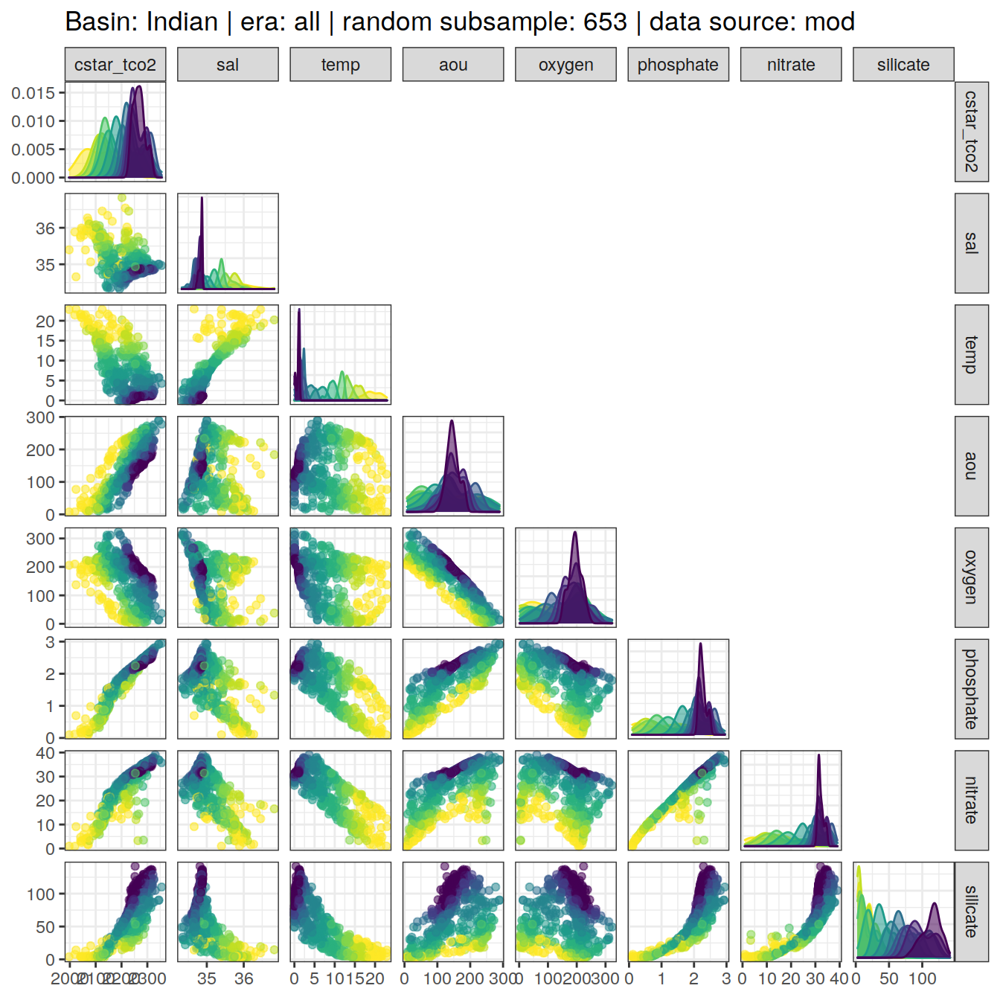

eMLR - assumption testing
Jens Daniel Müller
04 July, 2022
Last updated: 2022-07-04
Checks: 7 0
Knit directory: emlr_obs_v_XXX/
This reproducible R Markdown analysis was created with workflowr (version 1.7.0). The Checks tab describes the reproducibility checks that were applied when the results were created. The Past versions tab lists the development history.
Great! Since the R Markdown file has been committed to the Git repository, you know the exact version of the code that produced these results.
Great job! The global environment was empty. Objects defined in the global environment can affect the analysis in your R Markdown file in unknown ways. For reproduciblity it’s best to always run the code in an empty environment.
The command set.seed(20200707) was run prior to running the code in the R Markdown file. Setting a seed ensures that any results that rely on randomness, e.g. subsampling or permutations, are reproducible.
Great job! Recording the operating system, R version, and package versions is critical for reproducibility.
Nice! There were no cached chunks for this analysis, so you can be confident that you successfully produced the results during this run.
Great job! Using relative paths to the files within your workflowr project makes it easier to run your code on other machines.
Great! You are using Git for version control. Tracking code development and connecting the code version to the results is critical for reproducibility.
The results in this page were generated with repository version c91e9a1. See the Past versions tab to see a history of the changes made to the R Markdown and HTML files.
Note that you need to be careful to ensure that all relevant files for the analysis have been committed to Git prior to generating the results (you can use wflow_publish or wflow_git_commit). workflowr only checks the R Markdown file, but you know if there are other scripts or data files that it depends on. Below is the status of the Git repository when the results were generated:
Ignored files:
Ignored: .Rhistory
Ignored: .Rproj.user/
Unstaged changes:
Modified: code/Workflowr_project_managment.R
Modified: data/auxillary/params_local.rds
Note that any generated files, e.g. HTML, png, CSS, etc., are not included in this status report because it is ok for generated content to have uncommitted changes.
These are the previous versions of the repository in which changes were made to the R Markdown (analysis/eMLR_assumption_testing.Rmd) and HTML (docs/eMLR_assumption_testing.html) files. If you’ve configured a remote Git repository (see ?wflow_git_remote), click on the hyperlinks in the table below to view the files as they were in that past version.
| File | Version | Author | Date | Message |
|---|---|---|---|---|
| html | 767609e | jens-daniel-mueller | 2022-07-04 | Build site. |
| html | f1f428f | jens-daniel-mueller | 2022-06-30 | Build site. |
| html | e743d50 | jens-daniel-mueller | 2022-06-30 | Build site. |
| html | 98ba5c6 | jens-daniel-mueller | 2022-06-30 | Build site. |
| html | 21dbfca | jens-daniel-mueller | 2022-06-29 | Build site. |
| html | 7e8d2ef | jens-daniel-mueller | 2022-06-29 | Build site. |
| html | 2911893 | jens-daniel-mueller | 2022-06-24 | Build site. |
| html | a28c3f7 | jens-daniel-mueller | 2022-06-16 | Build site. |
| html | 469a640 | jens-daniel-mueller | 2022-06-16 | Build site. |
| html | 0c2ca93 | jens-daniel-mueller | 2022-06-15 | Build site. |
| html | fa647ea | jens-daniel-mueller | 2022-05-25 | Build site. |
| html | b7ca0f3 | jens-daniel-mueller | 2022-05-25 | Build site. |
| html | 42feabc | jens-daniel-mueller | 2022-05-23 | Build site. |
| html | 7290e93 | jens-daniel-mueller | 2022-05-20 | Build site. |
| Rmd | f3895c6 | jens-daniel-mueller | 2022-05-20 | testrun with annual CESM subset from RECCAP2 |
| html | 63b7df0 | jens-daniel-mueller | 2022-04-11 | Build site. |
| html | debf33d | jens-daniel-mueller | 2022-04-11 | Build site. |
| html | 6c4f087 | jens-daniel-mueller | 2022-04-11 | Build site. |
| html | 745619a | jens-daniel-mueller | 2022-04-11 | Build site. |
| html | f48f95e | jens-daniel-mueller | 2022-04-11 | Build site. |
| html | acc478b | jens-daniel-mueller | 2022-04-07 | Build site. |
| html | 40a3efa | jens-daniel-mueller | 2022-04-07 | Build site. |
| html | 4af5c45 | jens-daniel-mueller | 2022-04-07 | Build site. |
| html | 36d3277 | jens-daniel-mueller | 2022-04-07 | Build site. |
| html | 1ba3eba | jens-daniel-mueller | 2022-04-07 | Build site. |
| html | 707b5ac | jens-daniel-mueller | 2022-03-24 | Build site. |
| html | 72f20e4 | jens-daniel-mueller | 2022-03-22 | Build site. |
| html | 164f90c | jens-daniel-mueller | 2022-03-22 | Build site. |
| html | 68faa8a | jens-daniel-mueller | 2022-03-21 | Build site. |
| html | cb147cc | jens-daniel-mueller | 2022-03-21 | Build site. |
| html | 1de9aa2 | jens-daniel-mueller | 2022-03-21 | Build site. |
| html | aaf2d24 | jens-daniel-mueller | 2022-03-21 | Build site. |
| html | bdc14f1 | jens-daniel-mueller | 2022-03-21 | Build site. |
| html | 5855ede | jens-daniel-mueller | 2022-03-14 | Build site. |
| html | 6c38fc4 | jens-daniel-mueller | 2022-03-14 | Build site. |
| html | b18dcee | jens-daniel-mueller | 2022-01-27 | Build site. |
| html | 1039ef3 | jens-daniel-mueller | 2022-01-24 | Build site. |
| html | 23582a4 | jens-daniel-mueller | 2022-01-23 | Build site. |
| html | 26e57aa | jens-daniel-mueller | 2022-01-17 | Build site. |
| html | 0a211c9 | jens-daniel-mueller | 2022-01-17 | Build site. |
| html | 035570b | jens-daniel-mueller | 2022-01-17 | Build site. |
| html | 7a1a2fe | jens-daniel-mueller | 2022-01-12 | Build site. |
| html | af4b27f | jens-daniel-mueller | 2022-01-12 | Build site. |
| html | ebd7fbc | jens-daniel-mueller | 2022-01-09 | Build site. |
| html | 013c119 | jens-daniel-mueller | 2022-01-08 | Build site. |
| html | 984b603 | jens-daniel-mueller | 2022-01-06 | Build site. |
| html | 2dc49a1 | jens-daniel-mueller | 2022-01-06 | Build site. |
| html | 8d17c91 | jens-daniel-mueller | 2022-01-05 | Build site. |
| html | dcb68b6 | jens-daniel-mueller | 2022-01-05 | Build site. |
| html | 719a008 | jens-daniel-mueller | 2022-01-05 | Build site. |
| html | 6450fc1 | jens-daniel-mueller | 2022-01-05 | Build site. |
| html | dfed6a1 | jens-daniel-mueller | 2022-01-05 | Build site. |
| html | d5af0d7 | jens-daniel-mueller | 2022-01-04 | Build site. |
| html | f39db85 | jens-daniel-mueller | 2022-01-04 | Build site. |
| html | 4fa937d | jens-daniel-mueller | 2022-01-03 | Build site. |
| html | da28869 | jens-daniel-mueller | 2021-12-23 | Build site. |
| html | 8900388 | jens-daniel-mueller | 2021-12-23 | Build site. |
| html | afdc482 | jens-daniel-mueller | 2021-12-21 | Build site. |
| html | 2fe7f8e | jens-daniel-mueller | 2021-12-08 | Build site. |
| html | a768c5d | jens-daniel-mueller | 2021-12-07 | Build site. |
| html | a7c514b | jens-daniel-mueller | 2021-12-07 | Build site. |
| html | bc1edbd | jens-daniel-mueller | 2021-12-07 | Build site. |
| html | 6cfccf7 | jens-daniel-mueller | 2021-12-06 | Build site. |
| html | 3c60929 | jens-daniel-mueller | 2021-12-06 | Build site. |
| html | 3f76ee3 | jens-daniel-mueller | 2021-12-06 | Build site. |
| html | 2ca1313 | jens-daniel-mueller | 2021-12-05 | Build site. |
| html | 6a78608 | jens-daniel-mueller | 2021-12-02 | Build site. |
| html | a83a09b | jens-daniel-mueller | 2021-11-29 | Build site. |
| html | 72c1041 | jens-daniel-mueller | 2021-11-23 | Build site. |
| html | 3eba8ac | jens-daniel-mueller | 2021-11-23 | Build site. |
| html | ec18ee5 | jens-daniel-mueller | 2021-11-23 | Build site. |
| html | 59cdf58 | jens-daniel-mueller | 2021-11-22 | Build site. |
| html | 3ae2dd1 | jens-daniel-mueller | 2021-11-21 | Build site. |
| html | 5b46219 | jens-daniel-mueller | 2021-11-21 | Build site. |
| html | 99fd72e | jens-daniel-mueller | 2021-11-21 | Build site. |
| html | 5016fc9 | jens-daniel-mueller | 2021-11-19 | Build site. |
| html | 6562075 | jens-daniel-mueller | 2021-11-19 | Build site. |
| html | 6b80483 | jens-daniel-mueller | 2021-11-19 | Build site. |
| html | 98d9e33 | jens-daniel-mueller | 2021-11-11 | Build site. |
| html | d3cb92d | jens-daniel-mueller | 2021-11-08 | Build site. |
| html | 3879a6d | jens-daniel-mueller | 2021-11-08 | Build site. |
| html | 0e032dc | jens-daniel-mueller | 2021-11-04 | Build site. |
| html | abcd28f | jens-daniel-mueller | 2021-11-02 | Build site. |
| html | 290c8fc | jens-daniel-mueller | 2021-11-02 | Build site. |
| html | e02acc9 | jens-daniel-mueller | 2021-11-01 | Build site. |
| html | 58da811 | jens-daniel-mueller | 2021-11-01 | Build site. |
| html | 2781a97 | jens-daniel-mueller | 2021-10-29 | Build site. |
| html | 973192c | jens-daniel-mueller | 2021-10-28 | Build site. |
| html | f792cd8 | jens-daniel-mueller | 2021-10-27 | Build site. |
| html | 22750db | jens-daniel-mueller | 2021-10-27 | Build site. |
| html | 3992e41 | jens-daniel-mueller | 2021-10-27 | Build site. |
| html | f9280c7 | jens-daniel-mueller | 2021-10-21 | Build site. |
| html | bfe90e6 | jens-daniel-mueller | 2021-10-21 | Build site. |
| html | 78a956e | jens-daniel-mueller | 2021-10-21 | Build site. |
| html | 1ba14cf | jens-daniel-mueller | 2021-10-20 | Build site. |
| html | dc0723b | jens-daniel-mueller | 2021-10-19 | Build site. |
| html | cd0ebd8 | jens-daniel-mueller | 2021-10-18 | Build site. |
| html | 046c556 | jens-daniel-mueller | 2021-10-07 | Build site. |
| html | ac73c23 | jens-daniel-mueller | 2021-10-07 | Build site. |
| html | 0bd4ea2 | jens-daniel-mueller | 2021-10-07 | Build site. |
| html | 6969c18 | jens-daniel-mueller | 2021-10-07 | check data distribution |
| html | 06afaca | jens-daniel-mueller | 2021-09-23 | Build site. |
| html | 410dd46 | jens-daniel-mueller | 2021-09-22 | Build site. |
| html | 5a36231 | jens-daniel-mueller | 2021-09-22 | Build site. |
| html | c0bbbe4 | jens-daniel-mueller | 2021-09-22 | Build site. |
| html | 9eac969 | jens-daniel-mueller | 2021-08-30 | Build site. |
| html | 3a584b7 | jens-daniel-mueller | 2021-08-30 | Build site. |
| html | 6e17588 | jens-daniel-mueller | 2021-08-24 | Build site. |
| html | deb425c | jens-daniel-mueller | 2021-08-24 | Build site. |
| html | 534854b | jens-daniel-mueller | 2021-08-19 | Build site. |
| html | 77f4ba7 | jens-daniel-mueller | 2021-08-19 | Build site. |
| html | ece96df | jens-daniel-mueller | 2021-08-19 | Build site. |
| Rmd | eb50c9e | jens-daniel-mueller | 2021-08-19 | test with gap filling after strong removal of outliers |
| html | 27c99b8 | jens-daniel-mueller | 2021-08-19 | Build site. |
| html | a03f2f0 | jens-daniel-mueller | 2021-08-18 | Build site. |
| html | 9335b31 | jens-daniel-mueller | 2021-08-10 | Build site. |
| html | 9943b45 | jens-daniel-mueller | 2021-08-10 | Build site. |
| html | 0b00a2b | jens-daniel-mueller | 2021-08-09 | Build site. |
| html | 755c6b1 | jens-daniel-mueller | 2021-08-09 | Build site. |
| html | cd8e0d5 | jens-daniel-mueller | 2021-08-06 | Build site. |
| html | 15773a0 | jens-daniel-mueller | 2021-08-06 | included calculation of revelle factor |
| html | da61d1a | jens-daniel-mueller | 2021-08-06 | Build site. |
| html | 340d731 | jens-daniel-mueller | 2021-08-06 | Build site. |
| html | 71546e4 | jens-daniel-mueller | 2021-08-06 | test with stricter CANYON-B filtering |
| html | 29444a1 | jens-daniel-mueller | 2021-08-05 | Build site. |
| html | 42e80c0 | jens-daniel-mueller | 2021-08-04 | Build site. |
| html | 48f6eed | jens-daniel-mueller | 2021-08-04 | Build site. |
| html | 1c597ab | jens-daniel-mueller | 2021-08-04 | Build site. |
| html | 81a46a4 | jens-daniel-mueller | 2021-08-03 | Build site. |
| html | b88c61b | jens-daniel-mueller | 2021-08-03 | Build site. |
| html | 0f0d5e5 | jens-daniel-mueller | 2021-08-03 | Build site. |
| html | a53656d | jens-daniel-mueller | 2021-08-03 | Build site. |
| html | 88f7356 | jens-daniel-mueller | 2021-08-02 | Build site. |
| html | d759279 | jens-daniel-mueller | 2021-08-02 | Build site. |
| html | 127b801 | jens-daniel-mueller | 2021-07-24 | Build site. |
| html | 1f65ef1 | jens-daniel-mueller | 2021-07-23 | Build site. |
| html | 912d90e | jens-daniel-mueller | 2021-07-23 | Build site. |
| html | 2477316 | jens-daniel-mueller | 2021-07-23 | rebuild: surface dcant mapping seperate |
| html | c9ccc00 | jens-daniel-mueller | 2021-07-22 | Build site. |
| html | 426b2df | jens-daniel-mueller | 2021-07-21 | Build site. |
| html | 971ce87 | jens-daniel-mueller | 2021-07-13 | Build site. |
| html | c18a8b1 | jens-daniel-mueller | 2021-07-09 | Build site. |
| Rmd | 795a3b0 | jens-daniel-mueller | 2021-07-09 | complete revision |
| html | 910d64a | jens-daniel-mueller | 2021-07-02 | Build site. |
| html | 1cbf907 | jens-daniel-mueller | 2021-07-02 | Build site. |
| html | 955f5dc | jens-daniel-mueller | 2021-06-29 | Build site. |
| html | 9480f94 | jens-daniel-mueller | 2021-06-29 | Build site. |
| html | d054c39 | jens-daniel-mueller | 2021-06-24 | Build site. |
| html | 4fcd066 | jens-daniel-mueller | 2021-06-24 | Build site. |
| html | 3b6387f | jens-daniel-mueller | 2021-06-18 | Build site. |
| html | 3052a6c | jens-daniel-mueller | 2021-06-15 | Build site. |
| html | 3cb64bd | jens-daniel-mueller | 2021-06-15 | Build site. |
| html | c6b3da6 | jens-daniel-mueller | 2021-06-14 | Build site. |
| html | 48c73fc | jens-daniel-mueller | 2021-06-14 | Build site. |
| html | 439ee80 | jens-daniel-mueller | 2021-06-11 | Build site. |
| html | 33ffcab | jens-daniel-mueller | 2021-06-10 | Build site. |
| html | 7e1f407 | jens-daniel-mueller | 2021-06-10 | Build site. |
| html | 2cbe18c | jens-daniel-mueller | 2021-06-10 | added zonal mean section control plots |
| html | 69c79d0 | jens-daniel-mueller | 2021-06-08 | Build site. |
| html | 1772903 | jens-daniel-mueller | 2021-06-07 | Build site. |
| html | 594ed9a | jens-daniel-mueller | 2021-06-04 | Build site. |
| html | db7df0e | jens-daniel-mueller | 2021-06-04 | rebuild without overlapping eras |
| html | 2edc791 | jens-daniel-mueller | 2021-06-04 | Build site. |
| html | 207339d | jens-daniel-mueller | 2021-06-03 | Build site. |
| html | 315710b | jens-daniel-mueller | 2021-06-03 | include anomalous changes |
| html | be90356 | jens-daniel-mueller | 2021-06-02 | Build site. |
| html | d37a85d | jens-daniel-mueller | 2021-05-31 | Build site. |
| html | 4b7a5ee | jens-daniel-mueller | 2021-05-28 | Build site. |
| html | 12b455a | jens-daniel-mueller | 2021-05-27 | Build site. |
| Rmd | ee13efb | jens-daniel-mueller | 2021-05-27 | optional source of local params fully implemented |
| html | 8c736a6 | jens-daniel-mueller | 2021-05-27 | Build site. |
| Rmd | dc8e4e1 | jens-daniel-mueller | 2021-05-27 | optional source of local params implemented |
| html | 25bd183 | jens-daniel-mueller | 2021-05-26 | Build site. |
| html | b79cb2d | jens-daniel-mueller | 2021-05-20 | Build site. |
| html | 62bd574 | jens-daniel-mueller | 2021-05-20 | Build site. |
| html | 7c56c39 | jens-daniel-mueller | 2021-05-19 | Build site. |
| html | 0de759e | jens-daniel-mueller | 2021-05-13 | Build site. |
| html | 52e7583 | jens-daniel-mueller | 2021-05-12 | Build site. |
| html | 969e631 | jens-daniel-mueller | 2021-05-12 | Build site. |
| html | d2a83bc | jens-daniel-mueller | 2021-04-16 | Build site. |
| html | c0a47df | jens-daniel-mueller | 2021-04-16 | Build site. |
| html | 50290e8 | jens-daniel-mueller | 2021-04-16 | overlapping eras |
| html | a00ec94 | jens-daniel-mueller | 2021-04-16 | Build site. |
| html | b6fe355 | jens-daniel-mueller | 2021-04-16 | Build site. |
| html | 81b7c6d | jens-daniel-mueller | 2021-04-16 | Build site. |
| html | ddec5b7 | jens-daniel-mueller | 2021-04-15 | Build site. |
| html | 29edae5 | jens-daniel-mueller | 2021-04-14 | Build site. |
| html | 099d566 | jens-daniel-mueller | 2021-04-14 | Build site. |
| html | bb44686 | jens-daniel-mueller | 2021-04-14 | Build site. |
| html | bf40480 | jens-daniel-mueller | 2021-04-13 | Build site. |
| html | 9f31fe3 | jens-daniel-mueller | 2021-04-13 | Build site. |
| Rmd | 80e1ee3 | jens-daniel-mueller | 2021-04-13 | rerun post-2000 with model data |
| html | c98be84 | jens-daniel-mueller | 2021-04-13 | Build site. |
| html | ea17c90 | jens-daniel-mueller | 2021-04-09 | Build site. |
| Rmd | 4d61e3d | jens-daniel-mueller | 2021-04-09 | included model data |
| html | 338dd3c | jens-daniel-mueller | 2021-04-09 | Build site. |
| html | a79ca2c | jens-daniel-mueller | 2021-04-09 | included model data |
| html | 7831fd3 | jens-daniel-mueller | 2021-04-09 | Build site. |
| html | 20b26d4 | jens-daniel-mueller | 2021-04-08 | Build site. |
| html | c0895f8 | jens-daniel-mueller | 2021-04-07 | Build site. |
| html | 156d5b7 | jens-daniel-mueller | 2021-04-07 | Build site. |
| html | eb827c9 | jens-daniel-mueller | 2021-04-07 | Build site. |
| Rmd | 49be8ed | jens-daniel-mueller | 2021-03-26 | included model data |
| html | ab5c8cf | jens-daniel-mueller | 2021-03-24 | Build site. |
| Rmd | da3c481 | jens-daniel-mueller | 2021-03-24 | included model data |
| html | 19faa17 | jens-daniel-mueller | 2021-03-24 | Build site. |
| Rmd | ae3b4d7 | jens-daniel-mueller | 2021-03-24 | included model data |
| html | 03b6009 | jens-daniel-mueller | 2021-03-23 | removed before copying template |
| html | 98d4a6d | jens-daniel-mueller | 2021-03-23 | Build site. |
| html | f155edd | jens-daniel-mueller | 2021-03-23 | Build site. |
| html | 380d215 | jens-daniel-mueller | 2021-03-21 | Build site. |
| html | 33b385b | jens-daniel-mueller | 2021-03-20 | Build site. |
| html | 330dcd0 | jens-daniel-mueller | 2021-03-20 | Build site. |
| html | 83a13de | jens-daniel-mueller | 2021-03-20 | Build site. |
| html | cf98c6d | jens-daniel-mueller | 2021-03-16 | Build site. |
| html | a1d52ff | jens-daniel-mueller | 2021-03-15 | Build site. |
| html | 0bade3b | jens-daniel-mueller | 2021-03-15 | Build site. |
| html | 27c1f4b | jens-daniel-mueller | 2021-03-14 | Build site. |
| html | af75ebf | jens-daniel-mueller | 2021-03-14 | Build site. |
| html | 5017709 | jens-daniel-mueller | 2021-03-11 | Build site. |
| html | 585b07f | jens-daniel-mueller | 2021-03-11 | Build site. |
| html | 6482ed7 | jens-daniel-mueller | 2021-03-11 | Build site. |
| html | 85a5ed2 | jens-daniel-mueller | 2021-03-10 | Build site. |
| html | 00688a1 | jens-daniel-mueller | 2021-03-05 | Build site. |
| html | 6c0bec6 | jens-daniel-mueller | 2021-03-05 | Build site. |
| html | 3c2ec33 | jens-daniel-mueller | 2021-03-05 | Build site. |
| html | af70b94 | jens-daniel-mueller | 2021-03-04 | Build site. |
| html | 86406d5 | jens-daniel-mueller | 2021-02-24 | Build site. |
| html | 3d3b4cc | jens-daniel-mueller | 2021-02-23 | Build site. |
| html | 7b672f7 | jens-daniel-mueller | 2021-01-11 | Build site. |
| html | 33ba23c | jens-daniel-mueller | 2021-01-07 | Build site. |
| html | 318609d | jens-daniel-mueller | 2020-12-23 | adapted more variable predictor selection |
| html | 9d0b2d0 | jens-daniel-mueller | 2020-12-23 | Build site. |
| html | 0aa2b50 | jens-daniel-mueller | 2020-12-23 | remove html before duplication |
| html | 39113c3 | jens-daniel-mueller | 2020-12-23 | Build site. |
| html | 2886da0 | jens-daniel-mueller | 2020-12-19 | Build site. |
| html | 02f0ee9 | jens-daniel-mueller | 2020-12-18 | cleaned up for copying template |
| html | 965dba3 | jens-daniel-mueller | 2020-12-18 | Build site. |
| html | 5d452fe | jens-daniel-mueller | 2020-12-18 | Build site. |
| Rmd | ca65bf5 | jens-daniel-mueller | 2020-12-18 | rebuild after final cleaning |
| html | 7bcb4eb | jens-daniel-mueller | 2020-12-18 | Build site. |
| html | d397028 | jens-daniel-mueller | 2020-12-18 | Build site. |
| html | 7131186 | jens-daniel-mueller | 2020-12-17 | Build site. |
| html | 22b07fb | jens-daniel-mueller | 2020-12-17 | Build site. |
| html | f3a708f | jens-daniel-mueller | 2020-12-17 | Build site. |
| html | e4ca289 | jens-daniel-mueller | 2020-12-16 | Build site. |
| html | 158fe26 | jens-daniel-mueller | 2020-12-15 | Build site. |
| html | 7a9a4cb | jens-daniel-mueller | 2020-12-15 | Build site. |
| html | 61b263c | jens-daniel-mueller | 2020-12-15 | Build site. |
| html | 4d612dd | jens-daniel-mueller | 2020-12-15 | Build site. |
| Rmd | e7e5ff1 | jens-daniel-mueller | 2020-12-15 | rebuild with eMLR target variable selection |
| html | 953caf3 | jens-daniel-mueller | 2020-12-15 | Build site. |
| html | 42daf5c | jens-daniel-mueller | 2020-12-14 | Build site. |
| Rmd | 923aa7f | jens-daniel-mueller | 2020-12-14 | rebuild with new path and auto folder creation |
| html | 984697e | jens-daniel-mueller | 2020-12-12 | Build site. |
| html | 3ebff89 | jens-daniel-mueller | 2020-12-12 | Build site. |
| html | 5d96d3c | jens-daniel-mueller | 2020-12-11 | Build site. |
| Rmd | 3d33a37 | jens-daniel-mueller | 2020-12-11 | selectable basinmask, try 5 |
| html | b01a367 | jens-daniel-mueller | 2020-12-09 | Build site. |
| html | 24a632f | jens-daniel-mueller | 2020-12-07 | Build site. |
| html | 92dca91 | jens-daniel-mueller | 2020-12-07 | Build site. |
| html | 6a8004b | jens-daniel-mueller | 2020-12-07 | Build site. |
| html | 70bf1a5 | jens-daniel-mueller | 2020-12-07 | Build site. |
| html | 7555355 | jens-daniel-mueller | 2020-12-07 | Build site. |
| html | 143d6fa | jens-daniel-mueller | 2020-12-07 | Build site. |
| Rmd | 33b1973 | jens-daniel-mueller | 2020-12-07 | run with WOCE flag 2 only |
| html | abc6818 | jens-daniel-mueller | 2020-12-03 | Build site. |
| Rmd | 992ba15 | jens-daniel-mueller | 2020-12-03 | rebuild with variable inventory depth |
| html | c8c2e7b | jens-daniel-mueller | 2020-12-03 | Build site. |
| Rmd | 83203db | jens-daniel-mueller | 2020-12-03 | calculate cant with variable inventory depth |
| html | 090e4d5 | jens-daniel-mueller | 2020-12-02 | Build site. |
| html | 7c25f7a | jens-daniel-mueller | 2020-12-02 | Build site. |
| html | ec8dc38 | jens-daniel-mueller | 2020-12-02 | Build site. |
| html | c987de1 | jens-daniel-mueller | 2020-12-02 | Build site. |
| html | f8358f8 | jens-daniel-mueller | 2020-12-02 | Build site. |
| html | b03ddb8 | jens-daniel-mueller | 2020-12-02 | Build site. |
| Rmd | 9183e8f | jens-daniel-mueller | 2020-12-02 | revised assignment of era to eras |
| html | 22d0127 | jens-daniel-mueller | 2020-12-01 | Build site. |
| html | 0ff728b | jens-daniel-mueller | 2020-12-01 | Build site. |
| html | 91435ae | jens-daniel-mueller | 2020-12-01 | Build site. |
| Rmd | 17d09be | jens-daniel-mueller | 2020-12-01 | auto eras naming |
| html | cf19652 | jens-daniel-mueller | 2020-11-30 | Build site. |
| Rmd | 2842970 | jens-daniel-mueller | 2020-11-30 | cleaned for eMLR part only |
| html | 196be51 | jens-daniel-mueller | 2020-11-30 | Build site. |
| Rmd | 7a4b015 | jens-daniel-mueller | 2020-11-30 | first rebuild on ETH server |
| Rmd | bc61ce3 | Jens Müller | 2020-11-30 | Initial commit |
| html | bc61ce3 | Jens Müller | 2020-11-30 | Initial commit |
1 Version ID
The results displayed on this site correspond to the Version_ID: v_XXX
2 Required data
Required are:
- cleaned and prepared GLODAPv2.2020 file
GLODAP <-
read_csv(paste(path_version_data,
"GLODAPv2.2020_MLR_fitting_ready.csv",
sep = ""))3 Predictor correlation
The correlation between:
- pairs of seven potential predictor variables and
- C* and seven potential predictor variables
were investigated based on:
- property-property plots and
- calculated correlation coeffcients.
3.1 Correlation plots
For an overview, a random subset of data from all eras was plotted separately for both basins, with color indicating neutral density slabs (high density = dark-purple color).
plot_fun <- function(df){
ggpairs(
data = df,
columns = c(params_local$MLR_target,
params_local$MLR_predictors),
upper = "blank",
ggplot2::aes(col = gamma_slab, fill = gamma_slab, alpha = 0.01)
) +
scale_fill_viridis_d(direction = -1) +
scale_color_viridis_d(direction = -1) +
labs(title = paste(
"Basin:",
unique(df$basin),
"| era: all | random subsample:",
nrow(df),
"| data source:",
unique(df$data_source)
))
}
GLODAP %>%
slice_sample(n = 5e3) %>%
group_split(basin, data_source) %>%
# head(1) %>%
map(plot_fun)[[1]]
| Version | Author | Date |
|---|---|---|
| 767609e | jens-daniel-mueller | 2022-07-04 |
| f1f428f | jens-daniel-mueller | 2022-06-30 |
| e743d50 | jens-daniel-mueller | 2022-06-30 |
| 98ba5c6 | jens-daniel-mueller | 2022-06-30 |
| 21dbfca | jens-daniel-mueller | 2022-06-29 |
| 7e8d2ef | jens-daniel-mueller | 2022-06-29 |
| 2911893 | jens-daniel-mueller | 2022-06-24 |
| a28c3f7 | jens-daniel-mueller | 2022-06-16 |
| 469a640 | jens-daniel-mueller | 2022-06-16 |
| 0c2ca93 | jens-daniel-mueller | 2022-06-15 |
| fa647ea | jens-daniel-mueller | 2022-05-25 |
| b7ca0f3 | jens-daniel-mueller | 2022-05-25 |
| 42feabc | jens-daniel-mueller | 2022-05-23 |
| 7290e93 | jens-daniel-mueller | 2022-05-20 |
| 745619a | jens-daniel-mueller | 2022-04-11 |
| 1ba3eba | jens-daniel-mueller | 2022-04-07 |
| 707b5ac | jens-daniel-mueller | 2022-03-24 |
| 68faa8a | jens-daniel-mueller | 2022-03-21 |
| cb147cc | jens-daniel-mueller | 2022-03-21 |
| 1de9aa2 | jens-daniel-mueller | 2022-03-21 |
| aaf2d24 | jens-daniel-mueller | 2022-03-21 |
| bdc14f1 | jens-daniel-mueller | 2022-03-21 |
| 5855ede | jens-daniel-mueller | 2022-03-14 |
| 6c38fc4 | jens-daniel-mueller | 2022-03-14 |
| b18dcee | jens-daniel-mueller | 2022-01-27 |
| 1039ef3 | jens-daniel-mueller | 2022-01-24 |
| 23582a4 | jens-daniel-mueller | 2022-01-23 |
| 26e57aa | jens-daniel-mueller | 2022-01-17 |
| 0a211c9 | jens-daniel-mueller | 2022-01-17 |
| 035570b | jens-daniel-mueller | 2022-01-17 |
| af4b27f | jens-daniel-mueller | 2022-01-12 |
| ebd7fbc | jens-daniel-mueller | 2022-01-09 |
| 013c119 | jens-daniel-mueller | 2022-01-08 |
| 984b603 | jens-daniel-mueller | 2022-01-06 |
| 2dc49a1 | jens-daniel-mueller | 2022-01-06 |
| 8d17c91 | jens-daniel-mueller | 2022-01-05 |
| dcb68b6 | jens-daniel-mueller | 2022-01-05 |
| 6450fc1 | jens-daniel-mueller | 2022-01-05 |
| dfed6a1 | jens-daniel-mueller | 2022-01-05 |
| d5af0d7 | jens-daniel-mueller | 2022-01-04 |
| f39db85 | jens-daniel-mueller | 2022-01-04 |
| 4fa937d | jens-daniel-mueller | 2022-01-03 |
| da28869 | jens-daniel-mueller | 2021-12-23 |
| 8900388 | jens-daniel-mueller | 2021-12-23 |
| afdc482 | jens-daniel-mueller | 2021-12-21 |
| 2fe7f8e | jens-daniel-mueller | 2021-12-08 |
| a768c5d | jens-daniel-mueller | 2021-12-07 |
| a7c514b | jens-daniel-mueller | 2021-12-07 |
| bc1edbd | jens-daniel-mueller | 2021-12-07 |
| 6cfccf7 | jens-daniel-mueller | 2021-12-06 |
| 3c60929 | jens-daniel-mueller | 2021-12-06 |
| 2ca1313 | jens-daniel-mueller | 2021-12-05 |
| 6a78608 | jens-daniel-mueller | 2021-12-02 |
| 5b46219 | jens-daniel-mueller | 2021-11-21 |
| 6b80483 | jens-daniel-mueller | 2021-11-19 |
| 98d9e33 | jens-daniel-mueller | 2021-11-11 |
| d3cb92d | jens-daniel-mueller | 2021-11-08 |
| 3879a6d | jens-daniel-mueller | 2021-11-08 |
| 0e032dc | jens-daniel-mueller | 2021-11-04 |
| abcd28f | jens-daniel-mueller | 2021-11-02 |
| 290c8fc | jens-daniel-mueller | 2021-11-02 |
| e02acc9 | jens-daniel-mueller | 2021-11-01 |
| 58da811 | jens-daniel-mueller | 2021-11-01 |
| 2781a97 | jens-daniel-mueller | 2021-10-29 |
| 973192c | jens-daniel-mueller | 2021-10-28 |
| f792cd8 | jens-daniel-mueller | 2021-10-27 |
| 3992e41 | jens-daniel-mueller | 2021-10-27 |
| f9280c7 | jens-daniel-mueller | 2021-10-21 |
| bfe90e6 | jens-daniel-mueller | 2021-10-21 |
| 78a956e | jens-daniel-mueller | 2021-10-21 |
| 1ba14cf | jens-daniel-mueller | 2021-10-20 |
| dc0723b | jens-daniel-mueller | 2021-10-19 |
| cd0ebd8 | jens-daniel-mueller | 2021-10-18 |
| 046c556 | jens-daniel-mueller | 2021-10-07 |
| ac73c23 | jens-daniel-mueller | 2021-10-07 |
| 0bd4ea2 | jens-daniel-mueller | 2021-10-07 |
| 6969c18 | jens-daniel-mueller | 2021-10-07 |
| 06afaca | jens-daniel-mueller | 2021-09-23 |
| c0bbbe4 | jens-daniel-mueller | 2021-09-22 |
| 9eac969 | jens-daniel-mueller | 2021-08-30 |
| 3a584b7 | jens-daniel-mueller | 2021-08-30 |
| deb425c | jens-daniel-mueller | 2021-08-24 |
| 534854b | jens-daniel-mueller | 2021-08-19 |
| 77f4ba7 | jens-daniel-mueller | 2021-08-19 |
| ece96df | jens-daniel-mueller | 2021-08-19 |
| 27c99b8 | jens-daniel-mueller | 2021-08-19 |
| a03f2f0 | jens-daniel-mueller | 2021-08-18 |
| 9335b31 | jens-daniel-mueller | 2021-08-10 |
| 9943b45 | jens-daniel-mueller | 2021-08-10 |
| 0b00a2b | jens-daniel-mueller | 2021-08-09 |
| 755c6b1 | jens-daniel-mueller | 2021-08-09 |
| cd8e0d5 | jens-daniel-mueller | 2021-08-06 |
| 15773a0 | jens-daniel-mueller | 2021-08-06 |
| da61d1a | jens-daniel-mueller | 2021-08-06 |
| 340d731 | jens-daniel-mueller | 2021-08-06 |
| 71546e4 | jens-daniel-mueller | 2021-08-06 |
| 29444a1 | jens-daniel-mueller | 2021-08-05 |
| 42e80c0 | jens-daniel-mueller | 2021-08-04 |
| 48f6eed | jens-daniel-mueller | 2021-08-04 |
| 81a46a4 | jens-daniel-mueller | 2021-08-03 |
| b88c61b | jens-daniel-mueller | 2021-08-03 |
| a53656d | jens-daniel-mueller | 2021-08-03 |
| 88f7356 | jens-daniel-mueller | 2021-08-02 |
| d759279 | jens-daniel-mueller | 2021-08-02 |
| 127b801 | jens-daniel-mueller | 2021-07-24 |
| 912d90e | jens-daniel-mueller | 2021-07-23 |
| 2477316 | jens-daniel-mueller | 2021-07-23 |
| c9ccc00 | jens-daniel-mueller | 2021-07-22 |
| c18a8b1 | jens-daniel-mueller | 2021-07-09 |
| 910d64a | jens-daniel-mueller | 2021-07-02 |
| 1cbf907 | jens-daniel-mueller | 2021-07-02 |
| 955f5dc | jens-daniel-mueller | 2021-06-29 |
| 9480f94 | jens-daniel-mueller | 2021-06-29 |
| d054c39 | jens-daniel-mueller | 2021-06-24 |
| 4fcd066 | jens-daniel-mueller | 2021-06-24 |
| 3b6387f | jens-daniel-mueller | 2021-06-18 |
| c6b3da6 | jens-daniel-mueller | 2021-06-14 |
| 439ee80 | jens-daniel-mueller | 2021-06-11 |
| 33ffcab | jens-daniel-mueller | 2021-06-10 |
| 7e1f407 | jens-daniel-mueller | 2021-06-10 |
| 2cbe18c | jens-daniel-mueller | 2021-06-10 |
| 69c79d0 | jens-daniel-mueller | 2021-06-08 |
| 1772903 | jens-daniel-mueller | 2021-06-07 |
| 594ed9a | jens-daniel-mueller | 2021-06-04 |
| db7df0e | jens-daniel-mueller | 2021-06-04 |
| 2edc791 | jens-daniel-mueller | 2021-06-04 |
| 207339d | jens-daniel-mueller | 2021-06-03 |
| 315710b | jens-daniel-mueller | 2021-06-03 |
| be90356 | jens-daniel-mueller | 2021-06-02 |
| d37a85d | jens-daniel-mueller | 2021-05-31 |
| 4b7a5ee | jens-daniel-mueller | 2021-05-28 |
| 25bd183 | jens-daniel-mueller | 2021-05-26 |
| 62bd574 | jens-daniel-mueller | 2021-05-20 |
| 7c56c39 | jens-daniel-mueller | 2021-05-19 |
| 52e7583 | jens-daniel-mueller | 2021-05-12 |
| 969e631 | jens-daniel-mueller | 2021-05-12 |
| d2a83bc | jens-daniel-mueller | 2021-04-16 |
| c0a47df | jens-daniel-mueller | 2021-04-16 |
| 50290e8 | jens-daniel-mueller | 2021-04-16 |
| a00ec94 | jens-daniel-mueller | 2021-04-16 |
| b6fe355 | jens-daniel-mueller | 2021-04-16 |
| 81b7c6d | jens-daniel-mueller | 2021-04-16 |
| ddec5b7 | jens-daniel-mueller | 2021-04-15 |
| 29edae5 | jens-daniel-mueller | 2021-04-14 |
| 9f31fe3 | jens-daniel-mueller | 2021-04-13 |
| ea17c90 | jens-daniel-mueller | 2021-04-09 |
| 338dd3c | jens-daniel-mueller | 2021-04-09 |
| a79ca2c | jens-daniel-mueller | 2021-04-09 |
| eb827c9 | jens-daniel-mueller | 2021-04-07 |
| ab5c8cf | jens-daniel-mueller | 2021-03-24 |
| 03b6009 | jens-daniel-mueller | 2021-03-23 |
| 98d4a6d | jens-daniel-mueller | 2021-03-23 |
| 83a13de | jens-daniel-mueller | 2021-03-20 |
| cf98c6d | jens-daniel-mueller | 2021-03-16 |
| a1d52ff | jens-daniel-mueller | 2021-03-15 |
| 0bade3b | jens-daniel-mueller | 2021-03-15 |
| 27c1f4b | jens-daniel-mueller | 2021-03-14 |
| af75ebf | jens-daniel-mueller | 2021-03-14 |
| 5017709 | jens-daniel-mueller | 2021-03-11 |
| 585b07f | jens-daniel-mueller | 2021-03-11 |
| 85a5ed2 | jens-daniel-mueller | 2021-03-10 |
| 6c0bec6 | jens-daniel-mueller | 2021-03-05 |
| af70b94 | jens-daniel-mueller | 2021-03-04 |
| 7b672f7 | jens-daniel-mueller | 2021-01-11 |
| 33ba23c | jens-daniel-mueller | 2021-01-07 |
| 318609d | jens-daniel-mueller | 2020-12-23 |
| 9d0b2d0 | jens-daniel-mueller | 2020-12-23 |
| 0aa2b50 | jens-daniel-mueller | 2020-12-23 |
| 2886da0 | jens-daniel-mueller | 2020-12-19 |
| 02f0ee9 | jens-daniel-mueller | 2020-12-18 |
| 7bcb4eb | jens-daniel-mueller | 2020-12-18 |
| 158fe26 | jens-daniel-mueller | 2020-12-15 |
| 7a9a4cb | jens-daniel-mueller | 2020-12-15 |
| 61b263c | jens-daniel-mueller | 2020-12-15 |
| 4d612dd | jens-daniel-mueller | 2020-12-15 |
| 984697e | jens-daniel-mueller | 2020-12-12 |
| 3ebff89 | jens-daniel-mueller | 2020-12-12 |
| 5d96d3c | jens-daniel-mueller | 2020-12-11 |
[[2]]
| Version | Author | Date |
|---|---|---|
| 767609e | jens-daniel-mueller | 2022-07-04 |
| f1f428f | jens-daniel-mueller | 2022-06-30 |
| e743d50 | jens-daniel-mueller | 2022-06-30 |
| 98ba5c6 | jens-daniel-mueller | 2022-06-30 |
| 21dbfca | jens-daniel-mueller | 2022-06-29 |
| 7e8d2ef | jens-daniel-mueller | 2022-06-29 |
| 2911893 | jens-daniel-mueller | 2022-06-24 |
| a28c3f7 | jens-daniel-mueller | 2022-06-16 |
| 469a640 | jens-daniel-mueller | 2022-06-16 |
| 0c2ca93 | jens-daniel-mueller | 2022-06-15 |
| fa647ea | jens-daniel-mueller | 2022-05-25 |
| b7ca0f3 | jens-daniel-mueller | 2022-05-25 |
| 7290e93 | jens-daniel-mueller | 2022-05-20 |
| 745619a | jens-daniel-mueller | 2022-04-11 |
| 1ba3eba | jens-daniel-mueller | 2022-04-07 |
| 707b5ac | jens-daniel-mueller | 2022-03-24 |
| 68faa8a | jens-daniel-mueller | 2022-03-21 |
| cb147cc | jens-daniel-mueller | 2022-03-21 |
| 1de9aa2 | jens-daniel-mueller | 2022-03-21 |
| aaf2d24 | jens-daniel-mueller | 2022-03-21 |
| bdc14f1 | jens-daniel-mueller | 2022-03-21 |
| 5855ede | jens-daniel-mueller | 2022-03-14 |
| 6c38fc4 | jens-daniel-mueller | 2022-03-14 |
| b18dcee | jens-daniel-mueller | 2022-01-27 |
| 1039ef3 | jens-daniel-mueller | 2022-01-24 |
| 23582a4 | jens-daniel-mueller | 2022-01-23 |
| 26e57aa | jens-daniel-mueller | 2022-01-17 |
| 0a211c9 | jens-daniel-mueller | 2022-01-17 |
| 035570b | jens-daniel-mueller | 2022-01-17 |
| af4b27f | jens-daniel-mueller | 2022-01-12 |
| ebd7fbc | jens-daniel-mueller | 2022-01-09 |
| 013c119 | jens-daniel-mueller | 2022-01-08 |
| 984b603 | jens-daniel-mueller | 2022-01-06 |
| 2dc49a1 | jens-daniel-mueller | 2022-01-06 |
| 8d17c91 | jens-daniel-mueller | 2022-01-05 |
| dcb68b6 | jens-daniel-mueller | 2022-01-05 |
| 6450fc1 | jens-daniel-mueller | 2022-01-05 |
| dfed6a1 | jens-daniel-mueller | 2022-01-05 |
| d5af0d7 | jens-daniel-mueller | 2022-01-04 |
| f39db85 | jens-daniel-mueller | 2022-01-04 |
| 4fa937d | jens-daniel-mueller | 2022-01-03 |
| da28869 | jens-daniel-mueller | 2021-12-23 |
| 8900388 | jens-daniel-mueller | 2021-12-23 |
| afdc482 | jens-daniel-mueller | 2021-12-21 |
| 2fe7f8e | jens-daniel-mueller | 2021-12-08 |
| a768c5d | jens-daniel-mueller | 2021-12-07 |
| a7c514b | jens-daniel-mueller | 2021-12-07 |
| bc1edbd | jens-daniel-mueller | 2021-12-07 |
| 6cfccf7 | jens-daniel-mueller | 2021-12-06 |
| 3c60929 | jens-daniel-mueller | 2021-12-06 |
| 2ca1313 | jens-daniel-mueller | 2021-12-05 |
| 6a78608 | jens-daniel-mueller | 2021-12-02 |
| 5b46219 | jens-daniel-mueller | 2021-11-21 |
| 6b80483 | jens-daniel-mueller | 2021-11-19 |
| 98d9e33 | jens-daniel-mueller | 2021-11-11 |
| d3cb92d | jens-daniel-mueller | 2021-11-08 |
| 3879a6d | jens-daniel-mueller | 2021-11-08 |
| 0e032dc | jens-daniel-mueller | 2021-11-04 |
| abcd28f | jens-daniel-mueller | 2021-11-02 |
| 290c8fc | jens-daniel-mueller | 2021-11-02 |
| e02acc9 | jens-daniel-mueller | 2021-11-01 |
| 58da811 | jens-daniel-mueller | 2021-11-01 |
| 2781a97 | jens-daniel-mueller | 2021-10-29 |
| 973192c | jens-daniel-mueller | 2021-10-28 |
| f792cd8 | jens-daniel-mueller | 2021-10-27 |
| 3992e41 | jens-daniel-mueller | 2021-10-27 |
| f9280c7 | jens-daniel-mueller | 2021-10-21 |
| bfe90e6 | jens-daniel-mueller | 2021-10-21 |
| 78a956e | jens-daniel-mueller | 2021-10-21 |
| 1ba14cf | jens-daniel-mueller | 2021-10-20 |
| dc0723b | jens-daniel-mueller | 2021-10-19 |
| cd0ebd8 | jens-daniel-mueller | 2021-10-18 |
| 046c556 | jens-daniel-mueller | 2021-10-07 |
| ac73c23 | jens-daniel-mueller | 2021-10-07 |
| 0bd4ea2 | jens-daniel-mueller | 2021-10-07 |
| 6969c18 | jens-daniel-mueller | 2021-10-07 |
| 06afaca | jens-daniel-mueller | 2021-09-23 |
| c0bbbe4 | jens-daniel-mueller | 2021-09-22 |
| 9eac969 | jens-daniel-mueller | 2021-08-30 |
| 3a584b7 | jens-daniel-mueller | 2021-08-30 |
| deb425c | jens-daniel-mueller | 2021-08-24 |
| 534854b | jens-daniel-mueller | 2021-08-19 |
| 77f4ba7 | jens-daniel-mueller | 2021-08-19 |
| ece96df | jens-daniel-mueller | 2021-08-19 |
| 27c99b8 | jens-daniel-mueller | 2021-08-19 |
| a03f2f0 | jens-daniel-mueller | 2021-08-18 |
| 9335b31 | jens-daniel-mueller | 2021-08-10 |
| 9943b45 | jens-daniel-mueller | 2021-08-10 |
| 0b00a2b | jens-daniel-mueller | 2021-08-09 |
| 755c6b1 | jens-daniel-mueller | 2021-08-09 |
| cd8e0d5 | jens-daniel-mueller | 2021-08-06 |
| 15773a0 | jens-daniel-mueller | 2021-08-06 |
| da61d1a | jens-daniel-mueller | 2021-08-06 |
| 340d731 | jens-daniel-mueller | 2021-08-06 |
| 71546e4 | jens-daniel-mueller | 2021-08-06 |
| 29444a1 | jens-daniel-mueller | 2021-08-05 |
| 42e80c0 | jens-daniel-mueller | 2021-08-04 |
| 48f6eed | jens-daniel-mueller | 2021-08-04 |
| 81a46a4 | jens-daniel-mueller | 2021-08-03 |
| b88c61b | jens-daniel-mueller | 2021-08-03 |
| a53656d | jens-daniel-mueller | 2021-08-03 |
| 88f7356 | jens-daniel-mueller | 2021-08-02 |
| d759279 | jens-daniel-mueller | 2021-08-02 |
| 127b801 | jens-daniel-mueller | 2021-07-24 |
| 912d90e | jens-daniel-mueller | 2021-07-23 |
| 2477316 | jens-daniel-mueller | 2021-07-23 |
| c9ccc00 | jens-daniel-mueller | 2021-07-22 |
| c18a8b1 | jens-daniel-mueller | 2021-07-09 |
| 910d64a | jens-daniel-mueller | 2021-07-02 |
| 1cbf907 | jens-daniel-mueller | 2021-07-02 |
| 955f5dc | jens-daniel-mueller | 2021-06-29 |
| 9480f94 | jens-daniel-mueller | 2021-06-29 |
| d054c39 | jens-daniel-mueller | 2021-06-24 |
| 4fcd066 | jens-daniel-mueller | 2021-06-24 |
| 3b6387f | jens-daniel-mueller | 2021-06-18 |
| c6b3da6 | jens-daniel-mueller | 2021-06-14 |
| 439ee80 | jens-daniel-mueller | 2021-06-11 |
| 33ffcab | jens-daniel-mueller | 2021-06-10 |
| 7e1f407 | jens-daniel-mueller | 2021-06-10 |
| 2cbe18c | jens-daniel-mueller | 2021-06-10 |
| 69c79d0 | jens-daniel-mueller | 2021-06-08 |
| 1772903 | jens-daniel-mueller | 2021-06-07 |
| 594ed9a | jens-daniel-mueller | 2021-06-04 |
| db7df0e | jens-daniel-mueller | 2021-06-04 |
| 2edc791 | jens-daniel-mueller | 2021-06-04 |
| 207339d | jens-daniel-mueller | 2021-06-03 |
| 315710b | jens-daniel-mueller | 2021-06-03 |
| d37a85d | jens-daniel-mueller | 2021-05-31 |
| 4b7a5ee | jens-daniel-mueller | 2021-05-28 |
| 25bd183 | jens-daniel-mueller | 2021-05-26 |
| 62bd574 | jens-daniel-mueller | 2021-05-20 |
| 7c56c39 | jens-daniel-mueller | 2021-05-19 |
| 52e7583 | jens-daniel-mueller | 2021-05-12 |
| 969e631 | jens-daniel-mueller | 2021-05-12 |
| d2a83bc | jens-daniel-mueller | 2021-04-16 |
| c0a47df | jens-daniel-mueller | 2021-04-16 |
| 50290e8 | jens-daniel-mueller | 2021-04-16 |
| a00ec94 | jens-daniel-mueller | 2021-04-16 |
| b6fe355 | jens-daniel-mueller | 2021-04-16 |
| 81b7c6d | jens-daniel-mueller | 2021-04-16 |
| ddec5b7 | jens-daniel-mueller | 2021-04-15 |
| 29edae5 | jens-daniel-mueller | 2021-04-14 |
| 9f31fe3 | jens-daniel-mueller | 2021-04-13 |
| ea17c90 | jens-daniel-mueller | 2021-04-09 |
| 338dd3c | jens-daniel-mueller | 2021-04-09 |
| a79ca2c | jens-daniel-mueller | 2021-04-09 |
| eb827c9 | jens-daniel-mueller | 2021-04-07 |
| ab5c8cf | jens-daniel-mueller | 2021-03-24 |
| 03b6009 | jens-daniel-mueller | 2021-03-23 |
| 98d4a6d | jens-daniel-mueller | 2021-03-23 |
| 83a13de | jens-daniel-mueller | 2021-03-20 |
| cf98c6d | jens-daniel-mueller | 2021-03-16 |
| a1d52ff | jens-daniel-mueller | 2021-03-15 |
| 0bade3b | jens-daniel-mueller | 2021-03-15 |
| 27c1f4b | jens-daniel-mueller | 2021-03-14 |
| af75ebf | jens-daniel-mueller | 2021-03-14 |
| 5017709 | jens-daniel-mueller | 2021-03-11 |
| 585b07f | jens-daniel-mueller | 2021-03-11 |
| 85a5ed2 | jens-daniel-mueller | 2021-03-10 |
| 6c0bec6 | jens-daniel-mueller | 2021-03-05 |
| af70b94 | jens-daniel-mueller | 2021-03-04 |
| 7b672f7 | jens-daniel-mueller | 2021-01-11 |
| 33ba23c | jens-daniel-mueller | 2021-01-07 |
| 318609d | jens-daniel-mueller | 2020-12-23 |
| 9d0b2d0 | jens-daniel-mueller | 2020-12-23 |
| 0aa2b50 | jens-daniel-mueller | 2020-12-23 |
| 2886da0 | jens-daniel-mueller | 2020-12-19 |
| 02f0ee9 | jens-daniel-mueller | 2020-12-18 |
| 7bcb4eb | jens-daniel-mueller | 2020-12-18 |
| 158fe26 | jens-daniel-mueller | 2020-12-15 |
| 7a9a4cb | jens-daniel-mueller | 2020-12-15 |
| 61b263c | jens-daniel-mueller | 2020-12-15 |
| 4d612dd | jens-daniel-mueller | 2020-12-15 |
| 984697e | jens-daniel-mueller | 2020-12-12 |
| 3ebff89 | jens-daniel-mueller | 2020-12-12 |
| 5d96d3c | jens-daniel-mueller | 2020-12-11 |
[[3]]
| Version | Author | Date |
|---|---|---|
| 767609e | jens-daniel-mueller | 2022-07-04 |
| f1f428f | jens-daniel-mueller | 2022-06-30 |
| e743d50 | jens-daniel-mueller | 2022-06-30 |
| 98ba5c6 | jens-daniel-mueller | 2022-06-30 |
| 21dbfca | jens-daniel-mueller | 2022-06-29 |
| 7e8d2ef | jens-daniel-mueller | 2022-06-29 |
| 2911893 | jens-daniel-mueller | 2022-06-24 |
| a28c3f7 | jens-daniel-mueller | 2022-06-16 |
| 469a640 | jens-daniel-mueller | 2022-06-16 |
| 0c2ca93 | jens-daniel-mueller | 2022-06-15 |
| fa647ea | jens-daniel-mueller | 2022-05-25 |
| b7ca0f3 | jens-daniel-mueller | 2022-05-25 |
| 42feabc | jens-daniel-mueller | 2022-05-23 |
| 7290e93 | jens-daniel-mueller | 2022-05-20 |
| 6c4f087 | jens-daniel-mueller | 2022-04-11 |
| 745619a | jens-daniel-mueller | 2022-04-11 |
| 1ba3eba | jens-daniel-mueller | 2022-04-07 |
| 707b5ac | jens-daniel-mueller | 2022-03-24 |
| 68faa8a | jens-daniel-mueller | 2022-03-21 |
| cb147cc | jens-daniel-mueller | 2022-03-21 |
| 1de9aa2 | jens-daniel-mueller | 2022-03-21 |
| aaf2d24 | jens-daniel-mueller | 2022-03-21 |
| bdc14f1 | jens-daniel-mueller | 2022-03-21 |
| 5855ede | jens-daniel-mueller | 2022-03-14 |
| 6c38fc4 | jens-daniel-mueller | 2022-03-14 |
| b18dcee | jens-daniel-mueller | 2022-01-27 |
| 1039ef3 | jens-daniel-mueller | 2022-01-24 |
| 23582a4 | jens-daniel-mueller | 2022-01-23 |
| 26e57aa | jens-daniel-mueller | 2022-01-17 |
| 0a211c9 | jens-daniel-mueller | 2022-01-17 |
| 035570b | jens-daniel-mueller | 2022-01-17 |
| af4b27f | jens-daniel-mueller | 2022-01-12 |
| ebd7fbc | jens-daniel-mueller | 2022-01-09 |
| 013c119 | jens-daniel-mueller | 2022-01-08 |
| 984b603 | jens-daniel-mueller | 2022-01-06 |
| 2dc49a1 | jens-daniel-mueller | 2022-01-06 |
| 8d17c91 | jens-daniel-mueller | 2022-01-05 |
| dcb68b6 | jens-daniel-mueller | 2022-01-05 |
| 6450fc1 | jens-daniel-mueller | 2022-01-05 |
| dfed6a1 | jens-daniel-mueller | 2022-01-05 |
| d5af0d7 | jens-daniel-mueller | 2022-01-04 |
| f39db85 | jens-daniel-mueller | 2022-01-04 |
| 4fa937d | jens-daniel-mueller | 2022-01-03 |
| da28869 | jens-daniel-mueller | 2021-12-23 |
| 8900388 | jens-daniel-mueller | 2021-12-23 |
| afdc482 | jens-daniel-mueller | 2021-12-21 |
| 2fe7f8e | jens-daniel-mueller | 2021-12-08 |
| a768c5d | jens-daniel-mueller | 2021-12-07 |
| a7c514b | jens-daniel-mueller | 2021-12-07 |
| bc1edbd | jens-daniel-mueller | 2021-12-07 |
| 6cfccf7 | jens-daniel-mueller | 2021-12-06 |
| 3c60929 | jens-daniel-mueller | 2021-12-06 |
| 2ca1313 | jens-daniel-mueller | 2021-12-05 |
| 6a78608 | jens-daniel-mueller | 2021-12-02 |
| 5b46219 | jens-daniel-mueller | 2021-11-21 |
| 6562075 | jens-daniel-mueller | 2021-11-19 |
| 6b80483 | jens-daniel-mueller | 2021-11-19 |
| 98d9e33 | jens-daniel-mueller | 2021-11-11 |
| d3cb92d | jens-daniel-mueller | 2021-11-08 |
| 3879a6d | jens-daniel-mueller | 2021-11-08 |
| 0e032dc | jens-daniel-mueller | 2021-11-04 |
| abcd28f | jens-daniel-mueller | 2021-11-02 |
| 290c8fc | jens-daniel-mueller | 2021-11-02 |
| e02acc9 | jens-daniel-mueller | 2021-11-01 |
| 58da811 | jens-daniel-mueller | 2021-11-01 |
| 2781a97 | jens-daniel-mueller | 2021-10-29 |
| 973192c | jens-daniel-mueller | 2021-10-28 |
| f792cd8 | jens-daniel-mueller | 2021-10-27 |
| 22750db | jens-daniel-mueller | 2021-10-27 |
| 3992e41 | jens-daniel-mueller | 2021-10-27 |
| f9280c7 | jens-daniel-mueller | 2021-10-21 |
| bfe90e6 | jens-daniel-mueller | 2021-10-21 |
| 78a956e | jens-daniel-mueller | 2021-10-21 |
| 1ba14cf | jens-daniel-mueller | 2021-10-20 |
| dc0723b | jens-daniel-mueller | 2021-10-19 |
| cd0ebd8 | jens-daniel-mueller | 2021-10-18 |
| 046c556 | jens-daniel-mueller | 2021-10-07 |
| ac73c23 | jens-daniel-mueller | 2021-10-07 |
| 0bd4ea2 | jens-daniel-mueller | 2021-10-07 |
| 6969c18 | jens-daniel-mueller | 2021-10-07 |
| 06afaca | jens-daniel-mueller | 2021-09-23 |
| c0bbbe4 | jens-daniel-mueller | 2021-09-22 |
| 9eac969 | jens-daniel-mueller | 2021-08-30 |
| 3a584b7 | jens-daniel-mueller | 2021-08-30 |
| deb425c | jens-daniel-mueller | 2021-08-24 |
| 534854b | jens-daniel-mueller | 2021-08-19 |
| 77f4ba7 | jens-daniel-mueller | 2021-08-19 |
| ece96df | jens-daniel-mueller | 2021-08-19 |
| 27c99b8 | jens-daniel-mueller | 2021-08-19 |
| a03f2f0 | jens-daniel-mueller | 2021-08-18 |
| 9335b31 | jens-daniel-mueller | 2021-08-10 |
| 9943b45 | jens-daniel-mueller | 2021-08-10 |
| da61d1a | jens-daniel-mueller | 2021-08-06 |
| 340d731 | jens-daniel-mueller | 2021-08-06 |
| 71546e4 | jens-daniel-mueller | 2021-08-06 |
| 29444a1 | jens-daniel-mueller | 2021-08-05 |
| 42e80c0 | jens-daniel-mueller | 2021-08-04 |
| 48f6eed | jens-daniel-mueller | 2021-08-04 |
| 81a46a4 | jens-daniel-mueller | 2021-08-03 |
| b88c61b | jens-daniel-mueller | 2021-08-03 |
| a53656d | jens-daniel-mueller | 2021-08-03 |
| 88f7356 | jens-daniel-mueller | 2021-08-02 |
| d759279 | jens-daniel-mueller | 2021-08-02 |
| 127b801 | jens-daniel-mueller | 2021-07-24 |
| 912d90e | jens-daniel-mueller | 2021-07-23 |
| 2477316 | jens-daniel-mueller | 2021-07-23 |
| c9ccc00 | jens-daniel-mueller | 2021-07-22 |
| c18a8b1 | jens-daniel-mueller | 2021-07-09 |
| 910d64a | jens-daniel-mueller | 2021-07-02 |
| 1cbf907 | jens-daniel-mueller | 2021-07-02 |
| 955f5dc | jens-daniel-mueller | 2021-06-29 |
| 9480f94 | jens-daniel-mueller | 2021-06-29 |
| d054c39 | jens-daniel-mueller | 2021-06-24 |
| 4fcd066 | jens-daniel-mueller | 2021-06-24 |
| 3b6387f | jens-daniel-mueller | 2021-06-18 |
| c6b3da6 | jens-daniel-mueller | 2021-06-14 |
| 439ee80 | jens-daniel-mueller | 2021-06-11 |
| 33ffcab | jens-daniel-mueller | 2021-06-10 |
| 7e1f407 | jens-daniel-mueller | 2021-06-10 |
| 2cbe18c | jens-daniel-mueller | 2021-06-10 |
| 69c79d0 | jens-daniel-mueller | 2021-06-08 |
| 1772903 | jens-daniel-mueller | 2021-06-07 |
| 594ed9a | jens-daniel-mueller | 2021-06-04 |
| db7df0e | jens-daniel-mueller | 2021-06-04 |
| 2edc791 | jens-daniel-mueller | 2021-06-04 |
| 207339d | jens-daniel-mueller | 2021-06-03 |
| 315710b | jens-daniel-mueller | 2021-06-03 |
| be90356 | jens-daniel-mueller | 2021-06-02 |
| d37a85d | jens-daniel-mueller | 2021-05-31 |
| 4b7a5ee | jens-daniel-mueller | 2021-05-28 |
| 25bd183 | jens-daniel-mueller | 2021-05-26 |
| 62bd574 | jens-daniel-mueller | 2021-05-20 |
| 7c56c39 | jens-daniel-mueller | 2021-05-19 |
| 52e7583 | jens-daniel-mueller | 2021-05-12 |
| 969e631 | jens-daniel-mueller | 2021-05-12 |
| d2a83bc | jens-daniel-mueller | 2021-04-16 |
| c0a47df | jens-daniel-mueller | 2021-04-16 |
| 50290e8 | jens-daniel-mueller | 2021-04-16 |
| a00ec94 | jens-daniel-mueller | 2021-04-16 |
| b6fe355 | jens-daniel-mueller | 2021-04-16 |
| 81b7c6d | jens-daniel-mueller | 2021-04-16 |
| ddec5b7 | jens-daniel-mueller | 2021-04-15 |
| 29edae5 | jens-daniel-mueller | 2021-04-14 |
| 099d566 | jens-daniel-mueller | 2021-04-14 |
| bb44686 | jens-daniel-mueller | 2021-04-14 |
| bf40480 | jens-daniel-mueller | 2021-04-13 |
| 9f31fe3 | jens-daniel-mueller | 2021-04-13 |
| ea17c90 | jens-daniel-mueller | 2021-04-09 |
| 338dd3c | jens-daniel-mueller | 2021-04-09 |
| a79ca2c | jens-daniel-mueller | 2021-04-09 |
| eb827c9 | jens-daniel-mueller | 2021-04-07 |
| ab5c8cf | jens-daniel-mueller | 2021-03-24 |
| 0aa2b50 | jens-daniel-mueller | 2020-12-23 |
| 2886da0 | jens-daniel-mueller | 2020-12-19 |
| 02f0ee9 | jens-daniel-mueller | 2020-12-18 |
| 7bcb4eb | jens-daniel-mueller | 2020-12-18 |
| 158fe26 | jens-daniel-mueller | 2020-12-15 |
| 7a9a4cb | jens-daniel-mueller | 2020-12-15 |
| 61b263c | jens-daniel-mueller | 2020-12-15 |
| 4d612dd | jens-daniel-mueller | 2020-12-15 |
| 984697e | jens-daniel-mueller | 2020-12-12 |
| 3ebff89 | jens-daniel-mueller | 2020-12-12 |
| 5d96d3c | jens-daniel-mueller | 2020-12-11 |
[[4]]
| Version | Author | Date |
|---|---|---|
| 767609e | jens-daniel-mueller | 2022-07-04 |
| f1f428f | jens-daniel-mueller | 2022-06-30 |
| e743d50 | jens-daniel-mueller | 2022-06-30 |
| 98ba5c6 | jens-daniel-mueller | 2022-06-30 |
| 21dbfca | jens-daniel-mueller | 2022-06-29 |
| 7e8d2ef | jens-daniel-mueller | 2022-06-29 |
| 2911893 | jens-daniel-mueller | 2022-06-24 |
| a28c3f7 | jens-daniel-mueller | 2022-06-16 |
| 469a640 | jens-daniel-mueller | 2022-06-16 |
| 0c2ca93 | jens-daniel-mueller | 2022-06-15 |
| fa647ea | jens-daniel-mueller | 2022-05-25 |
| b7ca0f3 | jens-daniel-mueller | 2022-05-25 |
| 7290e93 | jens-daniel-mueller | 2022-05-20 |
| 63b7df0 | jens-daniel-mueller | 2022-04-11 |
| 6c4f087 | jens-daniel-mueller | 2022-04-11 |
| 745619a | jens-daniel-mueller | 2022-04-11 |
| 1ba3eba | jens-daniel-mueller | 2022-04-07 |
| 707b5ac | jens-daniel-mueller | 2022-03-24 |
| 68faa8a | jens-daniel-mueller | 2022-03-21 |
| cb147cc | jens-daniel-mueller | 2022-03-21 |
| 1de9aa2 | jens-daniel-mueller | 2022-03-21 |
| aaf2d24 | jens-daniel-mueller | 2022-03-21 |
| bdc14f1 | jens-daniel-mueller | 2022-03-21 |
| 5855ede | jens-daniel-mueller | 2022-03-14 |
| 6c38fc4 | jens-daniel-mueller | 2022-03-14 |
| b18dcee | jens-daniel-mueller | 2022-01-27 |
| 1039ef3 | jens-daniel-mueller | 2022-01-24 |
| 23582a4 | jens-daniel-mueller | 2022-01-23 |
| 26e57aa | jens-daniel-mueller | 2022-01-17 |
| 0a211c9 | jens-daniel-mueller | 2022-01-17 |
| 035570b | jens-daniel-mueller | 2022-01-17 |
| af4b27f | jens-daniel-mueller | 2022-01-12 |
| ebd7fbc | jens-daniel-mueller | 2022-01-09 |
| 013c119 | jens-daniel-mueller | 2022-01-08 |
| 984b603 | jens-daniel-mueller | 2022-01-06 |
| 2dc49a1 | jens-daniel-mueller | 2022-01-06 |
| 8d17c91 | jens-daniel-mueller | 2022-01-05 |
| dcb68b6 | jens-daniel-mueller | 2022-01-05 |
| 6450fc1 | jens-daniel-mueller | 2022-01-05 |
| dfed6a1 | jens-daniel-mueller | 2022-01-05 |
| d5af0d7 | jens-daniel-mueller | 2022-01-04 |
| f39db85 | jens-daniel-mueller | 2022-01-04 |
| 4fa937d | jens-daniel-mueller | 2022-01-03 |
| da28869 | jens-daniel-mueller | 2021-12-23 |
| 8900388 | jens-daniel-mueller | 2021-12-23 |
| afdc482 | jens-daniel-mueller | 2021-12-21 |
| 2fe7f8e | jens-daniel-mueller | 2021-12-08 |
| a768c5d | jens-daniel-mueller | 2021-12-07 |
| a7c514b | jens-daniel-mueller | 2021-12-07 |
| bc1edbd | jens-daniel-mueller | 2021-12-07 |
| 6cfccf7 | jens-daniel-mueller | 2021-12-06 |
| 3c60929 | jens-daniel-mueller | 2021-12-06 |
| 3f76ee3 | jens-daniel-mueller | 2021-12-06 |
| 2ca1313 | jens-daniel-mueller | 2021-12-05 |
| 6a78608 | jens-daniel-mueller | 2021-12-02 |
| a83a09b | jens-daniel-mueller | 2021-11-29 |
| 72c1041 | jens-daniel-mueller | 2021-11-23 |
| 3eba8ac | jens-daniel-mueller | 2021-11-23 |
| ec18ee5 | jens-daniel-mueller | 2021-11-23 |
| 59cdf58 | jens-daniel-mueller | 2021-11-22 |
| 3ae2dd1 | jens-daniel-mueller | 2021-11-21 |
| 5b46219 | jens-daniel-mueller | 2021-11-21 |
| 5016fc9 | jens-daniel-mueller | 2021-11-19 |
| 6562075 | jens-daniel-mueller | 2021-11-19 |
| 6b80483 | jens-daniel-mueller | 2021-11-19 |
| 98d9e33 | jens-daniel-mueller | 2021-11-11 |
| d3cb92d | jens-daniel-mueller | 2021-11-08 |
| 3879a6d | jens-daniel-mueller | 2021-11-08 |
| 0e032dc | jens-daniel-mueller | 2021-11-04 |
| abcd28f | jens-daniel-mueller | 2021-11-02 |
| 290c8fc | jens-daniel-mueller | 2021-11-02 |
| e02acc9 | jens-daniel-mueller | 2021-11-01 |
| 58da811 | jens-daniel-mueller | 2021-11-01 |
| 2781a97 | jens-daniel-mueller | 2021-10-29 |
| 973192c | jens-daniel-mueller | 2021-10-28 |
| f792cd8 | jens-daniel-mueller | 2021-10-27 |
| 22750db | jens-daniel-mueller | 2021-10-27 |
| 3992e41 | jens-daniel-mueller | 2021-10-27 |
| f9280c7 | jens-daniel-mueller | 2021-10-21 |
| bfe90e6 | jens-daniel-mueller | 2021-10-21 |
| 78a956e | jens-daniel-mueller | 2021-10-21 |
| 1ba14cf | jens-daniel-mueller | 2021-10-20 |
| dc0723b | jens-daniel-mueller | 2021-10-19 |
| cd0ebd8 | jens-daniel-mueller | 2021-10-18 |
| 046c556 | jens-daniel-mueller | 2021-10-07 |
| ac73c23 | jens-daniel-mueller | 2021-10-07 |
| 0bd4ea2 | jens-daniel-mueller | 2021-10-07 |
| 6969c18 | jens-daniel-mueller | 2021-10-07 |
| 06afaca | jens-daniel-mueller | 2021-09-23 |
| c0bbbe4 | jens-daniel-mueller | 2021-09-22 |
| 9eac969 | jens-daniel-mueller | 2021-08-30 |
| 3a584b7 | jens-daniel-mueller | 2021-08-30 |
| deb425c | jens-daniel-mueller | 2021-08-24 |
| 534854b | jens-daniel-mueller | 2021-08-19 |
| 77f4ba7 | jens-daniel-mueller | 2021-08-19 |
| ece96df | jens-daniel-mueller | 2021-08-19 |
| 27c99b8 | jens-daniel-mueller | 2021-08-19 |
| a03f2f0 | jens-daniel-mueller | 2021-08-18 |
| 9335b31 | jens-daniel-mueller | 2021-08-10 |
| 9943b45 | jens-daniel-mueller | 2021-08-10 |
| da61d1a | jens-daniel-mueller | 2021-08-06 |
| 340d731 | jens-daniel-mueller | 2021-08-06 |
| 71546e4 | jens-daniel-mueller | 2021-08-06 |
| 29444a1 | jens-daniel-mueller | 2021-08-05 |
| 42e80c0 | jens-daniel-mueller | 2021-08-04 |
| 48f6eed | jens-daniel-mueller | 2021-08-04 |
| 81a46a4 | jens-daniel-mueller | 2021-08-03 |
| b88c61b | jens-daniel-mueller | 2021-08-03 |
| a53656d | jens-daniel-mueller | 2021-08-03 |
| 88f7356 | jens-daniel-mueller | 2021-08-02 |
| d759279 | jens-daniel-mueller | 2021-08-02 |
| 127b801 | jens-daniel-mueller | 2021-07-24 |
| 912d90e | jens-daniel-mueller | 2021-07-23 |
| 2477316 | jens-daniel-mueller | 2021-07-23 |
| c9ccc00 | jens-daniel-mueller | 2021-07-22 |
| c18a8b1 | jens-daniel-mueller | 2021-07-09 |
| 910d64a | jens-daniel-mueller | 2021-07-02 |
| 1cbf907 | jens-daniel-mueller | 2021-07-02 |
| 955f5dc | jens-daniel-mueller | 2021-06-29 |
| 9480f94 | jens-daniel-mueller | 2021-06-29 |
| d054c39 | jens-daniel-mueller | 2021-06-24 |
| 4fcd066 | jens-daniel-mueller | 2021-06-24 |
| 3b6387f | jens-daniel-mueller | 2021-06-18 |
| c6b3da6 | jens-daniel-mueller | 2021-06-14 |
| 439ee80 | jens-daniel-mueller | 2021-06-11 |
| 33ffcab | jens-daniel-mueller | 2021-06-10 |
| 7e1f407 | jens-daniel-mueller | 2021-06-10 |
| 2cbe18c | jens-daniel-mueller | 2021-06-10 |
| 69c79d0 | jens-daniel-mueller | 2021-06-08 |
| 1772903 | jens-daniel-mueller | 2021-06-07 |
| 594ed9a | jens-daniel-mueller | 2021-06-04 |
| db7df0e | jens-daniel-mueller | 2021-06-04 |
| 2edc791 | jens-daniel-mueller | 2021-06-04 |
| 207339d | jens-daniel-mueller | 2021-06-03 |
| 315710b | jens-daniel-mueller | 2021-06-03 |
| d37a85d | jens-daniel-mueller | 2021-05-31 |
| 4b7a5ee | jens-daniel-mueller | 2021-05-28 |
| 25bd183 | jens-daniel-mueller | 2021-05-26 |
| 62bd574 | jens-daniel-mueller | 2021-05-20 |
| 7c56c39 | jens-daniel-mueller | 2021-05-19 |
| 52e7583 | jens-daniel-mueller | 2021-05-12 |
| 969e631 | jens-daniel-mueller | 2021-05-12 |
| d2a83bc | jens-daniel-mueller | 2021-04-16 |
| c0a47df | jens-daniel-mueller | 2021-04-16 |
| 50290e8 | jens-daniel-mueller | 2021-04-16 |
| a00ec94 | jens-daniel-mueller | 2021-04-16 |
| b6fe355 | jens-daniel-mueller | 2021-04-16 |
| 81b7c6d | jens-daniel-mueller | 2021-04-16 |
| ddec5b7 | jens-daniel-mueller | 2021-04-15 |
| 29edae5 | jens-daniel-mueller | 2021-04-14 |
| 099d566 | jens-daniel-mueller | 2021-04-14 |
| bb44686 | jens-daniel-mueller | 2021-04-14 |
| bf40480 | jens-daniel-mueller | 2021-04-13 |
| 9f31fe3 | jens-daniel-mueller | 2021-04-13 |
| ea17c90 | jens-daniel-mueller | 2021-04-09 |
| 338dd3c | jens-daniel-mueller | 2021-04-09 |
| a79ca2c | jens-daniel-mueller | 2021-04-09 |
| eb827c9 | jens-daniel-mueller | 2021-04-07 |
| ab5c8cf | jens-daniel-mueller | 2021-03-24 |
| 984697e | jens-daniel-mueller | 2020-12-12 |
| 3ebff89 | jens-daniel-mueller | 2020-12-12 |
| 5d96d3c | jens-daniel-mueller | 2020-12-11 |
[[5]]
| Version | Author | Date |
|---|---|---|
| 767609e | jens-daniel-mueller | 2022-07-04 |
| f1f428f | jens-daniel-mueller | 2022-06-30 |
| e743d50 | jens-daniel-mueller | 2022-06-30 |
| 98ba5c6 | jens-daniel-mueller | 2022-06-30 |
| 21dbfca | jens-daniel-mueller | 2022-06-29 |
| 7e8d2ef | jens-daniel-mueller | 2022-06-29 |
| 2911893 | jens-daniel-mueller | 2022-06-24 |
| a28c3f7 | jens-daniel-mueller | 2022-06-16 |
| 469a640 | jens-daniel-mueller | 2022-06-16 |
| 0c2ca93 | jens-daniel-mueller | 2022-06-15 |
| fa647ea | jens-daniel-mueller | 2022-05-25 |
| b7ca0f3 | jens-daniel-mueller | 2022-05-25 |
| 42feabc | jens-daniel-mueller | 2022-05-23 |
| 7290e93 | jens-daniel-mueller | 2022-05-20 |
| 745619a | jens-daniel-mueller | 2022-04-11 |
| 1ba3eba | jens-daniel-mueller | 2022-04-07 |
| 707b5ac | jens-daniel-mueller | 2022-03-24 |
| 68faa8a | jens-daniel-mueller | 2022-03-21 |
| cb147cc | jens-daniel-mueller | 2022-03-21 |
| 1de9aa2 | jens-daniel-mueller | 2022-03-21 |
| aaf2d24 | jens-daniel-mueller | 2022-03-21 |
| bdc14f1 | jens-daniel-mueller | 2022-03-21 |
| 5855ede | jens-daniel-mueller | 2022-03-14 |
| 6c38fc4 | jens-daniel-mueller | 2022-03-14 |
| b18dcee | jens-daniel-mueller | 2022-01-27 |
| 1039ef3 | jens-daniel-mueller | 2022-01-24 |
| 23582a4 | jens-daniel-mueller | 2022-01-23 |
| 26e57aa | jens-daniel-mueller | 2022-01-17 |
| 0a211c9 | jens-daniel-mueller | 2022-01-17 |
| 035570b | jens-daniel-mueller | 2022-01-17 |
| af4b27f | jens-daniel-mueller | 2022-01-12 |
| ebd7fbc | jens-daniel-mueller | 2022-01-09 |
| 013c119 | jens-daniel-mueller | 2022-01-08 |
| 984b603 | jens-daniel-mueller | 2022-01-06 |
| 2dc49a1 | jens-daniel-mueller | 2022-01-06 |
| 8d17c91 | jens-daniel-mueller | 2022-01-05 |
| dcb68b6 | jens-daniel-mueller | 2022-01-05 |
| 6450fc1 | jens-daniel-mueller | 2022-01-05 |
| dfed6a1 | jens-daniel-mueller | 2022-01-05 |
| d5af0d7 | jens-daniel-mueller | 2022-01-04 |
| f39db85 | jens-daniel-mueller | 2022-01-04 |
| 4fa937d | jens-daniel-mueller | 2022-01-03 |
| da28869 | jens-daniel-mueller | 2021-12-23 |
| 8900388 | jens-daniel-mueller | 2021-12-23 |
| afdc482 | jens-daniel-mueller | 2021-12-21 |
| 2fe7f8e | jens-daniel-mueller | 2021-12-08 |
| a768c5d | jens-daniel-mueller | 2021-12-07 |
| a7c514b | jens-daniel-mueller | 2021-12-07 |
| bc1edbd | jens-daniel-mueller | 2021-12-07 |
| 6cfccf7 | jens-daniel-mueller | 2021-12-06 |
| 3c60929 | jens-daniel-mueller | 2021-12-06 |
| 2ca1313 | jens-daniel-mueller | 2021-12-05 |
| 6a78608 | jens-daniel-mueller | 2021-12-02 |
| 5b46219 | jens-daniel-mueller | 2021-11-21 |
| 6b80483 | jens-daniel-mueller | 2021-11-19 |
| 98d9e33 | jens-daniel-mueller | 2021-11-11 |
| d3cb92d | jens-daniel-mueller | 2021-11-08 |
| 3879a6d | jens-daniel-mueller | 2021-11-08 |
| 0e032dc | jens-daniel-mueller | 2021-11-04 |
| abcd28f | jens-daniel-mueller | 2021-11-02 |
| 290c8fc | jens-daniel-mueller | 2021-11-02 |
| e02acc9 | jens-daniel-mueller | 2021-11-01 |
| 58da811 | jens-daniel-mueller | 2021-11-01 |
| 2781a97 | jens-daniel-mueller | 2021-10-29 |
| 973192c | jens-daniel-mueller | 2021-10-28 |
| f792cd8 | jens-daniel-mueller | 2021-10-27 |
| 22750db | jens-daniel-mueller | 2021-10-27 |
| 3992e41 | jens-daniel-mueller | 2021-10-27 |
| f9280c7 | jens-daniel-mueller | 2021-10-21 |
| bfe90e6 | jens-daniel-mueller | 2021-10-21 |
| 78a956e | jens-daniel-mueller | 2021-10-21 |
| 1ba14cf | jens-daniel-mueller | 2021-10-20 |
| dc0723b | jens-daniel-mueller | 2021-10-19 |
| cd0ebd8 | jens-daniel-mueller | 2021-10-18 |
| 046c556 | jens-daniel-mueller | 2021-10-07 |
| ac73c23 | jens-daniel-mueller | 2021-10-07 |
| 0bd4ea2 | jens-daniel-mueller | 2021-10-07 |
| 6969c18 | jens-daniel-mueller | 2021-10-07 |
| 06afaca | jens-daniel-mueller | 2021-09-23 |
| c0bbbe4 | jens-daniel-mueller | 2021-09-22 |
| 9eac969 | jens-daniel-mueller | 2021-08-30 |
| 3a584b7 | jens-daniel-mueller | 2021-08-30 |
| deb425c | jens-daniel-mueller | 2021-08-24 |
| 534854b | jens-daniel-mueller | 2021-08-19 |
| 77f4ba7 | jens-daniel-mueller | 2021-08-19 |
| ece96df | jens-daniel-mueller | 2021-08-19 |
| 27c99b8 | jens-daniel-mueller | 2021-08-19 |
| a03f2f0 | jens-daniel-mueller | 2021-08-18 |
| 9335b31 | jens-daniel-mueller | 2021-08-10 |
| 9943b45 | jens-daniel-mueller | 2021-08-10 |
| da61d1a | jens-daniel-mueller | 2021-08-06 |
| 340d731 | jens-daniel-mueller | 2021-08-06 |
| 71546e4 | jens-daniel-mueller | 2021-08-06 |
| 29444a1 | jens-daniel-mueller | 2021-08-05 |
| 42e80c0 | jens-daniel-mueller | 2021-08-04 |
| 48f6eed | jens-daniel-mueller | 2021-08-04 |
| 81a46a4 | jens-daniel-mueller | 2021-08-03 |
| b88c61b | jens-daniel-mueller | 2021-08-03 |
| a53656d | jens-daniel-mueller | 2021-08-03 |
| 88f7356 | jens-daniel-mueller | 2021-08-02 |
| 127b801 | jens-daniel-mueller | 2021-07-24 |
| 912d90e | jens-daniel-mueller | 2021-07-23 |
| 2477316 | jens-daniel-mueller | 2021-07-23 |
| c9ccc00 | jens-daniel-mueller | 2021-07-22 |
| c18a8b1 | jens-daniel-mueller | 2021-07-09 |
| 910d64a | jens-daniel-mueller | 2021-07-02 |
| 1cbf907 | jens-daniel-mueller | 2021-07-02 |
| 955f5dc | jens-daniel-mueller | 2021-06-29 |
| b6fe355 | jens-daniel-mueller | 2021-04-16 |
| 81b7c6d | jens-daniel-mueller | 2021-04-16 |
| 099d566 | jens-daniel-mueller | 2021-04-14 |
| bb44686 | jens-daniel-mueller | 2021-04-14 |
| 984697e | jens-daniel-mueller | 2020-12-12 |
| 3ebff89 | jens-daniel-mueller | 2020-12-12 |
| 5d96d3c | jens-daniel-mueller | 2020-12-11 |
[[6]]
| Version | Author | Date |
|---|---|---|
| 767609e | jens-daniel-mueller | 2022-07-04 |
| f1f428f | jens-daniel-mueller | 2022-06-30 |
| e743d50 | jens-daniel-mueller | 2022-06-30 |
| 98ba5c6 | jens-daniel-mueller | 2022-06-30 |
| 21dbfca | jens-daniel-mueller | 2022-06-29 |
| 7e8d2ef | jens-daniel-mueller | 2022-06-29 |
| 2911893 | jens-daniel-mueller | 2022-06-24 |
| a28c3f7 | jens-daniel-mueller | 2022-06-16 |
| 469a640 | jens-daniel-mueller | 2022-06-16 |
| 0c2ca93 | jens-daniel-mueller | 2022-06-15 |
| fa647ea | jens-daniel-mueller | 2022-05-25 |
| b7ca0f3 | jens-daniel-mueller | 2022-05-25 |
| 7290e93 | jens-daniel-mueller | 2022-05-20 |
| 745619a | jens-daniel-mueller | 2022-04-11 |
| f48f95e | jens-daniel-mueller | 2022-04-11 |
| acc478b | jens-daniel-mueller | 2022-04-07 |
| 40a3efa | jens-daniel-mueller | 2022-04-07 |
| 4af5c45 | jens-daniel-mueller | 2022-04-07 |
| 36d3277 | jens-daniel-mueller | 2022-04-07 |
| 1ba3eba | jens-daniel-mueller | 2022-04-07 |
| 707b5ac | jens-daniel-mueller | 2022-03-24 |
| 72f20e4 | jens-daniel-mueller | 2022-03-22 |
| 164f90c | jens-daniel-mueller | 2022-03-22 |
| 68faa8a | jens-daniel-mueller | 2022-03-21 |
| cb147cc | jens-daniel-mueller | 2022-03-21 |
| 1de9aa2 | jens-daniel-mueller | 2022-03-21 |
| aaf2d24 | jens-daniel-mueller | 2022-03-21 |
| bdc14f1 | jens-daniel-mueller | 2022-03-21 |
| 5855ede | jens-daniel-mueller | 2022-03-14 |
| 6c38fc4 | jens-daniel-mueller | 2022-03-14 |
| b18dcee | jens-daniel-mueller | 2022-01-27 |
| 1039ef3 | jens-daniel-mueller | 2022-01-24 |
| 23582a4 | jens-daniel-mueller | 2022-01-23 |
| 26e57aa | jens-daniel-mueller | 2022-01-17 |
| 0a211c9 | jens-daniel-mueller | 2022-01-17 |
| 035570b | jens-daniel-mueller | 2022-01-17 |
| af4b27f | jens-daniel-mueller | 2022-01-12 |
| ebd7fbc | jens-daniel-mueller | 2022-01-09 |
| 013c119 | jens-daniel-mueller | 2022-01-08 |
| 984b603 | jens-daniel-mueller | 2022-01-06 |
| 2dc49a1 | jens-daniel-mueller | 2022-01-06 |
| 8d17c91 | jens-daniel-mueller | 2022-01-05 |
| dcb68b6 | jens-daniel-mueller | 2022-01-05 |
| 6450fc1 | jens-daniel-mueller | 2022-01-05 |
| dfed6a1 | jens-daniel-mueller | 2022-01-05 |
| d5af0d7 | jens-daniel-mueller | 2022-01-04 |
| f39db85 | jens-daniel-mueller | 2022-01-04 |
| 4fa937d | jens-daniel-mueller | 2022-01-03 |
| da28869 | jens-daniel-mueller | 2021-12-23 |
| 8900388 | jens-daniel-mueller | 2021-12-23 |
| afdc482 | jens-daniel-mueller | 2021-12-21 |
| 2fe7f8e | jens-daniel-mueller | 2021-12-08 |
| a768c5d | jens-daniel-mueller | 2021-12-07 |
| a7c514b | jens-daniel-mueller | 2021-12-07 |
| bc1edbd | jens-daniel-mueller | 2021-12-07 |
| 6cfccf7 | jens-daniel-mueller | 2021-12-06 |
| 3c60929 | jens-daniel-mueller | 2021-12-06 |
| 2ca1313 | jens-daniel-mueller | 2021-12-05 |
| 6a78608 | jens-daniel-mueller | 2021-12-02 |
| 5b46219 | jens-daniel-mueller | 2021-11-21 |
| 6b80483 | jens-daniel-mueller | 2021-11-19 |
| 98d9e33 | jens-daniel-mueller | 2021-11-11 |
| d3cb92d | jens-daniel-mueller | 2021-11-08 |
| 3879a6d | jens-daniel-mueller | 2021-11-08 |
| 0e032dc | jens-daniel-mueller | 2021-11-04 |
| abcd28f | jens-daniel-mueller | 2021-11-02 |
| 290c8fc | jens-daniel-mueller | 2021-11-02 |
| e02acc9 | jens-daniel-mueller | 2021-11-01 |
| 58da811 | jens-daniel-mueller | 2021-11-01 |
| 2781a97 | jens-daniel-mueller | 2021-10-29 |
| 973192c | jens-daniel-mueller | 2021-10-28 |
| f792cd8 | jens-daniel-mueller | 2021-10-27 |
| 22750db | jens-daniel-mueller | 2021-10-27 |
| 3992e41 | jens-daniel-mueller | 2021-10-27 |
| f9280c7 | jens-daniel-mueller | 2021-10-21 |
| bfe90e6 | jens-daniel-mueller | 2021-10-21 |
| 78a956e | jens-daniel-mueller | 2021-10-21 |
| 1ba14cf | jens-daniel-mueller | 2021-10-20 |
| dc0723b | jens-daniel-mueller | 2021-10-19 |
| cd0ebd8 | jens-daniel-mueller | 2021-10-18 |
| 046c556 | jens-daniel-mueller | 2021-10-07 |
| ac73c23 | jens-daniel-mueller | 2021-10-07 |
| 0bd4ea2 | jens-daniel-mueller | 2021-10-07 |
| 6969c18 | jens-daniel-mueller | 2021-10-07 |
| 06afaca | jens-daniel-mueller | 2021-09-23 |
| c0bbbe4 | jens-daniel-mueller | 2021-09-22 |
| 9eac969 | jens-daniel-mueller | 2021-08-30 |
| 3a584b7 | jens-daniel-mueller | 2021-08-30 |
| deb425c | jens-daniel-mueller | 2021-08-24 |
| 534854b | jens-daniel-mueller | 2021-08-19 |
| 77f4ba7 | jens-daniel-mueller | 2021-08-19 |
| ece96df | jens-daniel-mueller | 2021-08-19 |
| 27c99b8 | jens-daniel-mueller | 2021-08-19 |
| a03f2f0 | jens-daniel-mueller | 2021-08-18 |
| 9335b31 | jens-daniel-mueller | 2021-08-10 |
| 9943b45 | jens-daniel-mueller | 2021-08-10 |
| da61d1a | jens-daniel-mueller | 2021-08-06 |
| 340d731 | jens-daniel-mueller | 2021-08-06 |
| 71546e4 | jens-daniel-mueller | 2021-08-06 |
| 29444a1 | jens-daniel-mueller | 2021-08-05 |
| 42e80c0 | jens-daniel-mueller | 2021-08-04 |
| 48f6eed | jens-daniel-mueller | 2021-08-04 |
| 81a46a4 | jens-daniel-mueller | 2021-08-03 |
| b88c61b | jens-daniel-mueller | 2021-08-03 |
| a53656d | jens-daniel-mueller | 2021-08-03 |
| 88f7356 | jens-daniel-mueller | 2021-08-02 |
| 127b801 | jens-daniel-mueller | 2021-07-24 |
| 912d90e | jens-daniel-mueller | 2021-07-23 |
| 2477316 | jens-daniel-mueller | 2021-07-23 |
| c9ccc00 | jens-daniel-mueller | 2021-07-22 |
| c18a8b1 | jens-daniel-mueller | 2021-07-09 |
| 910d64a | jens-daniel-mueller | 2021-07-02 |
| 1cbf907 | jens-daniel-mueller | 2021-07-02 |
| 955f5dc | jens-daniel-mueller | 2021-06-29 |
| b6fe355 | jens-daniel-mueller | 2021-04-16 |
| 81b7c6d | jens-daniel-mueller | 2021-04-16 |
| 099d566 | jens-daniel-mueller | 2021-04-14 |
| bb44686 | jens-daniel-mueller | 2021-04-14 |
GLODAP <- GLODAP %>%
filter(data_source == "obs") %>%
select(-data_source)Individual correlation plots for each basin, era and neutral density (gamma) slab are available at:
/nfs/kryo/work/jenmueller/emlr_cant/observations/v_XXX/figures/Observations_correlation/
if (params_local$plot_all_figures == "y") {
for (i_basin in unique(GLODAP$basin)) {
for (i_era in unique(GLODAP$era)) {
# i_basin <- unique(GLODAP$basin)[1]
# i_era <- unique(GLODAP$era)[1]
GLODAP_basin_era <- GLODAP %>%
filter(basin == i_basin,
era == i_era)
for (i_gamma_slab in unique(GLODAP_basin_era$gamma_slab)) {
# i_gamma_slab <- unique(GLODAP_basin_era$gamma_slab)[5]
GLODAP_highlight <- GLODAP_basin_era %>%
mutate(gamma_highlight = if_else(gamma_slab == i_gamma_slab,
"in", "out")) %>%
arrange(desc(gamma_highlight))
p <- GLODAP_highlight %>%
ggpairs(
columns = c(params_local$MLR_target,
params_local$MLR_predictors),
ggplot2::aes(
col = gamma_highlight,
fill = gamma_highlight,
alpha = 0.01
)
) +
scale_fill_manual(values = c("red", "grey")) +
scale_color_manual(values = c("red", "grey")) +
labs(
title = paste(
i_era,
"|",
i_basin,
"| Gamma slab",
i_gamma_slab,
"| # obs total",
nrow(GLODAP_basin_era),
"| # obs slab",
nrow(GLODAP_highlight %>%
filter(gamma_highlight == "in"))
)
)
png(
filename = paste(
path_version_figures,
"Observations_correlation/",
paste(
"Predictor_correlation",
i_era,
i_basin,
i_gamma_slab,
".png",
sep = "_"
),
sep = ""),
width = 12,
height = 12,
units = "in",
res = 300
)
print(p)
dev.off()
}
}
}
}3.2 Correlation assesment
3.2.1 Calculation of correlation coeffcients
Correlation coefficients were calculated individually within each slabs, era and basin.
for (i_basin in unique(GLODAP$basin)) {
for (i_era in unique(GLODAP$era)) {
# i_basin <- unique(GLODAP$basin)[1]
# i_era <- unique(GLODAP$era)[1]
GLODAP_basin_era <- GLODAP %>%
filter(basin == i_basin,
era == i_era) %>%
select(basin,
era,
gamma_slab,
params_local$MLR_target,
params_local$MLR_predictors)
for (i_gamma_slab in unique(GLODAP_basin_era$gamma_slab)) {
# i_gamma_slab <- unique(GLODAP_basin_era$gamma_slab)[5]
print(i_gamma_slab)
GLODAP_basin_era_slab <- GLODAP_basin_era %>%
filter(gamma_slab == i_gamma_slab)
# calculate correlation table
cor_target_predictor_temp <- GLODAP_basin_era_slab %>%
select(-c(basin, era, gamma_slab)) %>%
correlate() %>%
focus(params_local$MLR_target) %>%
mutate(basin = i_basin,
era = i_era,
gamma_slab = i_gamma_slab)
if (exists("cor_target_predictor")) {
cor_target_predictor <-
bind_rows(cor_target_predictor, cor_target_predictor_temp)
}
if (!exists("cor_target_predictor")) {
cor_target_predictor <- cor_target_predictor_temp
}
cor_predictors_temp <- GLODAP_basin_era_slab %>%
select(-c(basin, era, gamma_slab)) %>%
correlate() %>%
shave %>%
stretch() %>%
filter(!is.na(r),
x != params_local$MLR_target,
y != params_local$MLR_target) %>%
mutate(pair = paste(x, y, sep = " + ")) %>%
select(-c(x, y)) %>%
mutate(basin = i_basin,
era = i_era,
gamma_slab = i_gamma_slab)
if (exists("cor_predictors")) {
cor_predictors <- bind_rows(cor_predictors, cor_predictors_temp)
}
if (!exists("cor_predictors")) {
cor_predictors <- cor_predictors_temp
}
}
}
}
rm(cor_predictors_temp, cor_target_predictor_temp,
i_gamma_slab, i_era, i_basin,
GLODAP_basin_era, GLODAP_basin_era_slab)3.2.2 Predictor pairs
Below, the range of correlations coefficients for each predictor pair is plotted per basin (facet) and density slab (color). Note that the range indicates the min and max values of in total 3 calculated coefficients (one per era).
# calculate min, max, mean across all eras
cor_predictors_stats <- cor_predictors %>%
group_by(pair, basin, gamma_slab) %>%
summarise(mean_r = mean(r),
min_r = min(r),
max_r = max(r)) %>%
ungroup()
# plot figure
cor_predictors_stats %>%
mutate(pair = reorder(pair, mean_r)) %>%
ggplot() +
geom_vline(xintercept = c(-0.9, 0.9), col = "red") +
geom_vline(xintercept = 0) +
geom_linerange(
aes(y = pair, xmin = min_r, xmax = max_r, col = gamma_slab),
position = position_dodge(width = 0.6)) +
facet_wrap(~basin) +
scale_color_viridis_d(direction = -1) +
labs(x = "correlation coefficient", y = "") +
theme(legend.position = "top")
| Version | Author | Date |
|---|---|---|
| 767609e | jens-daniel-mueller | 2022-07-04 |
| f1f428f | jens-daniel-mueller | 2022-06-30 |
| e743d50 | jens-daniel-mueller | 2022-06-30 |
| 98ba5c6 | jens-daniel-mueller | 2022-06-30 |
| 21dbfca | jens-daniel-mueller | 2022-06-29 |
| 7e8d2ef | jens-daniel-mueller | 2022-06-29 |
| 2911893 | jens-daniel-mueller | 2022-06-24 |
| a28c3f7 | jens-daniel-mueller | 2022-06-16 |
| 469a640 | jens-daniel-mueller | 2022-06-16 |
| 0c2ca93 | jens-daniel-mueller | 2022-06-15 |
| fa647ea | jens-daniel-mueller | 2022-05-25 |
| b7ca0f3 | jens-daniel-mueller | 2022-05-25 |
| 7290e93 | jens-daniel-mueller | 2022-05-20 |
| 745619a | jens-daniel-mueller | 2022-04-11 |
| f48f95e | jens-daniel-mueller | 2022-04-11 |
| acc478b | jens-daniel-mueller | 2022-04-07 |
| 40a3efa | jens-daniel-mueller | 2022-04-07 |
| 4af5c45 | jens-daniel-mueller | 2022-04-07 |
| 36d3277 | jens-daniel-mueller | 2022-04-07 |
| 1ba3eba | jens-daniel-mueller | 2022-04-07 |
| 707b5ac | jens-daniel-mueller | 2022-03-24 |
| cb147cc | jens-daniel-mueller | 2022-03-21 |
| aaf2d24 | jens-daniel-mueller | 2022-03-21 |
| 6c38fc4 | jens-daniel-mueller | 2022-03-14 |
| b18dcee | jens-daniel-mueller | 2022-01-27 |
| 1039ef3 | jens-daniel-mueller | 2022-01-24 |
| 23582a4 | jens-daniel-mueller | 2022-01-23 |
| 26e57aa | jens-daniel-mueller | 2022-01-17 |
| 0a211c9 | jens-daniel-mueller | 2022-01-17 |
| 035570b | jens-daniel-mueller | 2022-01-17 |
| af4b27f | jens-daniel-mueller | 2022-01-12 |
| 013c119 | jens-daniel-mueller | 2022-01-08 |
| 8d17c91 | jens-daniel-mueller | 2022-01-05 |
| dfed6a1 | jens-daniel-mueller | 2022-01-05 |
| f39db85 | jens-daniel-mueller | 2022-01-04 |
| 4fa937d | jens-daniel-mueller | 2022-01-03 |
| 8900388 | jens-daniel-mueller | 2021-12-23 |
| afdc482 | jens-daniel-mueller | 2021-12-21 |
| 2fe7f8e | jens-daniel-mueller | 2021-12-08 |
| a768c5d | jens-daniel-mueller | 2021-12-07 |
| a7c514b | jens-daniel-mueller | 2021-12-07 |
| bc1edbd | jens-daniel-mueller | 2021-12-07 |
| 6cfccf7 | jens-daniel-mueller | 2021-12-06 |
| 3c60929 | jens-daniel-mueller | 2021-12-06 |
| 3f76ee3 | jens-daniel-mueller | 2021-12-06 |
| 2ca1313 | jens-daniel-mueller | 2021-12-05 |
| 6a78608 | jens-daniel-mueller | 2021-12-02 |
| a83a09b | jens-daniel-mueller | 2021-11-29 |
| 72c1041 | jens-daniel-mueller | 2021-11-23 |
| 3eba8ac | jens-daniel-mueller | 2021-11-23 |
| ec18ee5 | jens-daniel-mueller | 2021-11-23 |
| 5b46219 | jens-daniel-mueller | 2021-11-21 |
| 6b80483 | jens-daniel-mueller | 2021-11-19 |
| 98d9e33 | jens-daniel-mueller | 2021-11-11 |
| d3cb92d | jens-daniel-mueller | 2021-11-08 |
| 3879a6d | jens-daniel-mueller | 2021-11-08 |
| 0e032dc | jens-daniel-mueller | 2021-11-04 |
| abcd28f | jens-daniel-mueller | 2021-11-02 |
| 290c8fc | jens-daniel-mueller | 2021-11-02 |
| e02acc9 | jens-daniel-mueller | 2021-11-01 |
| 58da811 | jens-daniel-mueller | 2021-11-01 |
| 2781a97 | jens-daniel-mueller | 2021-10-29 |
| 973192c | jens-daniel-mueller | 2021-10-28 |
| f792cd8 | jens-daniel-mueller | 2021-10-27 |
| 22750db | jens-daniel-mueller | 2021-10-27 |
| 3992e41 | jens-daniel-mueller | 2021-10-27 |
| f9280c7 | jens-daniel-mueller | 2021-10-21 |
| bfe90e6 | jens-daniel-mueller | 2021-10-21 |
| 78a956e | jens-daniel-mueller | 2021-10-21 |
| 1ba14cf | jens-daniel-mueller | 2021-10-20 |
| dc0723b | jens-daniel-mueller | 2021-10-19 |
| cd0ebd8 | jens-daniel-mueller | 2021-10-18 |
| 046c556 | jens-daniel-mueller | 2021-10-07 |
| ac73c23 | jens-daniel-mueller | 2021-10-07 |
| 0bd4ea2 | jens-daniel-mueller | 2021-10-07 |
| 6969c18 | jens-daniel-mueller | 2021-10-07 |
| 06afaca | jens-daniel-mueller | 2021-09-23 |
| c0bbbe4 | jens-daniel-mueller | 2021-09-22 |
| 9eac969 | jens-daniel-mueller | 2021-08-30 |
| 3a584b7 | jens-daniel-mueller | 2021-08-30 |
| deb425c | jens-daniel-mueller | 2021-08-24 |
| 534854b | jens-daniel-mueller | 2021-08-19 |
| 77f4ba7 | jens-daniel-mueller | 2021-08-19 |
| ece96df | jens-daniel-mueller | 2021-08-19 |
| 27c99b8 | jens-daniel-mueller | 2021-08-19 |
| a03f2f0 | jens-daniel-mueller | 2021-08-18 |
| 9335b31 | jens-daniel-mueller | 2021-08-10 |
| 9943b45 | jens-daniel-mueller | 2021-08-10 |
| 0b00a2b | jens-daniel-mueller | 2021-08-09 |
| 755c6b1 | jens-daniel-mueller | 2021-08-09 |
| cd8e0d5 | jens-daniel-mueller | 2021-08-06 |
| 15773a0 | jens-daniel-mueller | 2021-08-06 |
| da61d1a | jens-daniel-mueller | 2021-08-06 |
| 340d731 | jens-daniel-mueller | 2021-08-06 |
| 71546e4 | jens-daniel-mueller | 2021-08-06 |
| 29444a1 | jens-daniel-mueller | 2021-08-05 |
| 42e80c0 | jens-daniel-mueller | 2021-08-04 |
| 48f6eed | jens-daniel-mueller | 2021-08-04 |
| 81a46a4 | jens-daniel-mueller | 2021-08-03 |
| b88c61b | jens-daniel-mueller | 2021-08-03 |
| a53656d | jens-daniel-mueller | 2021-08-03 |
| 88f7356 | jens-daniel-mueller | 2021-08-02 |
| d759279 | jens-daniel-mueller | 2021-08-02 |
| 127b801 | jens-daniel-mueller | 2021-07-24 |
| 912d90e | jens-daniel-mueller | 2021-07-23 |
| 2477316 | jens-daniel-mueller | 2021-07-23 |
| c9ccc00 | jens-daniel-mueller | 2021-07-22 |
| 910d64a | jens-daniel-mueller | 2021-07-02 |
| 1cbf907 | jens-daniel-mueller | 2021-07-02 |
| 955f5dc | jens-daniel-mueller | 2021-06-29 |
| 9480f94 | jens-daniel-mueller | 2021-06-29 |
| d054c39 | jens-daniel-mueller | 2021-06-24 |
| 4fcd066 | jens-daniel-mueller | 2021-06-24 |
| 7e1f407 | jens-daniel-mueller | 2021-06-10 |
| 2cbe18c | jens-daniel-mueller | 2021-06-10 |
| 594ed9a | jens-daniel-mueller | 2021-06-04 |
| db7df0e | jens-daniel-mueller | 2021-06-04 |
| 207339d | jens-daniel-mueller | 2021-06-03 |
| 315710b | jens-daniel-mueller | 2021-06-03 |
| d37a85d | jens-daniel-mueller | 2021-05-31 |
| 25bd183 | jens-daniel-mueller | 2021-05-26 |
| 62bd574 | jens-daniel-mueller | 2021-05-20 |
| 7c56c39 | jens-daniel-mueller | 2021-05-19 |
| 52e7583 | jens-daniel-mueller | 2021-05-12 |
| 969e631 | jens-daniel-mueller | 2021-05-12 |
| d2a83bc | jens-daniel-mueller | 2021-04-16 |
| c0a47df | jens-daniel-mueller | 2021-04-16 |
| 50290e8 | jens-daniel-mueller | 2021-04-16 |
| b6fe355 | jens-daniel-mueller | 2021-04-16 |
| 81b7c6d | jens-daniel-mueller | 2021-04-16 |
| ddec5b7 | jens-daniel-mueller | 2021-04-15 |
| 29edae5 | jens-daniel-mueller | 2021-04-14 |
| 099d566 | jens-daniel-mueller | 2021-04-14 |
| bb44686 | jens-daniel-mueller | 2021-04-14 |
| bf40480 | jens-daniel-mueller | 2021-04-13 |
| 9f31fe3 | jens-daniel-mueller | 2021-04-13 |
| 338dd3c | jens-daniel-mueller | 2021-04-09 |
| a79ca2c | jens-daniel-mueller | 2021-04-09 |
| eb827c9 | jens-daniel-mueller | 2021-04-07 |
| 19faa17 | jens-daniel-mueller | 2021-03-24 |
| 03b6009 | jens-daniel-mueller | 2021-03-23 |
| 98d4a6d | jens-daniel-mueller | 2021-03-23 |
| f155edd | jens-daniel-mueller | 2021-03-23 |
| 83a13de | jens-daniel-mueller | 2021-03-20 |
| cf98c6d | jens-daniel-mueller | 2021-03-16 |
| a1d52ff | jens-daniel-mueller | 2021-03-15 |
| 0bade3b | jens-daniel-mueller | 2021-03-15 |
| 27c1f4b | jens-daniel-mueller | 2021-03-14 |
| af75ebf | jens-daniel-mueller | 2021-03-14 |
| 5017709 | jens-daniel-mueller | 2021-03-11 |
| 585b07f | jens-daniel-mueller | 2021-03-11 |
| 85a5ed2 | jens-daniel-mueller | 2021-03-10 |
| 6c0bec6 | jens-daniel-mueller | 2021-03-05 |
| 7b672f7 | jens-daniel-mueller | 2021-01-11 |
| 33ba23c | jens-daniel-mueller | 2021-01-07 |
| 318609d | jens-daniel-mueller | 2020-12-23 |
| 9d0b2d0 | jens-daniel-mueller | 2020-12-23 |
| 0aa2b50 | jens-daniel-mueller | 2020-12-23 |
| 2886da0 | jens-daniel-mueller | 2020-12-19 |
| 02f0ee9 | jens-daniel-mueller | 2020-12-18 |
| 158fe26 | jens-daniel-mueller | 2020-12-15 |
| 984697e | jens-daniel-mueller | 2020-12-12 |
| 3ebff89 | jens-daniel-mueller | 2020-12-12 |
| 5d96d3c | jens-daniel-mueller | 2020-12-11 |
| 24a632f | jens-daniel-mueller | 2020-12-07 |
| 6a8004b | jens-daniel-mueller | 2020-12-07 |
| 70bf1a5 | jens-daniel-mueller | 2020-12-07 |
| 7555355 | jens-daniel-mueller | 2020-12-07 |
| 143d6fa | jens-daniel-mueller | 2020-12-07 |
| 0ff728b | jens-daniel-mueller | 2020-12-01 |
| 91435ae | jens-daniel-mueller | 2020-12-01 |
| 196be51 | jens-daniel-mueller | 2020-11-30 |
| bc61ce3 | Jens Müller | 2020-11-30 |
# print table
kable(cor_predictors_stats) %>%
add_header_above() %>%
kable_styling() %>%
scroll_box(width = "100%", height = "400px")| pair | basin | gamma_slab | mean_r | min_r | max_r |
|---|---|---|---|---|---|
| aou + nitrate | Atlantic | (-Inf,26] | 0.9107189 | 0.9060590 | 0.9153787 |
| aou + nitrate | Atlantic | (26,26.5] | 0.9493510 | 0.9431434 | 0.9555586 |
| aou + nitrate | Atlantic | (26.5,26.75] | 0.9534506 | 0.9490615 | 0.9578397 |
| aou + nitrate | Atlantic | (26.75,27] | 0.8973091 | 0.8759405 | 0.9186777 |
| aou + nitrate | Atlantic | (27,27.25] | 0.8482508 | 0.7994090 | 0.8970926 |
| aou + nitrate | Atlantic | (27.25,27.5] | 0.7775059 | 0.7034084 | 0.8516034 |
| aou + nitrate | Atlantic | (27.5,27.75] | 0.8592335 | 0.8280113 | 0.8904557 |
| aou + nitrate | Atlantic | (27.75,27.85] | 0.9240936 | 0.9121822 | 0.9360051 |
| aou + nitrate | Atlantic | (27.85,27.95] | 0.9349126 | 0.9223869 | 0.9474384 |
| aou + nitrate | Atlantic | (27.95,28.05] | 0.9391049 | 0.9236002 | 0.9546095 |
| aou + nitrate | Atlantic | (28.05,28.1] | 0.9647451 | 0.9564352 | 0.9730551 |
| aou + nitrate | Atlantic | (28.1,28.15] | 0.9769072 | 0.9694780 | 0.9843363 |
| aou + nitrate | Atlantic | (28.15,28.2] | 0.9884600 | 0.9826785 | 0.9942416 |
| aou + nitrate | Atlantic | (28.2, Inf] | 0.8748441 | 0.8303999 | 0.9192883 |
| aou + nitrate | Indian | (-Inf,26] | 0.9892213 | 0.9890024 | 0.9894403 |
| aou + nitrate | Indian | (26,26.5] | 0.9819611 | 0.9817315 | 0.9821908 |
| aou + nitrate | Indian | (26.5,26.75] | 0.9677231 | 0.9570474 | 0.9783988 |
| aou + nitrate | Indian | (26.75,27] | 0.9341518 | 0.9303821 | 0.9379215 |
| aou + nitrate | Indian | (27,27.25] | 0.8908269 | 0.8875099 | 0.8941439 |
| aou + nitrate | Indian | (27.25,27.5] | 0.8974374 | 0.8703038 | 0.9245710 |
| aou + nitrate | Indian | (27.5,27.75] | 0.9258312 | 0.8993067 | 0.9523557 |
| aou + nitrate | Indian | (27.75,27.85] | 0.9046060 | 0.8981566 | 0.9110554 |
| aou + nitrate | Indian | (27.85,27.95] | 0.8819589 | 0.8779088 | 0.8860090 |
| aou + nitrate | Indian | (27.95,28.05] | 0.8386114 | 0.7988200 | 0.8784027 |
| aou + nitrate | Indian | (28.05,28.1] | 0.9126350 | 0.8927166 | 0.9325534 |
| aou + nitrate | Indian | (28.1, Inf] | 0.6499549 | 0.5951997 | 0.7047101 |
| aou + nitrate | Pacific | (-Inf,26] | 0.8698998 | 0.8435137 | 0.8962859 |
| aou + nitrate | Pacific | (26,26.5] | 0.8418773 | 0.8284691 | 0.8552855 |
| aou + nitrate | Pacific | (26.5,26.75] | 0.7918830 | 0.7722562 | 0.8115099 |
| aou + nitrate | Pacific | (26.75,27] | 0.9073763 | 0.8921199 | 0.9226326 |
| aou + nitrate | Pacific | (27,27.25] | 0.9740446 | 0.9722043 | 0.9758848 |
| aou + nitrate | Pacific | (27.25,27.5] | 0.9774827 | 0.9766781 | 0.9782872 |
| aou + nitrate | Pacific | (27.5,27.75] | 0.9785266 | 0.9762081 | 0.9808450 |
| aou + nitrate | Pacific | (27.75,27.85] | 0.9851317 | 0.9813264 | 0.9889369 |
| aou + nitrate | Pacific | (27.85,27.95] | 0.9839198 | 0.9796386 | 0.9882011 |
| aou + nitrate | Pacific | (27.95,28.05] | 0.9730389 | 0.9659838 | 0.9800940 |
| aou + nitrate | Pacific | (28.05,28.1] | 0.9609387 | 0.9386319 | 0.9832456 |
| aou + nitrate | Pacific | (28.1, Inf] | 0.9529869 | 0.9512212 | 0.9547526 |
| aou + oxygen | Atlantic | (-Inf,26] | -0.9416046 | -0.9445102 | -0.9386990 |
| aou + oxygen | Atlantic | (26,26.5] | -0.9566751 | -0.9645784 | -0.9487719 |
| aou + oxygen | Atlantic | (26.5,26.75] | -0.9652481 | -0.9720992 | -0.9583970 |
| aou + oxygen | Atlantic | (26.75,27] | -0.9641253 | -0.9673052 | -0.9609453 |
| aou + oxygen | Atlantic | (27,27.25] | -0.9677140 | -0.9705647 | -0.9648632 |
| aou + oxygen | Atlantic | (27.25,27.5] | -0.9529158 | -0.9529515 | -0.9528801 |
| aou + oxygen | Atlantic | (27.5,27.75] | -0.9365915 | -0.9501222 | -0.9230608 |
| aou + oxygen | Atlantic | (27.75,27.85] | -0.9597542 | -0.9651269 | -0.9543816 |
| aou + oxygen | Atlantic | (27.85,27.95] | -0.9760865 | -0.9811829 | -0.9709901 |
| aou + oxygen | Atlantic | (27.95,28.05] | -0.9747426 | -0.9861493 | -0.9633359 |
| aou + oxygen | Atlantic | (28.05,28.1] | -0.9862518 | -0.9905075 | -0.9819961 |
| aou + oxygen | Atlantic | (28.1,28.15] | -0.9913085 | -0.9941411 | -0.9884758 |
| aou + oxygen | Atlantic | (28.15,28.2] | -0.9942519 | -0.9951865 | -0.9933174 |
| aou + oxygen | Atlantic | (28.2, Inf] | -0.9820404 | -0.9868169 | -0.9772638 |
| aou + oxygen | Indian | (-Inf,26] | -0.9922934 | -0.9926661 | -0.9919206 |
| aou + oxygen | Indian | (26,26.5] | -0.9974334 | -0.9979617 | -0.9969051 |
| aou + oxygen | Indian | (26.5,26.75] | -0.9973701 | -0.9979115 | -0.9968287 |
| aou + oxygen | Indian | (26.75,27] | -0.9959781 | -0.9963944 | -0.9955617 |
| aou + oxygen | Indian | (27,27.25] | -0.9957737 | -0.9958440 | -0.9957033 |
| aou + oxygen | Indian | (27.25,27.5] | -0.9960923 | -0.9968799 | -0.9953046 |
| aou + oxygen | Indian | (27.5,27.75] | -0.9964445 | -0.9970194 | -0.9958696 |
| aou + oxygen | Indian | (27.75,27.85] | -0.9975044 | -0.9977945 | -0.9972143 |
| aou + oxygen | Indian | (27.85,27.95] | -0.9951286 | -0.9953889 | -0.9948683 |
| aou + oxygen | Indian | (27.95,28.05] | -0.9913512 | -0.9914879 | -0.9912146 |
| aou + oxygen | Indian | (28.05,28.1] | -0.9932091 | -0.9949200 | -0.9914981 |
| aou + oxygen | Indian | (28.1, Inf] | -0.9889486 | -0.9897082 | -0.9881890 |
| aou + oxygen | Pacific | (-Inf,26] | -0.8447543 | -0.8542686 | -0.8352400 |
| aou + oxygen | Pacific | (26,26.5] | -0.9729111 | -0.9739947 | -0.9718274 |
| aou + oxygen | Pacific | (26.5,26.75] | -0.9746217 | -0.9767286 | -0.9725148 |
| aou + oxygen | Pacific | (26.75,27] | -0.9762958 | -0.9820118 | -0.9705799 |
| aou + oxygen | Pacific | (27,27.25] | -0.9941914 | -0.9944581 | -0.9939247 |
| aou + oxygen | Pacific | (27.25,27.5] | -0.9958419 | -0.9959054 | -0.9957784 |
| aou + oxygen | Pacific | (27.5,27.75] | -0.9955098 | -0.9961937 | -0.9948259 |
| aou + oxygen | Pacific | (27.75,27.85] | -0.9972005 | -0.9984385 | -0.9959624 |
| aou + oxygen | Pacific | (27.85,27.95] | -0.9976150 | -0.9992005 | -0.9960296 |
| aou + oxygen | Pacific | (27.95,28.05] | -0.9977654 | -0.9985425 | -0.9969884 |
| aou + oxygen | Pacific | (28.05,28.1] | -0.9989128 | -0.9991458 | -0.9986799 |
| aou + oxygen | Pacific | (28.1, Inf] | -0.9957809 | -0.9966250 | -0.9949368 |
| aou + phosphate | Atlantic | (-Inf,26] | 0.6784553 | 0.6609236 | 0.6959870 |
| aou + phosphate | Atlantic | (26,26.5] | 0.8456245 | 0.8211165 | 0.8701325 |
| aou + phosphate | Atlantic | (26.5,26.75] | 0.8867877 | 0.8853203 | 0.8882552 |
| aou + phosphate | Atlantic | (26.75,27] | 0.8227585 | 0.8031093 | 0.8424077 |
| aou + phosphate | Atlantic | (27,27.25] | 0.7771805 | 0.7116739 | 0.8426871 |
| aou + phosphate | Atlantic | (27.25,27.5] | 0.7136560 | 0.6219632 | 0.8053488 |
| aou + phosphate | Atlantic | (27.5,27.75] | 0.8316226 | 0.8000671 | 0.8631782 |
| aou + phosphate | Atlantic | (27.75,27.85] | 0.9061497 | 0.8976060 | 0.9146934 |
| aou + phosphate | Atlantic | (27.85,27.95] | 0.9288806 | 0.9162253 | 0.9415359 |
| aou + phosphate | Atlantic | (27.95,28.05] | 0.9343640 | 0.9174494 | 0.9512785 |
| aou + phosphate | Atlantic | (28.05,28.1] | 0.9588001 | 0.9522099 | 0.9653903 |
| aou + phosphate | Atlantic | (28.1,28.15] | 0.9711443 | 0.9646632 | 0.9776254 |
| aou + phosphate | Atlantic | (28.15,28.2] | 0.9883972 | 0.9822323 | 0.9945620 |
| aou + phosphate | Atlantic | (28.2, Inf] | 0.8746800 | 0.8303879 | 0.9189720 |
| aou + phosphate | Indian | (-Inf,26] | 0.9926212 | 0.9910000 | 0.9942424 |
| aou + phosphate | Indian | (26,26.5] | 0.9959555 | 0.9956840 | 0.9962270 |
| aou + phosphate | Indian | (26.5,26.75] | 0.9832515 | 0.9743395 | 0.9921635 |
| aou + phosphate | Indian | (26.75,27] | 0.9600982 | 0.9530994 | 0.9670969 |
| aou + phosphate | Indian | (27,27.25] | 0.9446688 | 0.9316333 | 0.9577043 |
| aou + phosphate | Indian | (27.25,27.5] | 0.9544382 | 0.9525781 | 0.9562983 |
| aou + phosphate | Indian | (27.5,27.75] | 0.9637451 | 0.9625625 | 0.9649277 |
| aou + phosphate | Indian | (27.75,27.85] | 0.9403608 | 0.9315595 | 0.9491620 |
| aou + phosphate | Indian | (27.85,27.95] | 0.8972424 | 0.8757360 | 0.9187489 |
| aou + phosphate | Indian | (27.95,28.05] | 0.8602884 | 0.8111065 | 0.9094702 |
| aou + phosphate | Indian | (28.05,28.1] | 0.9260702 | 0.8997815 | 0.9523589 |
| aou + phosphate | Indian | (28.1, Inf] | 0.6720307 | 0.6090327 | 0.7350287 |
| aou + phosphate | Pacific | (-Inf,26] | 0.8675669 | 0.8360438 | 0.8990901 |
| aou + phosphate | Pacific | (26,26.5] | 0.8884434 | 0.8750130 | 0.9018738 |
| aou + phosphate | Pacific | (26.5,26.75] | 0.8262654 | 0.8095502 | 0.8429805 |
| aou + phosphate | Pacific | (26.75,27] | 0.9153152 | 0.8958329 | 0.9347974 |
| aou + phosphate | Pacific | (27,27.25] | 0.9804880 | 0.9785400 | 0.9824360 |
| aou + phosphate | Pacific | (27.25,27.5] | 0.9828895 | 0.9813065 | 0.9844724 |
| aou + phosphate | Pacific | (27.5,27.75] | 0.9790793 | 0.9786822 | 0.9794765 |
| aou + phosphate | Pacific | (27.75,27.85] | 0.9837995 | 0.9820492 | 0.9855497 |
| aou + phosphate | Pacific | (27.85,27.95] | 0.9837037 | 0.9825930 | 0.9848144 |
| aou + phosphate | Pacific | (27.95,28.05] | 0.9773654 | 0.9764196 | 0.9783112 |
| aou + phosphate | Pacific | (28.05,28.1] | 0.9714643 | 0.9642896 | 0.9786390 |
| aou + phosphate | Pacific | (28.1, Inf] | 0.9481601 | 0.9441550 | 0.9521653 |
| aou + silicate | Atlantic | (-Inf,26] | 0.4389910 | 0.3987155 | 0.4792666 |
| aou + silicate | Atlantic | (26,26.5] | 0.7929438 | 0.7766628 | 0.8092248 |
| aou + silicate | Atlantic | (26.5,26.75] | 0.8876955 | 0.8764833 | 0.8989078 |
| aou + silicate | Atlantic | (26.75,27] | 0.8464560 | 0.8320083 | 0.8609037 |
| aou + silicate | Atlantic | (27,27.25] | 0.7164607 | 0.6276252 | 0.8052963 |
| aou + silicate | Atlantic | (27.25,27.5] | 0.5049081 | 0.3501120 | 0.6597042 |
| aou + silicate | Atlantic | (27.5,27.75] | 0.5857339 | 0.5258561 | 0.6456118 |
| aou + silicate | Atlantic | (27.75,27.85] | 0.7764813 | 0.7643227 | 0.7886400 |
| aou + silicate | Atlantic | (27.85,27.95] | 0.8494695 | 0.8389101 | 0.8600289 |
| aou + silicate | Atlantic | (27.95,28.05] | 0.9108493 | 0.8999367 | 0.9217618 |
| aou + silicate | Atlantic | (28.05,28.1] | 0.9612423 | 0.9584414 | 0.9640432 |
| aou + silicate | Atlantic | (28.1,28.15] | 0.9683152 | 0.9670050 | 0.9696255 |
| aou + silicate | Atlantic | (28.15,28.2] | 0.9877406 | 0.9817577 | 0.9937236 |
| aou + silicate | Atlantic | (28.2, Inf] | 0.8726695 | 0.8068429 | 0.9384960 |
| aou + silicate | Indian | (-Inf,26] | 0.8952162 | 0.8796105 | 0.9108220 |
| aou + silicate | Indian | (26,26.5] | 0.9364234 | 0.9177145 | 0.9551324 |
| aou + silicate | Indian | (26.5,26.75] | 0.9563276 | 0.9395996 | 0.9730557 |
| aou + silicate | Indian | (26.75,27] | 0.9681304 | 0.9575428 | 0.9787181 |
| aou + silicate | Indian | (27,27.25] | 0.9203570 | 0.9080414 | 0.9326727 |
| aou + silicate | Indian | (27.25,27.5] | 0.8685585 | 0.8503573 | 0.8867598 |
| aou + silicate | Indian | (27.5,27.75] | 0.8349413 | 0.8077314 | 0.8621511 |
| aou + silicate | Indian | (27.75,27.85] | 0.8794146 | 0.8786512 | 0.8801779 |
| aou + silicate | Indian | (27.85,27.95] | 0.8619045 | 0.8483277 | 0.8754812 |
| aou + silicate | Indian | (27.95,28.05] | 0.8727962 | 0.8499538 | 0.8956386 |
| aou + silicate | Indian | (28.05,28.1] | 0.9472527 | 0.9424076 | 0.9520979 |
| aou + silicate | Indian | (28.1, Inf] | 0.5242595 | 0.5042084 | 0.5443106 |
| aou + silicate | Pacific | (-Inf,26] | 0.6164102 | 0.5630071 | 0.6698133 |
| aou + silicate | Pacific | (26,26.5] | 0.4972108 | 0.4286762 | 0.5657454 |
| aou + silicate | Pacific | (26.5,26.75] | 0.3535738 | 0.3071783 | 0.3999693 |
| aou + silicate | Pacific | (26.75,27] | 0.6461726 | 0.6043895 | 0.6879557 |
| aou + silicate | Pacific | (27,27.25] | 0.8911301 | 0.8900279 | 0.8922322 |
| aou + silicate | Pacific | (27.25,27.5] | 0.9119675 | 0.9069418 | 0.9169932 |
| aou + silicate | Pacific | (27.5,27.75] | 0.9198321 | 0.9154500 | 0.9242143 |
| aou + silicate | Pacific | (27.75,27.85] | 0.9678387 | 0.9646798 | 0.9709976 |
| aou + silicate | Pacific | (27.85,27.95] | 0.9638257 | 0.9622270 | 0.9654244 |
| aou + silicate | Pacific | (27.95,28.05] | 0.9497728 | 0.9433825 | 0.9561631 |
| aou + silicate | Pacific | (28.05,28.1] | 0.9575749 | 0.9496223 | 0.9655275 |
| aou + silicate | Pacific | (28.1, Inf] | 0.8447512 | 0.8012546 | 0.8882477 |
| nitrate + silicate | Atlantic | (-Inf,26] | 0.5975157 | 0.5854312 | 0.6096001 |
| nitrate + silicate | Atlantic | (26,26.5] | 0.8856490 | 0.8806480 | 0.8906500 |
| nitrate + silicate | Atlantic | (26.5,26.75] | 0.9434479 | 0.9409676 | 0.9459283 |
| nitrate + silicate | Atlantic | (26.75,27] | 0.9207146 | 0.9032553 | 0.9381740 |
| nitrate + silicate | Atlantic | (27,27.25] | 0.9064000 | 0.8668570 | 0.9459430 |
| nitrate + silicate | Atlantic | (27.25,27.5] | 0.8602450 | 0.8094344 | 0.9110556 |
| nitrate + silicate | Atlantic | (27.5,27.75] | 0.8686464 | 0.8536469 | 0.8836460 |
| nitrate + silicate | Atlantic | (27.75,27.85] | 0.9334925 | 0.9311808 | 0.9358041 |
| nitrate + silicate | Atlantic | (27.85,27.95] | 0.9625003 | 0.9569491 | 0.9680514 |
| nitrate + silicate | Atlantic | (27.95,28.05] | 0.9783097 | 0.9727153 | 0.9839042 |
| nitrate + silicate | Atlantic | (28.05,28.1] | 0.9874511 | 0.9844372 | 0.9904650 |
| nitrate + silicate | Atlantic | (28.1,28.15] | 0.9881032 | 0.9857650 | 0.9904414 |
| nitrate + silicate | Atlantic | (28.15,28.2] | 0.9934819 | 0.9905815 | 0.9963822 |
| nitrate + silicate | Atlantic | (28.2, Inf] | 0.9818987 | 0.9756016 | 0.9881959 |
| nitrate + silicate | Indian | (-Inf,26] | 0.9194364 | 0.9099155 | 0.9289572 |
| nitrate + silicate | Indian | (26,26.5] | 0.9540903 | 0.9482334 | 0.9599471 |
| nitrate + silicate | Indian | (26.5,26.75] | 0.9537861 | 0.9533666 | 0.9542056 |
| nitrate + silicate | Indian | (26.75,27] | 0.9405415 | 0.9378437 | 0.9432392 |
| nitrate + silicate | Indian | (27,27.25] | 0.9347707 | 0.9268495 | 0.9426920 |
| nitrate + silicate | Indian | (27.25,27.5] | 0.9296664 | 0.9203542 | 0.9389786 |
| nitrate + silicate | Indian | (27.5,27.75] | 0.8474625 | 0.8241407 | 0.8707844 |
| nitrate + silicate | Indian | (27.75,27.85] | 0.8052058 | 0.7740709 | 0.8363406 |
| nitrate + silicate | Indian | (27.85,27.95] | 0.8524565 | 0.8421034 | 0.8628096 |
| nitrate + silicate | Indian | (27.95,28.05] | 0.9076540 | 0.9040158 | 0.9112923 |
| nitrate + silicate | Indian | (28.05,28.1] | 0.9593588 | 0.9577293 | 0.9609883 |
| nitrate + silicate | Indian | (28.1, Inf] | 0.7976577 | 0.7855111 | 0.8098043 |
| nitrate + silicate | Pacific | (-Inf,26] | 0.8340090 | 0.8296742 | 0.8383438 |
| nitrate + silicate | Pacific | (26,26.5] | 0.7823650 | 0.7622828 | 0.8024472 |
| nitrate + silicate | Pacific | (26.5,26.75] | 0.7344890 | 0.7338401 | 0.7351379 |
| nitrate + silicate | Pacific | (26.75,27] | 0.8171179 | 0.8164997 | 0.8177361 |
| nitrate + silicate | Pacific | (27,27.25] | 0.9001739 | 0.8971807 | 0.9031671 |
| nitrate + silicate | Pacific | (27.25,27.5] | 0.8775653 | 0.8627696 | 0.8923609 |
| nitrate + silicate | Pacific | (27.5,27.75] | 0.8783879 | 0.8635818 | 0.8931941 |
| nitrate + silicate | Pacific | (27.75,27.85] | 0.9428005 | 0.9393281 | 0.9462728 |
| nitrate + silicate | Pacific | (27.85,27.95] | 0.9527934 | 0.9427444 | 0.9628424 |
| nitrate + silicate | Pacific | (27.95,28.05] | 0.9354690 | 0.9126491 | 0.9582888 |
| nitrate + silicate | Pacific | (28.05,28.1] | 0.9250998 | 0.8879117 | 0.9622880 |
| nitrate + silicate | Pacific | (28.1, Inf] | 0.9077880 | 0.8933658 | 0.9222102 |
| oxygen + nitrate | Atlantic | (-Inf,26] | -0.8381540 | -0.8524632 | -0.8238449 |
| oxygen + nitrate | Atlantic | (26,26.5] | -0.8359706 | -0.8584078 | -0.8135334 |
| oxygen + nitrate | Atlantic | (26.5,26.75] | -0.8527091 | -0.8575921 | -0.8478260 |
| oxygen + nitrate | Atlantic | (26.75,27] | -0.7734758 | -0.7937981 | -0.7531536 |
| oxygen + nitrate | Atlantic | (27,27.25] | -0.7085927 | -0.7671379 | -0.6500475 |
| oxygen + nitrate | Atlantic | (27.25,27.5] | -0.5679645 | -0.6640511 | -0.4718779 |
| oxygen + nitrate | Atlantic | (27.5,27.75] | -0.6466482 | -0.7229757 | -0.5703207 |
| oxygen + nitrate | Atlantic | (27.75,27.85] | -0.7873486 | -0.8190357 | -0.7556616 |
| oxygen + nitrate | Atlantic | (27.85,27.95] | -0.8430141 | -0.8755985 | -0.8104298 |
| oxygen + nitrate | Atlantic | (27.95,28.05] | -0.8520839 | -0.9090052 | -0.7951627 |
| oxygen + nitrate | Atlantic | (28.05,28.1] | -0.9180609 | -0.9444203 | -0.8917015 |
| oxygen + nitrate | Atlantic | (28.1,28.15] | -0.9479604 | -0.9689256 | -0.9269953 |
| oxygen + nitrate | Atlantic | (28.15,28.2] | -0.9785413 | -0.9890778 | -0.9680048 |
| oxygen + nitrate | Atlantic | (28.2, Inf] | -0.7929299 | -0.8713291 | -0.7145306 |
| oxygen + nitrate | Indian | (-Inf,26] | -0.9759137 | -0.9774486 | -0.9743787 |
| oxygen + nitrate | Indian | (26,26.5] | -0.9687282 | -0.9710645 | -0.9663919 |
| oxygen + nitrate | Indian | (26.5,26.75] | -0.9488168 | -0.9643510 | -0.9332827 |
| oxygen + nitrate | Indian | (26.75,27] | -0.9000959 | -0.9067901 | -0.8934016 |
| oxygen + nitrate | Indian | (27,27.25] | -0.8481121 | -0.8512288 | -0.8449953 |
| oxygen + nitrate | Indian | (27.25,27.5] | -0.8588668 | -0.8942228 | -0.8235109 |
| oxygen + nitrate | Indian | (27.5,27.75] | -0.9040490 | -0.9369255 | -0.8711726 |
| oxygen + nitrate | Indian | (27.75,27.85] | -0.8887029 | -0.8926111 | -0.8847947 |
| oxygen + nitrate | Indian | (27.85,27.95] | -0.8424269 | -0.8467643 | -0.8380896 |
| oxygen + nitrate | Indian | (27.95,28.05] | -0.7687018 | -0.8162105 | -0.7211931 |
| oxygen + nitrate | Indian | (28.05,28.1] | -0.8659270 | -0.9001011 | -0.8317529 |
| oxygen + nitrate | Indian | (28.1, Inf] | -0.5439715 | -0.6034196 | -0.4845234 |
| oxygen + nitrate | Pacific | (-Inf,26] | -0.5502865 | -0.6096739 | -0.4908991 |
| oxygen + nitrate | Pacific | (26,26.5] | -0.7097471 | -0.7296143 | -0.6898799 |
| oxygen + nitrate | Pacific | (26.5,26.75] | -0.6509820 | -0.6831357 | -0.6188282 |
| oxygen + nitrate | Pacific | (26.75,27] | -0.8075083 | -0.8442806 | -0.7707359 |
| oxygen + nitrate | Pacific | (27,27.25] | -0.9518118 | -0.9546595 | -0.9489642 |
| oxygen + nitrate | Pacific | (27.25,27.5] | -0.9679242 | -0.9693153 | -0.9665331 |
| oxygen + nitrate | Pacific | (27.5,27.75] | -0.9721586 | -0.9728754 | -0.9714419 |
| oxygen + nitrate | Pacific | (27.75,27.85] | -0.9811546 | -0.9821376 | -0.9801716 |
| oxygen + nitrate | Pacific | (27.85,27.95] | -0.9792072 | -0.9798076 | -0.9786069 |
| oxygen + nitrate | Pacific | (27.95,28.05] | -0.9656050 | -0.9691713 | -0.9620387 |
| oxygen + nitrate | Pacific | (28.05,28.1] | -0.9548063 | -0.9769432 | -0.9326693 |
| oxygen + nitrate | Pacific | (28.1, Inf] | -0.9289380 | -0.9331664 | -0.9247096 |
| oxygen + phosphate | Atlantic | (-Inf,26] | -0.5246618 | -0.5603245 | -0.4889991 |
| oxygen + phosphate | Atlantic | (26,26.5] | -0.6685158 | -0.7217303 | -0.6153013 |
| oxygen + phosphate | Atlantic | (26.5,26.75] | -0.7445294 | -0.7576961 | -0.7313626 |
| oxygen + phosphate | Atlantic | (26.75,27] | -0.6640568 | -0.6781965 | -0.6499170 |
| oxygen + phosphate | Atlantic | (27,27.25] | -0.6123820 | -0.6862428 | -0.5385213 |
| oxygen + phosphate | Atlantic | (27.25,27.5] | -0.4836761 | -0.5974924 | -0.3698599 |
| oxygen + phosphate | Atlantic | (27.5,27.75] | -0.6023166 | -0.6788629 | -0.5257702 |
| oxygen + phosphate | Atlantic | (27.75,27.85] | -0.7576241 | -0.7839635 | -0.7312847 |
| oxygen + phosphate | Atlantic | (27.85,27.95] | -0.8326552 | -0.8654733 | -0.7998372 |
| oxygen + phosphate | Atlantic | (27.95,28.05] | -0.8439345 | -0.9030780 | -0.7847910 |
| oxygen + phosphate | Atlantic | (28.05,28.1] | -0.9092377 | -0.9345392 | -0.8839361 |
| oxygen + phosphate | Atlantic | (28.1,28.15] | -0.9379423 | -0.9576842 | -0.9182005 |
| oxygen + phosphate | Atlantic | (28.15,28.2] | -0.9776457 | -0.9891011 | -0.9661903 |
| oxygen + phosphate | Atlantic | (28.2, Inf] | -0.7916662 | -0.8696624 | -0.7136701 |
| oxygen + phosphate | Indian | (-Inf,26] | -0.9846269 | -0.9860299 | -0.9832239 |
| oxygen + phosphate | Indian | (26,26.5] | -0.9897231 | -0.9900214 | -0.9894249 |
| oxygen + phosphate | Indian | (26.5,26.75] | -0.9700052 | -0.9845078 | -0.9555027 |
| oxygen + phosphate | Indian | (26.75,27] | -0.9341013 | -0.9454663 | -0.9227363 |
| oxygen + phosphate | Indian | (27,27.25] | -0.9151798 | -0.9323162 | -0.8980433 |
| oxygen + phosphate | Indian | (27.25,27.5] | -0.9306929 | -0.9307726 | -0.9306132 |
| oxygen + phosphate | Indian | (27.5,27.75] | -0.9514251 | -0.9543216 | -0.9485286 |
| oxygen + phosphate | Indian | (27.75,27.85] | -0.9228532 | -0.9340355 | -0.9116710 |
| oxygen + phosphate | Indian | (27.85,27.95] | -0.8565849 | -0.8819998 | -0.8311701 |
| oxygen + phosphate | Indian | (27.95,28.05] | -0.7940585 | -0.8539376 | -0.7341794 |
| oxygen + phosphate | Indian | (28.05,28.1] | -0.8828561 | -0.9243265 | -0.8413857 |
| oxygen + phosphate | Indian | (28.1, Inf] | -0.5689646 | -0.6374469 | -0.5004823 |
| oxygen + phosphate | Pacific | (-Inf,26] | -0.5972291 | -0.6633941 | -0.5310641 |
| oxygen + phosphate | Pacific | (26,26.5] | -0.7664470 | -0.7890871 | -0.7438069 |
| oxygen + phosphate | Pacific | (26.5,26.75] | -0.6874330 | -0.7163390 | -0.6585271 |
| oxygen + phosphate | Pacific | (26.75,27] | -0.8136048 | -0.8572595 | -0.7699501 |
| oxygen + phosphate | Pacific | (27,27.25] | -0.9589136 | -0.9612652 | -0.9565620 |
| oxygen + phosphate | Pacific | (27.25,27.5] | -0.9731874 | -0.9761835 | -0.9701913 |
| oxygen + phosphate | Pacific | (27.5,27.75] | -0.9732866 | -0.9760966 | -0.9704766 |
| oxygen + phosphate | Pacific | (27.75,27.85] | -0.9798494 | -0.9805705 | -0.9791283 |
| oxygen + phosphate | Pacific | (27.85,27.95] | -0.9788455 | -0.9821643 | -0.9755267 |
| oxygen + phosphate | Pacific | (27.95,28.05] | -0.9701756 | -0.9725898 | -0.9677615 |
| oxygen + phosphate | Pacific | (28.05,28.1] | -0.9667621 | -0.9722555 | -0.9612686 |
| oxygen + phosphate | Pacific | (28.1, Inf] | -0.9244292 | -0.9249303 | -0.9239281 |
| oxygen + silicate | Atlantic | (-Inf,26] | -0.2924187 | -0.3498577 | -0.2349797 |
| oxygen + silicate | Atlantic | (26,26.5] | -0.6294586 | -0.6726203 | -0.5862968 |
| oxygen + silicate | Atlantic | (26.5,26.75] | -0.7654134 | -0.8037258 | -0.7271011 |
| oxygen + silicate | Atlantic | (26.75,27] | -0.7082782 | -0.7423514 | -0.6742051 |
| oxygen + silicate | Atlantic | (27,27.25] | -0.5535075 | -0.6463007 | -0.4607143 |
| oxygen + silicate | Atlantic | (27.25,27.5] | -0.2556109 | -0.4249336 | -0.0862883 |
| oxygen + silicate | Atlantic | (27.5,27.75] | -0.3081993 | -0.4148606 | -0.2015380 |
| oxygen + silicate | Atlantic | (27.75,27.85] | -0.5948014 | -0.6278391 | -0.5617638 |
| oxygen + silicate | Atlantic | (27.85,27.95] | -0.7260511 | -0.7572923 | -0.6948099 |
| oxygen + silicate | Atlantic | (27.95,28.05] | -0.8048334 | -0.8523021 | -0.7573646 |
| oxygen + silicate | Atlantic | (28.05,28.1] | -0.9084704 | -0.9241162 | -0.8928245 |
| oxygen + silicate | Atlantic | (28.1,28.15] | -0.9328161 | -0.9421855 | -0.9234467 |
| oxygen + silicate | Atlantic | (28.15,28.2] | -0.9795672 | -0.9884179 | -0.9707165 |
| oxygen + silicate | Atlantic | (28.2, Inf] | -0.7914039 | -0.8938540 | -0.6889538 |
| oxygen + silicate | Indian | (-Inf,26] | -0.8602590 | -0.8711582 | -0.8493597 |
| oxygen + silicate | Indian | (26,26.5] | -0.9190664 | -0.9439904 | -0.8941423 |
| oxygen + silicate | Indian | (26.5,26.75] | -0.9437764 | -0.9634864 | -0.9240664 |
| oxygen + silicate | Indian | (26.75,27] | -0.9543498 | -0.9656915 | -0.9430081 |
| oxygen + silicate | Indian | (27,27.25] | -0.8902588 | -0.9043765 | -0.8761411 |
| oxygen + silicate | Indian | (27.25,27.5] | -0.8283495 | -0.8536310 | -0.8030680 |
| oxygen + silicate | Indian | (27.5,27.75] | -0.7949862 | -0.8291088 | -0.7608637 |
| oxygen + silicate | Indian | (27.75,27.85] | -0.8569358 | -0.8591482 | -0.8547235 |
| oxygen + silicate | Indian | (27.85,27.95] | -0.8237254 | -0.8428716 | -0.8045792 |
| oxygen + silicate | Indian | (27.95,28.05] | -0.8159481 | -0.8459059 | -0.7859903 |
| oxygen + silicate | Indian | (28.05,28.1] | -0.9155181 | -0.9298594 | -0.9011768 |
| oxygen + silicate | Indian | (28.1, Inf] | -0.4144612 | -0.4285359 | -0.4003865 |
| oxygen + silicate | Pacific | (-Inf,26] | -0.2520523 | -0.3444436 | -0.1596611 |
| oxygen + silicate | Pacific | (26,26.5] | -0.3174685 | -0.3993747 | -0.2355623 |
| oxygen + silicate | Pacific | (26.5,26.75] | -0.1607064 | -0.2190830 | -0.1023297 |
| oxygen + silicate | Pacific | (26.75,27] | -0.4828664 | -0.5542938 | -0.4114390 |
| oxygen + silicate | Pacific | (27,27.25] | -0.8450913 | -0.8480355 | -0.8421472 |
| oxygen + silicate | Pacific | (27.25,27.5] | -0.8773247 | -0.8838668 | -0.8707826 |
| oxygen + silicate | Pacific | (27.5,27.75] | -0.8865286 | -0.8893992 | -0.8836579 |
| oxygen + silicate | Pacific | (27.75,27.85] | -0.9542953 | -0.9620449 | -0.9465457 |
| oxygen + silicate | Pacific | (27.85,27.95] | -0.9515201 | -0.9587144 | -0.9443258 |
| oxygen + silicate | Pacific | (27.95,28.05] | -0.9349336 | -0.9396236 | -0.9302436 |
| oxygen + silicate | Pacific | (28.05,28.1] | -0.9491092 | -0.9561167 | -0.9421017 |
| oxygen + silicate | Pacific | (28.1, Inf] | -0.8001714 | -0.8527725 | -0.7475703 |
| phosphate + nitrate | Atlantic | (-Inf,26] | 0.8190103 | 0.8122205 | 0.8258002 |
| phosphate + nitrate | Atlantic | (26,26.5] | 0.9435778 | 0.9286261 | 0.9585295 |
| phosphate + nitrate | Atlantic | (26.5,26.75] | 0.9761616 | 0.9739386 | 0.9783846 |
| phosphate + nitrate | Atlantic | (26.75,27] | 0.9802060 | 0.9790544 | 0.9813577 |
| phosphate + nitrate | Atlantic | (27,27.25] | 0.9868006 | 0.9841968 | 0.9894044 |
| phosphate + nitrate | Atlantic | (27.25,27.5] | 0.9916115 | 0.9892363 | 0.9939866 |
| phosphate + nitrate | Atlantic | (27.5,27.75] | 0.9953158 | 0.9951495 | 0.9954821 |
| phosphate + nitrate | Atlantic | (27.75,27.85] | 0.9953899 | 0.9936766 | 0.9971031 |
| phosphate + nitrate | Atlantic | (27.85,27.95] | 0.9941413 | 0.9913859 | 0.9968967 |
| phosphate + nitrate | Atlantic | (27.95,28.05] | 0.9934818 | 0.9905854 | 0.9963782 |
| phosphate + nitrate | Atlantic | (28.05,28.1] | 0.9915340 | 0.9875641 | 0.9955040 |
| phosphate + nitrate | Atlantic | (28.1,28.15] | 0.9926995 | 0.9891943 | 0.9962047 |
| phosphate + nitrate | Atlantic | (28.15,28.2] | 0.9973409 | 0.9972883 | 0.9973936 |
| phosphate + nitrate | Atlantic | (28.2, Inf] | 0.9948394 | 0.9936946 | 0.9959842 |
| phosphate + nitrate | Indian | (-Inf,26] | 0.9898624 | 0.9879762 | 0.9917485 |
| phosphate + nitrate | Indian | (26,26.5] | 0.9835018 | 0.9822992 | 0.9847045 |
| phosphate + nitrate | Indian | (26.5,26.75] | 0.9844957 | 0.9819754 | 0.9870160 |
| phosphate + nitrate | Indian | (26.75,27] | 0.9792222 | 0.9784239 | 0.9800205 |
| phosphate + nitrate | Indian | (27,27.25] | 0.9561099 | 0.9391965 | 0.9730234 |
| phosphate + nitrate | Indian | (27.25,27.5] | 0.9517125 | 0.9300668 | 0.9733582 |
| phosphate + nitrate | Indian | (27.5,27.75] | 0.9483979 | 0.9296763 | 0.9671195 |
| phosphate + nitrate | Indian | (27.75,27.85] | 0.9418483 | 0.9247987 | 0.9588979 |
| phosphate + nitrate | Indian | (27.85,27.95] | 0.9615964 | 0.9525318 | 0.9706610 |
| phosphate + nitrate | Indian | (27.95,28.05] | 0.9798437 | 0.9747126 | 0.9849748 |
| phosphate + nitrate | Indian | (28.05,28.1] | 0.9861999 | 0.9818393 | 0.9905606 |
| phosphate + nitrate | Indian | (28.1, Inf] | 0.9371471 | 0.9178944 | 0.9563999 |
| phosphate + nitrate | Pacific | (-Inf,26] | 0.9480247 | 0.9387070 | 0.9573423 |
| phosphate + nitrate | Pacific | (26,26.5] | 0.9494991 | 0.9458227 | 0.9531755 |
| phosphate + nitrate | Pacific | (26.5,26.75] | 0.9452812 | 0.9438545 | 0.9467078 |
| phosphate + nitrate | Pacific | (26.75,27] | 0.9765348 | 0.9754213 | 0.9776483 |
| phosphate + nitrate | Pacific | (27,27.25] | 0.9885400 | 0.9882857 | 0.9887943 |
| phosphate + nitrate | Pacific | (27.25,27.5] | 0.9896884 | 0.9879539 | 0.9914229 |
| phosphate + nitrate | Pacific | (27.5,27.75] | 0.9896809 | 0.9858677 | 0.9934941 |
| phosphate + nitrate | Pacific | (27.75,27.85] | 0.9859492 | 0.9791394 | 0.9927591 |
| phosphate + nitrate | Pacific | (27.85,27.95] | 0.9822627 | 0.9724238 | 0.9921015 |
| phosphate + nitrate | Pacific | (27.95,28.05] | 0.9709816 | 0.9560237 | 0.9859395 |
| phosphate + nitrate | Pacific | (28.05,28.1] | 0.9476412 | 0.9150041 | 0.9802783 |
| phosphate + nitrate | Pacific | (28.1, Inf] | 0.9617229 | 0.9460965 | 0.9773492 |
| phosphate + silicate | Atlantic | (-Inf,26] | 0.7650100 | 0.6978670 | 0.8321531 |
| phosphate + silicate | Atlantic | (26,26.5] | 0.9363900 | 0.9272001 | 0.9455798 |
| phosphate + silicate | Atlantic | (26.5,26.75] | 0.9478356 | 0.9356153 | 0.9600559 |
| phosphate + silicate | Atlantic | (26.75,27] | 0.9257696 | 0.9012394 | 0.9502998 |
| phosphate + silicate | Atlantic | (27,27.25] | 0.9251657 | 0.8914168 | 0.9589145 |
| phosphate + silicate | Atlantic | (27.25,27.5] | 0.8918501 | 0.8524257 | 0.9312745 |
| phosphate + silicate | Atlantic | (27.5,27.75] | 0.8883691 | 0.8754739 | 0.9012643 |
| phosphate + silicate | Atlantic | (27.75,27.85] | 0.9430089 | 0.9413082 | 0.9447096 |
| phosphate + silicate | Atlantic | (27.85,27.95] | 0.9665642 | 0.9604757 | 0.9726527 |
| phosphate + silicate | Atlantic | (27.95,28.05] | 0.9800714 | 0.9740808 | 0.9860620 |
| phosphate + silicate | Atlantic | (28.05,28.1] | 0.9873297 | 0.9824288 | 0.9922305 |
| phosphate + silicate | Atlantic | (28.1,28.15] | 0.9908346 | 0.9892873 | 0.9923819 |
| phosphate + silicate | Atlantic | (28.15,28.2] | 0.9938038 | 0.9909760 | 0.9966316 |
| phosphate + silicate | Atlantic | (28.2, Inf] | 0.9836148 | 0.9766657 | 0.9905638 |
| phosphate + silicate | Indian | (-Inf,26] | 0.8991902 | 0.8863776 | 0.9120028 |
| phosphate + silicate | Indian | (26,26.5] | 0.9460316 | 0.9310679 | 0.9609953 |
| phosphate + silicate | Indian | (26.5,26.75] | 0.9554323 | 0.9486149 | 0.9622497 |
| phosphate + silicate | Indian | (26.75,27] | 0.9526640 | 0.9485615 | 0.9567665 |
| phosphate + silicate | Indian | (27,27.25] | 0.9359621 | 0.9252293 | 0.9466950 |
| phosphate + silicate | Indian | (27.25,27.5] | 0.9039027 | 0.8852682 | 0.9225372 |
| phosphate + silicate | Indian | (27.5,27.75] | 0.8357656 | 0.8022604 | 0.8692708 |
| phosphate + silicate | Indian | (27.75,27.85] | 0.8777809 | 0.8557323 | 0.8998295 |
| phosphate + silicate | Indian | (27.85,27.95] | 0.9045267 | 0.8942275 | 0.9148258 |
| phosphate + silicate | Indian | (27.95,28.05] | 0.9246755 | 0.9192655 | 0.9300855 |
| phosphate + silicate | Indian | (28.05,28.1] | 0.9642629 | 0.9584336 | 0.9700922 |
| phosphate + silicate | Indian | (28.1, Inf] | 0.7941024 | 0.7852263 | 0.8029786 |
| phosphate + silicate | Pacific | (-Inf,26] | 0.7362158 | 0.7141589 | 0.7582727 |
| phosphate + silicate | Pacific | (26,26.5] | 0.7349125 | 0.7177576 | 0.7520674 |
| phosphate + silicate | Pacific | (26.5,26.75] | 0.6936359 | 0.6890228 | 0.6982489 |
| phosphate + silicate | Pacific | (26.75,27] | 0.8167031 | 0.8151684 | 0.8182378 |
| phosphate + silicate | Pacific | (27,27.25] | 0.9091836 | 0.9083184 | 0.9100489 |
| phosphate + silicate | Pacific | (27.25,27.5] | 0.8894208 | 0.8822866 | 0.8965550 |
| phosphate + silicate | Pacific | (27.5,27.75] | 0.8800604 | 0.8684838 | 0.8916371 |
| phosphate + silicate | Pacific | (27.75,27.85] | 0.9475727 | 0.9474761 | 0.9476693 |
| phosphate + silicate | Pacific | (27.85,27.95] | 0.9612991 | 0.9566029 | 0.9659953 |
| phosphate + silicate | Pacific | (27.95,28.05] | 0.9527537 | 0.9416038 | 0.9639036 |
| phosphate + silicate | Pacific | (28.05,28.1] | 0.9474743 | 0.9288427 | 0.9661060 |
| phosphate + silicate | Pacific | (28.1, Inf] | 0.8983139 | 0.8765570 | 0.9200707 |
| sal + aou | Atlantic | (-Inf,26] | -0.1029465 | -0.2137148 | 0.0078219 |
| sal + aou | Atlantic | (26,26.5] | -0.2129567 | -0.2169791 | -0.2089343 |
| sal + aou | Atlantic | (26.5,26.75] | -0.3063459 | -0.3731691 | -0.2395226 |
| sal + aou | Atlantic | (26.75,27] | -0.1269915 | -0.2316768 | -0.0223061 |
| sal + aou | Atlantic | (27,27.25] | -0.0927095 | -0.3183075 | 0.1328885 |
| sal + aou | Atlantic | (27.25,27.5] | -0.1172310 | -0.3371400 | 0.1026780 |
| sal + aou | Atlantic | (27.5,27.75] | -0.3672745 | -0.3904483 | -0.3441006 |
| sal + aou | Atlantic | (27.75,27.85] | -0.3541058 | -0.4040235 | -0.3041881 |
| sal + aou | Atlantic | (27.85,27.95] | -0.3388316 | -0.5142992 | -0.1633640 |
| sal + aou | Atlantic | (27.95,28.05] | -0.4423434 | -0.5988472 | -0.2858396 |
| sal + aou | Atlantic | (28.05,28.1] | -0.6872397 | -0.7489726 | -0.6255068 |
| sal + aou | Atlantic | (28.1,28.15] | -0.7608241 | -0.7909923 | -0.7306560 |
| sal + aou | Atlantic | (28.15,28.2] | -0.9195930 | -0.9382457 | -0.9009403 |
| sal + aou | Atlantic | (28.2, Inf] | -0.6673554 | -0.7736976 | -0.5610133 |
| sal + aou | Indian | (-Inf,26] | -0.4906955 | -0.5024881 | -0.4789030 |
| sal + aou | Indian | (26,26.5] | -0.6364746 | -0.7334539 | -0.5394954 |
| sal + aou | Indian | (26.5,26.75] | -0.1712169 | -0.2282953 | -0.1141385 |
| sal + aou | Indian | (26.75,27] | 0.5527554 | 0.5497700 | 0.5557409 |
| sal + aou | Indian | (27,27.25] | 0.8597702 | 0.8275334 | 0.8920070 |
| sal + aou | Indian | (27.25,27.5] | 0.9018200 | 0.8543981 | 0.9492419 |
| sal + aou | Indian | (27.5,27.75] | 0.9219096 | 0.8838294 | 0.9599898 |
| sal + aou | Indian | (27.75,27.85] | 0.9545996 | 0.9523792 | 0.9568200 |
| sal + aou | Indian | (27.85,27.95] | 0.9063296 | 0.8874174 | 0.9252417 |
| sal + aou | Indian | (27.95,28.05] | 0.6921634 | 0.6079102 | 0.7764166 |
| sal + aou | Indian | (28.05,28.1] | 0.2095576 | 0.0020037 | 0.4171114 |
| sal + aou | Indian | (28.1, Inf] | 0.6397991 | 0.5630056 | 0.7165926 |
| sal + aou | Pacific | (-Inf,26] | -0.0941896 | -0.1557211 | -0.0326581 |
| sal + aou | Pacific | (26,26.5] | 0.0596701 | -0.0400418 | 0.1593820 |
| sal + aou | Pacific | (26.5,26.75] | 0.2438880 | 0.2244194 | 0.2633566 |
| sal + aou | Pacific | (26.75,27] | -0.0665910 | -0.0825242 | -0.0506579 |
| sal + aou | Pacific | (27,27.25] | -0.2221804 | -0.3220081 | -0.1223527 |
| sal + aou | Pacific | (27.25,27.5] | 0.0491448 | -0.0287867 | 0.1270763 |
| sal + aou | Pacific | (27.5,27.75] | 0.0620180 | -0.1336504 | 0.2576864 |
| sal + aou | Pacific | (27.75,27.85] | -0.0749248 | -0.3419543 | 0.1921046 |
| sal + aou | Pacific | (27.85,27.95] | -0.2927043 | -0.6484161 | 0.0630074 |
| sal + aou | Pacific | (27.95,28.05] | -0.5664174 | -0.7246160 | -0.4082189 |
| sal + aou | Pacific | (28.05,28.1] | -0.8632667 | -0.8785130 | -0.8480204 |
| sal + aou | Pacific | (28.1, Inf] | -0.6457717 | -0.7965618 | -0.4949816 |
| sal + nitrate | Atlantic | (-Inf,26] | -0.2133483 | -0.2696946 | -0.1570019 |
| sal + nitrate | Atlantic | (26,26.5] | -0.4210493 | -0.4274757 | -0.4146229 |
| sal + nitrate | Atlantic | (26.5,26.75] | -0.5445912 | -0.5951986 | -0.4939838 |
| sal + nitrate | Atlantic | (26.75,27] | -0.4904683 | -0.5534066 | -0.4275300 |
| sal + nitrate | Atlantic | (27,27.25] | -0.5446707 | -0.6592216 | -0.4301198 |
| sal + nitrate | Atlantic | (27.25,27.5] | -0.6733406 | -0.7534543 | -0.5932269 |
| sal + nitrate | Atlantic | (27.5,27.75] | -0.7413022 | -0.7598595 | -0.7227449 |
| sal + nitrate | Atlantic | (27.75,27.85] | -0.6418596 | -0.6989792 | -0.5847401 |
| sal + nitrate | Atlantic | (27.85,27.95] | -0.5986105 | -0.7706109 | -0.4266101 |
| sal + nitrate | Atlantic | (27.95,28.05] | -0.6682142 | -0.8358616 | -0.5005667 |
| sal + nitrate | Atlantic | (28.05,28.1] | -0.8034496 | -0.8831785 | -0.7237206 |
| sal + nitrate | Atlantic | (28.1,28.15] | -0.8357255 | -0.8915784 | -0.7798725 |
| sal + nitrate | Atlantic | (28.15,28.2] | -0.9397560 | -0.9402098 | -0.9393021 |
| sal + nitrate | Atlantic | (28.2, Inf] | -0.9272651 | -0.9491119 | -0.9054183 |
| sal + nitrate | Indian | (-Inf,26] | -0.5244472 | -0.5272099 | -0.5216844 |
| sal + nitrate | Indian | (26,26.5] | -0.7516612 | -0.8293903 | -0.6739321 |
| sal + nitrate | Indian | (26.5,26.75] | -0.3903563 | -0.4060482 | -0.3746644 |
| sal + nitrate | Indian | (26.75,27] | 0.2356007 | 0.2230004 | 0.2482010 |
| sal + nitrate | Indian | (27,27.25] | 0.5615304 | 0.5105976 | 0.6124632 |
| sal + nitrate | Indian | (27.25,27.5] | 0.6710282 | 0.5444345 | 0.7976220 |
| sal + nitrate | Indian | (27.5,27.75] | 0.7797220 | 0.6692935 | 0.8901506 |
| sal + nitrate | Indian | (27.75,27.85] | 0.7821653 | 0.7658495 | 0.7984812 |
| sal + nitrate | Indian | (27.85,27.95] | 0.6348651 | 0.6108647 | 0.6588655 |
| sal + nitrate | Indian | (27.95,28.05] | 0.2299214 | 0.1851903 | 0.2746525 |
| sal + nitrate | Indian | (28.05,28.1] | -0.1550188 | -0.3069417 | -0.0030959 |
| sal + nitrate | Indian | (28.1, Inf] | -0.0566643 | -0.0867228 | -0.0266058 |
| sal + nitrate | Pacific | (-Inf,26] | -0.4006777 | -0.4164169 | -0.3849385 |
| sal + nitrate | Pacific | (26,26.5] | -0.3906649 | -0.4599567 | -0.3213732 |
| sal + nitrate | Pacific | (26.5,26.75] | -0.3089684 | -0.3262063 | -0.2917305 |
| sal + nitrate | Pacific | (26.75,27] | -0.4017376 | -0.4252528 | -0.3782223 |
| sal + nitrate | Pacific | (27,27.25] | -0.3364590 | -0.4185810 | -0.2543370 |
| sal + nitrate | Pacific | (27.25,27.5] | 0.0363081 | -0.0183861 | 0.0910023 |
| sal + nitrate | Pacific | (27.5,27.75] | 0.0590472 | -0.1064007 | 0.2244951 |
| sal + nitrate | Pacific | (27.75,27.85] | -0.0852398 | -0.3263177 | 0.1558381 |
| sal + nitrate | Pacific | (27.85,27.95] | -0.3167600 | -0.6280528 | -0.0054673 |
| sal + nitrate | Pacific | (27.95,28.05] | -0.6263059 | -0.7493685 | -0.5032432 |
| sal + nitrate | Pacific | (28.05,28.1] | -0.8901924 | -0.8939959 | -0.8863890 |
| sal + nitrate | Pacific | (28.1, Inf] | -0.7644398 | -0.8675383 | -0.6613413 |
| sal + oxygen | Atlantic | (-Inf,26] | -0.1763093 | -0.3008575 | -0.0517611 |
| sal + oxygen | Atlantic | (26,26.5] | -0.0692898 | -0.0924314 | -0.0461482 |
| sal + oxygen | Atlantic | (26.5,26.75] | 0.0580767 | 0.0115977 | 0.1045557 |
| sal + oxygen | Atlantic | (26.75,27] | -0.1279609 | -0.2205104 | -0.0354114 |
| sal + oxygen | Atlantic | (27,27.25] | -0.1481032 | -0.3608680 | 0.0646616 |
| sal + oxygen | Atlantic | (27.25,27.5] | -0.1740800 | -0.3905595 | 0.0423995 |
| sal + oxygen | Atlantic | (27.5,27.75] | 0.0338543 | -0.0281122 | 0.0958208 |
| sal + oxygen | Atlantic | (27.75,27.85] | 0.0880728 | 0.0504421 | 0.1257036 |
| sal + oxygen | Atlantic | (27.85,27.95] | 0.1432712 | -0.0192618 | 0.3058043 |
| sal + oxygen | Atlantic | (27.95,28.05] | 0.2594550 | 0.1461182 | 0.3727919 |
| sal + oxygen | Atlantic | (28.05,28.1] | 0.5696134 | 0.5240315 | 0.6151953 |
| sal + oxygen | Atlantic | (28.1,28.15] | 0.6750410 | 0.6584439 | 0.6916382 |
| sal + oxygen | Atlantic | (28.15,28.2] | 0.8853738 | 0.8595182 | 0.9112294 |
| sal + oxygen | Atlantic | (28.2, Inf] | 0.5459776 | 0.3969621 | 0.6949931 |
| sal + oxygen | Indian | (-Inf,26] | 0.4757861 | 0.4708625 | 0.4807096 |
| sal + oxygen | Indian | (26,26.5] | 0.5883734 | 0.4796943 | 0.6970524 |
| sal + oxygen | Indian | (26.5,26.75] | 0.1027929 | 0.0375911 | 0.1679947 |
| sal + oxygen | Indian | (26.75,27] | -0.6221282 | -0.6290220 | -0.6152343 |
| sal + oxygen | Indian | (27,27.25] | -0.8969838 | -0.9247787 | -0.8691890 |
| sal + oxygen | Indian | (27.25,27.5] | -0.9271964 | -0.9634730 | -0.8909198 |
| sal + oxygen | Indian | (27.5,27.75] | -0.9348280 | -0.9639241 | -0.9057320 |
| sal + oxygen | Indian | (27.75,27.85] | -0.9594920 | -0.9624381 | -0.9565458 |
| sal + oxygen | Indian | (27.85,27.95] | -0.9276711 | -0.9435868 | -0.9117555 |
| sal + oxygen | Indian | (27.95,28.05] | -0.7676139 | -0.8424092 | -0.6928187 |
| sal + oxygen | Indian | (28.05,28.1] | -0.3105658 | -0.5260829 | -0.0950487 |
| sal + oxygen | Indian | (28.1, Inf] | -0.7327764 | -0.7932299 | -0.6723228 |
| sal + oxygen | Pacific | (-Inf,26] | -0.3357419 | -0.4415896 | -0.2298942 |
| sal + oxygen | Pacific | (26,26.5] | -0.2743121 | -0.3755909 | -0.1730332 |
| sal + oxygen | Pacific | (26.5,26.75] | -0.4466159 | -0.4719518 | -0.4212799 |
| sal + oxygen | Pacific | (26.75,27] | -0.1434330 | -0.1852490 | -0.1016171 |
| sal + oxygen | Pacific | (27,27.25] | 0.1225750 | 0.0236260 | 0.2215240 |
| sal + oxygen | Pacific | (27.25,27.5] | -0.1237610 | -0.2003581 | -0.0471638 |
| sal + oxygen | Pacific | (27.5,27.75] | -0.1192199 | -0.3232821 | 0.0848423 |
| sal + oxygen | Pacific | (27.75,27.85] | 0.0182165 | -0.2679239 | 0.3043569 |
| sal + oxygen | Pacific | (27.85,27.95] | 0.2524865 | -0.1378377 | 0.6428108 |
| sal + oxygen | Pacific | (27.95,28.05] | 0.5380124 | 0.3567679 | 0.7192568 |
| sal + oxygen | Pacific | (28.05,28.1] | 0.8506499 | 0.8288598 | 0.8724400 |
| sal + oxygen | Pacific | (28.1, Inf] | 0.5867251 | 0.4215735 | 0.7518768 |
| sal + phosphate | Atlantic | (-Inf,26] | -0.5254989 | -0.5744087 | -0.4765892 |
| sal + phosphate | Atlantic | (26,26.5] | -0.6609285 | -0.6920520 | -0.6298051 |
| sal + phosphate | Atlantic | (26.5,26.75] | -0.6960170 | -0.7445494 | -0.6474845 |
| sal + phosphate | Atlantic | (26.75,27] | -0.6324669 | -0.6951418 | -0.5697921 |
| sal + phosphate | Atlantic | (27,27.25] | -0.6536512 | -0.7488430 | -0.5584593 |
| sal + phosphate | Atlantic | (27.25,27.5] | -0.7442259 | -0.8074650 | -0.6809868 |
| sal + phosphate | Atlantic | (27.5,27.75] | -0.7807155 | -0.7955020 | -0.7659290 |
| sal + phosphate | Atlantic | (27.75,27.85] | -0.6783400 | -0.7251857 | -0.6314942 |
| sal + phosphate | Atlantic | (27.85,27.95] | -0.6161082 | -0.7837839 | -0.4484325 |
| sal + phosphate | Atlantic | (27.95,28.05] | -0.6788027 | -0.8460284 | -0.5115769 |
| sal + phosphate | Atlantic | (28.05,28.1] | -0.8164645 | -0.8943889 | -0.7385401 |
| sal + phosphate | Atlantic | (28.1,28.15] | -0.8546947 | -0.9052533 | -0.8041361 |
| sal + phosphate | Atlantic | (28.15,28.2] | -0.9429225 | -0.9463723 | -0.9394727 |
| sal + phosphate | Atlantic | (28.2, Inf] | -0.9307430 | -0.9508358 | -0.9106502 |
| sal + phosphate | Indian | (-Inf,26] | -0.4596174 | -0.4636877 | -0.4555471 |
| sal + phosphate | Indian | (26,26.5] | -0.6611200 | -0.7576011 | -0.5646388 |
| sal + phosphate | Indian | (26.5,26.75] | -0.2958709 | -0.2969599 | -0.2947819 |
| sal + phosphate | Indian | (26.75,27] | 0.3485289 | 0.3151243 | 0.3819335 |
| sal + phosphate | Indian | (27,27.25] | 0.7158675 | 0.7116123 | 0.7201228 |
| sal + phosphate | Indian | (27.25,27.5] | 0.8175306 | 0.7572411 | 0.8778201 |
| sal + phosphate | Indian | (27.5,27.75] | 0.8806471 | 0.8292377 | 0.9320565 |
| sal + phosphate | Indian | (27.75,27.85] | 0.8707938 | 0.8623248 | 0.8792628 |
| sal + phosphate | Indian | (27.85,27.95] | 0.6984320 | 0.6875198 | 0.7093442 |
| sal + phosphate | Indian | (27.95,28.05] | 0.2856170 | 0.2704623 | 0.3007718 |
| sal + phosphate | Indian | (28.05,28.1] | -0.1153395 | -0.2475961 | 0.0169171 |
| sal + phosphate | Indian | (28.1, Inf] | -0.0280206 | -0.0450845 | -0.0109566 |
| sal + phosphate | Pacific | (-Inf,26] | -0.2989819 | -0.3091661 | -0.2887977 |
| sal + phosphate | Pacific | (26,26.5] | -0.3326471 | -0.3930167 | -0.2722775 |
| sal + phosphate | Pacific | (26.5,26.75] | -0.2772170 | -0.2878103 | -0.2666237 |
| sal + phosphate | Pacific | (26.75,27] | -0.4100024 | -0.4399307 | -0.3800742 |
| sal + phosphate | Pacific | (27,27.25] | -0.3394887 | -0.4270647 | -0.2519127 |
| sal + phosphate | Pacific | (27.25,27.5] | 0.0260218 | -0.0372998 | 0.0893433 |
| sal + phosphate | Pacific | (27.5,27.75] | 0.0631403 | -0.1031849 | 0.2294655 |
| sal + phosphate | Pacific | (27.75,27.85] | -0.0803464 | -0.3278411 | 0.1671484 |
| sal + phosphate | Pacific | (27.85,27.95] | -0.3203445 | -0.6377050 | -0.0029841 |
| sal + phosphate | Pacific | (27.95,28.05] | -0.6273832 | -0.7532850 | -0.5014815 |
| sal + phosphate | Pacific | (28.05,28.1] | -0.8849497 | -0.8884047 | -0.8814948 |
| sal + phosphate | Pacific | (28.1, Inf] | -0.7565058 | -0.8651940 | -0.6478176 |
| sal + silicate | Atlantic | (-Inf,26] | -0.5372314 | -0.5463620 | -0.5281009 |
| sal + silicate | Atlantic | (26,26.5] | -0.6227472 | -0.6544686 | -0.5910258 |
| sal + silicate | Atlantic | (26.5,26.75] | -0.5975404 | -0.6913955 | -0.5036852 |
| sal + silicate | Atlantic | (26.75,27] | -0.5075692 | -0.6367183 | -0.3784202 |
| sal + silicate | Atlantic | (27,27.25] | -0.6192412 | -0.7288078 | -0.5096747 |
| sal + silicate | Atlantic | (27.25,27.5] | -0.7727479 | -0.8213942 | -0.7241016 |
| sal + silicate | Atlantic | (27.5,27.75] | -0.8056141 | -0.8060568 | -0.8051715 |
| sal + silicate | Atlantic | (27.75,27.85] | -0.7207412 | -0.7523379 | -0.6891445 |
| sal + silicate | Atlantic | (27.85,27.95] | -0.6983431 | -0.8369517 | -0.5597346 |
| sal + silicate | Atlantic | (27.95,28.05] | -0.7227587 | -0.8604116 | -0.5851059 |
| sal + silicate | Atlantic | (28.05,28.1] | -0.8338376 | -0.8890398 | -0.7786355 |
| sal + silicate | Atlantic | (28.1,28.15] | -0.8699276 | -0.8971806 | -0.8426745 |
| sal + silicate | Atlantic | (28.15,28.2] | -0.9306070 | -0.9391629 | -0.9220511 |
| sal + silicate | Atlantic | (28.2, Inf] | -0.9104462 | -0.9295666 | -0.8913258 |
| sal + silicate | Indian | (-Inf,26] | -0.6974308 | -0.7233214 | -0.6715401 |
| sal + silicate | Indian | (26,26.5] | -0.7851744 | -0.8338496 | -0.7364992 |
| sal + silicate | Indian | (26.5,26.75] | -0.3203273 | -0.4321468 | -0.2085079 |
| sal + silicate | Indian | (26.75,27] | 0.4339267 | 0.4056072 | 0.4622462 |
| sal + silicate | Indian | (27,27.25] | 0.6521063 | 0.5858376 | 0.7183750 |
| sal + silicate | Indian | (27.25,27.5] | 0.6358164 | 0.5318046 | 0.7398283 |
| sal + silicate | Indian | (27.5,27.75] | 0.6706479 | 0.5669386 | 0.7743571 |
| sal + silicate | Indian | (27.75,27.85] | 0.8372090 | 0.8243255 | 0.8500924 |
| sal + silicate | Indian | (27.85,27.95] | 0.7438150 | 0.7394400 | 0.7481900 |
| sal + silicate | Indian | (27.95,28.05] | 0.4252153 | 0.3801804 | 0.4702503 |
| sal + silicate | Indian | (28.05,28.1] | 0.0152348 | -0.1583147 | 0.1887843 |
| sal + silicate | Indian | (28.1, Inf] | -0.0740282 | -0.1799935 | 0.0319371 |
| sal + silicate | Pacific | (-Inf,26] | -0.6115896 | -0.6224400 | -0.6007391 |
| sal + silicate | Pacific | (26,26.5] | -0.6703190 | -0.6803871 | -0.6602510 |
| sal + silicate | Pacific | (26.5,26.75] | -0.7190408 | -0.7446692 | -0.6934124 |
| sal + silicate | Pacific | (26.75,27] | -0.7372176 | -0.7720278 | -0.7024074 |
| sal + silicate | Pacific | (27,27.25] | -0.5702017 | -0.6576058 | -0.4827976 |
| sal + silicate | Pacific | (27.25,27.5] | -0.2397909 | -0.3244069 | -0.1551749 |
| sal + silicate | Pacific | (27.5,27.75] | -0.0591406 | -0.2276007 | 0.1093195 |
| sal + silicate | Pacific | (27.75,27.85] | -0.1284889 | -0.3573689 | 0.1003912 |
| sal + silicate | Pacific | (27.85,27.95] | -0.2880054 | -0.5609795 | -0.0150313 |
| sal + silicate | Pacific | (27.95,28.05] | -0.5206836 | -0.6186302 | -0.4227370 |
| sal + silicate | Pacific | (28.05,28.1] | -0.8139356 | -0.8397188 | -0.7881524 |
| sal + silicate | Pacific | (28.1, Inf] | -0.7799111 | -0.9066131 | -0.6532091 |
| sal + temp | Atlantic | (-Inf,26] | 0.7878970 | 0.7111576 | 0.8646364 |
| sal + temp | Atlantic | (26,26.5] | 0.9604992 | 0.9581532 | 0.9628451 |
| sal + temp | Atlantic | (26.5,26.75] | 0.9827231 | 0.9808883 | 0.9845579 |
| sal + temp | Atlantic | (26.75,27] | 0.9748734 | 0.9731048 | 0.9766421 |
| sal + temp | Atlantic | (27,27.25] | 0.9776343 | 0.9772296 | 0.9780389 |
| sal + temp | Atlantic | (27.25,27.5] | 0.9755936 | 0.9722749 | 0.9789123 |
| sal + temp | Atlantic | (27.5,27.75] | 0.9627851 | 0.9625195 | 0.9630507 |
| sal + temp | Atlantic | (27.75,27.85] | 0.9746529 | 0.9712815 | 0.9780243 |
| sal + temp | Atlantic | (27.85,27.95] | 0.9527831 | 0.9464241 | 0.9591421 |
| sal + temp | Atlantic | (27.95,28.05] | 0.9158416 | 0.8805637 | 0.9511194 |
| sal + temp | Atlantic | (28.05,28.1] | 0.9484619 | 0.9253974 | 0.9715264 |
| sal + temp | Atlantic | (28.1,28.15] | 0.9283752 | 0.8840766 | 0.9726738 |
| sal + temp | Atlantic | (28.15,28.2] | 0.6782173 | 0.4757475 | 0.8806870 |
| sal + temp | Atlantic | (28.2, Inf] | 0.2393050 | -0.0238784 | 0.5024885 |
| sal + temp | Indian | (-Inf,26] | 0.1966523 | 0.1909371 | 0.2023675 |
| sal + temp | Indian | (26,26.5] | 0.8712691 | 0.8479949 | 0.8945433 |
| sal + temp | Indian | (26.5,26.75] | 0.9529268 | 0.9481692 | 0.9576844 |
| sal + temp | Indian | (26.75,27] | 0.9616673 | 0.9611085 | 0.9622262 |
| sal + temp | Indian | (27,27.25] | 0.9560394 | 0.9548039 | 0.9572750 |
| sal + temp | Indian | (27.25,27.5] | 0.9561527 | 0.9550165 | 0.9572890 |
| sal + temp | Indian | (27.5,27.75] | 0.9240420 | 0.9209262 | 0.9271578 |
| sal + temp | Indian | (27.75,27.85] | 0.9404468 | 0.9377659 | 0.9431278 |
| sal + temp | Indian | (27.85,27.95] | 0.9305282 | 0.9140972 | 0.9469591 |
| sal + temp | Indian | (27.95,28.05] | 0.9414299 | 0.9229995 | 0.9598603 |
| sal + temp | Indian | (28.05,28.1] | 0.9232386 | 0.8913973 | 0.9550800 |
| sal + temp | Indian | (28.1, Inf] | 0.9211900 | 0.9122192 | 0.9301608 |
| sal + temp | Pacific | (-Inf,26] | 0.7242880 | 0.6459038 | 0.8026723 |
| sal + temp | Pacific | (26,26.5] | 0.9463248 | 0.9418524 | 0.9507972 |
| sal + temp | Pacific | (26.5,26.75] | 0.9765368 | 0.9761262 | 0.9769474 |
| sal + temp | Pacific | (26.75,27] | 0.9747183 | 0.9712481 | 0.9781885 |
| sal + temp | Pacific | (27,27.25] | 0.9398961 | 0.9340209 | 0.9457713 |
| sal + temp | Pacific | (27.25,27.5] | 0.8130483 | 0.8127217 | 0.8133748 |
| sal + temp | Pacific | (27.5,27.75] | 0.6202673 | 0.5452755 | 0.6952590 |
| sal + temp | Pacific | (27.75,27.85] | 0.7906958 | 0.7123612 | 0.8690303 |
| sal + temp | Pacific | (27.85,27.95] | 0.6019060 | 0.3853545 | 0.8184575 |
| sal + temp | Pacific | (27.95,28.05] | 0.4249402 | 0.2784140 | 0.5714664 |
| sal + temp | Pacific | (28.05,28.1] | 0.1368037 | 0.0817313 | 0.1918760 |
| sal + temp | Pacific | (28.1, Inf] | -0.2029278 | -0.3594794 | -0.0463762 |
| temp + aou | Atlantic | (-Inf,26] | -0.1760094 | -0.3068515 | -0.0451673 |
| temp + aou | Atlantic | (26,26.5] | -0.2583891 | -0.2662302 | -0.2505479 |
| temp + aou | Atlantic | (26.5,26.75] | -0.2984247 | -0.3626837 | -0.2341657 |
| temp + aou | Atlantic | (26.75,27] | -0.0843437 | -0.1989011 | 0.0302136 |
| temp + aou | Atlantic | (27,27.25] | -0.0210296 | -0.2455166 | 0.2034575 |
| temp + aou | Atlantic | (27.25,27.5] | -0.0650190 | -0.3029388 | 0.1729009 |
| temp + aou | Atlantic | (27.5,27.75] | -0.3047469 | -0.3406441 | -0.2688497 |
| temp + aou | Atlantic | (27.75,27.85] | -0.2851179 | -0.3372396 | -0.2329962 |
| temp + aou | Atlantic | (27.85,27.95] | -0.2417605 | -0.4171073 | -0.0664138 |
| temp + aou | Atlantic | (27.95,28.05] | -0.3909007 | -0.4461984 | -0.3356029 |
| temp + aou | Atlantic | (28.05,28.1] | -0.5529162 | -0.6273235 | -0.4785090 |
| temp + aou | Atlantic | (28.1,28.15] | -0.5414396 | -0.6541992 | -0.4286800 |
| temp + aou | Atlantic | (28.15,28.2] | -0.4935491 | -0.6855311 | -0.3015671 |
| temp + aou | Atlantic | (28.2, Inf] | 0.3458755 | 0.2264994 | 0.4652515 |
| temp + aou | Indian | (-Inf,26] | -0.3373300 | -0.4625913 | -0.2120687 |
| temp + aou | Indian | (26,26.5] | -0.5136062 | -0.5530082 | -0.4742043 |
| temp + aou | Indian | (26.5,26.75] | -0.1260229 | -0.1864420 | -0.0656038 |
| temp + aou | Indian | (26.75,27] | 0.4271378 | 0.4065045 | 0.4477711 |
| temp + aou | Indian | (27,27.25] | 0.7754706 | 0.7540554 | 0.7968859 |
| temp + aou | Indian | (27.25,27.5] | 0.8683404 | 0.8397458 | 0.8969350 |
| temp + aou | Indian | (27.5,27.75] | 0.9007409 | 0.8843142 | 0.9171676 |
| temp + aou | Indian | (27.75,27.85] | 0.9398533 | 0.9370829 | 0.9426236 |
| temp + aou | Indian | (27.85,27.95] | 0.8802626 | 0.8503669 | 0.9101583 |
| temp + aou | Indian | (27.95,28.05] | 0.7249008 | 0.6484591 | 0.8013424 |
| temp + aou | Indian | (28.05,28.1] | 0.4320262 | 0.3009847 | 0.5630678 |
| temp + aou | Indian | (28.1, Inf] | 0.8104902 | 0.7872493 | 0.8337311 |
| temp + aou | Pacific | (-Inf,26] | -0.2470515 | -0.3076293 | -0.1864737 |
| temp + aou | Pacific | (26,26.5] | -0.0003871 | -0.0774503 | 0.0766762 |
| temp + aou | Pacific | (26.5,26.75] | 0.2578953 | 0.2402193 | 0.2755712 |
| temp + aou | Pacific | (26.75,27] | -0.0688676 | -0.0767004 | -0.0610348 |
| temp + aou | Pacific | (27,27.25] | -0.2686615 | -0.3745877 | -0.1627354 |
| temp + aou | Pacific | (27.25,27.5] | -0.0372801 | -0.1251670 | 0.0506068 |
| temp + aou | Pacific | (27.5,27.75] | 0.1148115 | -0.0775410 | 0.3071640 |
| temp + aou | Pacific | (27.75,27.85] | 0.0695011 | -0.1873907 | 0.3263929 |
| temp + aou | Pacific | (27.85,27.95] | -0.0315856 | -0.3909529 | 0.3277817 |
| temp + aou | Pacific | (27.95,28.05] | 0.0054005 | -0.1861295 | 0.1969304 |
| temp + aou | Pacific | (28.05,28.1] | 0.0425188 | -0.1090984 | 0.1941361 |
| temp + aou | Pacific | (28.1, Inf] | 0.7967128 | 0.7783833 | 0.8150422 |
| temp + nitrate | Atlantic | (-Inf,26] | -0.2118238 | -0.2631871 | -0.1604605 |
| temp + nitrate | Atlantic | (26,26.5] | -0.4862693 | -0.4865724 | -0.4859663 |
| temp + nitrate | Atlantic | (26.5,26.75] | -0.5401964 | -0.5856682 | -0.4947247 |
| temp + nitrate | Atlantic | (26.75,27] | -0.4387582 | -0.5133005 | -0.3642159 |
| temp + nitrate | Atlantic | (27,27.25] | -0.4746947 | -0.5916692 | -0.3577202 |
| temp + nitrate | Atlantic | (27.25,27.5] | -0.6224190 | -0.7209806 | -0.5238574 |
| temp + nitrate | Atlantic | (27.5,27.75] | -0.6859836 | -0.7026669 | -0.6693004 |
| temp + nitrate | Atlantic | (27.75,27.85] | -0.5969040 | -0.6654697 | -0.5283382 |
| temp + nitrate | Atlantic | (27.85,27.95] | -0.5247947 | -0.7074448 | -0.3421446 |
| temp + nitrate | Atlantic | (27.95,28.05] | -0.6174772 | -0.7272152 | -0.5077392 |
| temp + nitrate | Atlantic | (28.05,28.1] | -0.6936829 | -0.7951658 | -0.5921999 |
| temp + nitrate | Atlantic | (28.1,28.15] | -0.6433113 | -0.7855322 | -0.5010904 |
| temp + nitrate | Atlantic | (28.15,28.2] | -0.5077805 | -0.7292123 | -0.2863488 |
| temp + nitrate | Atlantic | (28.2, Inf] | 0.0316446 | -0.2003066 | 0.2635958 |
| temp + nitrate | Indian | (-Inf,26] | -0.3719381 | -0.4743176 | -0.2695586 |
| temp + nitrate | Indian | (26,26.5] | -0.6299734 | -0.6532277 | -0.6067191 |
| temp + nitrate | Indian | (26.5,26.75] | -0.3438521 | -0.3650481 | -0.3226561 |
| temp + nitrate | Indian | (26.75,27] | 0.0926893 | 0.0576831 | 0.1276954 |
| temp + nitrate | Indian | (27,27.25] | 0.4226609 | 0.3930000 | 0.4523219 |
| temp + nitrate | Indian | (27.25,27.5] | 0.5836205 | 0.4913070 | 0.6759339 |
| temp + nitrate | Indian | (27.5,27.75] | 0.7363331 | 0.6648401 | 0.8078262 |
| temp + nitrate | Indian | (27.75,27.85] | 0.7756457 | 0.7723500 | 0.7789414 |
| temp + nitrate | Indian | (27.85,27.95] | 0.6028118 | 0.5669919 | 0.6386318 |
| temp + nitrate | Indian | (27.95,28.05] | 0.2833717 | 0.2536392 | 0.3131042 |
| temp + nitrate | Indian | (28.05,28.1] | 0.0945841 | 0.0214728 | 0.1676953 |
| temp + nitrate | Indian | (28.1, Inf] | 0.1526288 | 0.1082606 | 0.1969970 |
| temp + nitrate | Pacific | (-Inf,26] | -0.5203175 | -0.5315339 | -0.5091012 |
| temp + nitrate | Pacific | (26,26.5] | -0.4710460 | -0.5197373 | -0.4223547 |
| temp + nitrate | Pacific | (26.5,26.75] | -0.3160650 | -0.3334785 | -0.2986515 |
| temp + nitrate | Pacific | (26.75,27] | -0.4240377 | -0.4501362 | -0.3979392 |
| temp + nitrate | Pacific | (27,27.25] | -0.4115428 | -0.4965410 | -0.3265445 |
| temp + nitrate | Pacific | (27.25,27.5] | -0.0976613 | -0.1583270 | -0.0369955 |
| temp + nitrate | Pacific | (27.5,27.75] | 0.0945048 | -0.0708722 | 0.2598818 |
| temp + nitrate | Pacific | (27.75,27.85] | 0.0574171 | -0.1770381 | 0.2918724 |
| temp + nitrate | Pacific | (27.85,27.95] | -0.0478876 | -0.3609226 | 0.2651474 |
| temp + nitrate | Pacific | (27.95,28.05] | -0.0553040 | -0.2164471 | 0.1058392 |
| temp + nitrate | Pacific | (28.05,28.1] | -0.0105811 | -0.1675386 | 0.1463763 |
| temp + nitrate | Pacific | (28.1, Inf] | 0.6490385 | 0.6464374 | 0.6516396 |
| temp + oxygen | Atlantic | (-Inf,26] | -0.1617620 | -0.2847424 | -0.0387815 |
| temp + oxygen | Atlantic | (26,26.5] | -0.0325247 | -0.0678672 | 0.0028178 |
| temp + oxygen | Atlantic | (26.5,26.75] | 0.0419766 | 0.0005215 | 0.0834316 |
| temp + oxygen | Atlantic | (26.75,27] | -0.1800619 | -0.2814707 | -0.0786532 |
| temp + oxygen | Atlantic | (27,27.25] | -0.2250576 | -0.4328259 | -0.0172892 |
| temp + oxygen | Atlantic | (27.25,27.5] | -0.2316094 | -0.4632572 | 0.0000383 |
| temp + oxygen | Atlantic | (27.5,27.75] | -0.0454146 | -0.1216794 | 0.0308502 |
| temp + oxygen | Atlantic | (27.75,27.85] | 0.0060741 | -0.0294671 | 0.0416152 |
| temp + oxygen | Atlantic | (27.85,27.95] | 0.0305012 | -0.1270953 | 0.1880978 |
| temp + oxygen | Atlantic | (27.95,28.05] | 0.1825248 | 0.1751180 | 0.1899316 |
| temp + oxygen | Atlantic | (28.05,28.1] | 0.4120373 | 0.3545179 | 0.4695567 |
| temp + oxygen | Atlantic | (28.1,28.15] | 0.4337347 | 0.3330993 | 0.5343701 |
| temp + oxygen | Atlantic | (28.15,28.2] | 0.4022198 | 0.1911014 | 0.6133383 |
| temp + oxygen | Atlantic | (28.2, Inf] | -0.5096283 | -0.5988312 | -0.4204255 |
| temp + oxygen | Indian | (-Inf,26] | 0.2198486 | 0.0927462 | 0.3469509 |
| temp + oxygen | Indian | (26,26.5] | 0.4512071 | 0.4036288 | 0.4987855 |
| temp + oxygen | Indian | (26.5,26.75] | 0.0543908 | -0.0138579 | 0.1226396 |
| temp + oxygen | Indian | (26.75,27] | -0.5062353 | -0.5219246 | -0.4905460 |
| temp + oxygen | Indian | (27,27.25] | -0.8298878 | -0.8483936 | -0.8113820 |
| temp + oxygen | Indian | (27.25,27.5] | -0.9084300 | -0.9288054 | -0.8880546 |
| temp + oxygen | Indian | (27.5,27.75] | -0.9338384 | -0.9449614 | -0.9227153 |
| temp + oxygen | Indian | (27.75,27.85] | -0.9613375 | -0.9624287 | -0.9602464 |
| temp + oxygen | Indian | (27.85,27.95] | -0.9221540 | -0.9454198 | -0.8988883 |
| temp + oxygen | Indian | (27.95,28.05] | -0.8074133 | -0.8719800 | -0.7428465 |
| temp + oxygen | Indian | (28.05,28.1] | -0.5289308 | -0.6643184 | -0.3935433 |
| temp + oxygen | Indian | (28.1, Inf] | -0.8843558 | -0.9003537 | -0.8683579 |
| temp + oxygen | Pacific | (-Inf,26] | -0.3032927 | -0.3795357 | -0.2270497 |
| temp + oxygen | Pacific | (26,26.5] | -0.2292415 | -0.3087169 | -0.1497661 |
| temp + oxygen | Pacific | (26.5,26.75] | -0.4667644 | -0.4911748 | -0.4423540 |
| temp + oxygen | Pacific | (26.75,27] | -0.1467237 | -0.1807426 | -0.1127047 |
| temp + oxygen | Pacific | (27,27.25] | 0.1642531 | 0.0581585 | 0.2703478 |
| temp + oxygen | Pacific | (27.25,27.5] | -0.0535010 | -0.1406256 | 0.0336236 |
| temp + oxygen | Pacific | (27.5,27.75] | -0.2058505 | -0.4021259 | -0.0095751 |
| temp + oxygen | Pacific | (27.75,27.85] | -0.1387695 | -0.4098278 | 0.1322889 |
| temp + oxygen | Pacific | (27.85,27.95] | -0.0281648 | -0.4103809 | 0.3540513 |
| temp + oxygen | Pacific | (27.95,28.05] | -0.0679609 | -0.2706961 | 0.1347744 |
| temp + oxygen | Pacific | (28.05,28.1] | -0.0763624 | -0.2325490 | 0.0798242 |
| temp + oxygen | Pacific | (28.1, Inf] | -0.8417670 | -0.8628818 | -0.8206521 |
| temp + phosphate | Atlantic | (-Inf,26] | -0.4360403 | -0.4418887 | -0.4301918 |
| temp + phosphate | Atlantic | (26,26.5] | -0.6820143 | -0.7032602 | -0.6607684 |
| temp + phosphate | Atlantic | (26.5,26.75] | -0.6833434 | -0.7267154 | -0.6399713 |
| temp + phosphate | Atlantic | (26.75,27] | -0.5749587 | -0.6503433 | -0.4995741 |
| temp + phosphate | Atlantic | (27,27.25] | -0.5839600 | -0.6831845 | -0.4847355 |
| temp + phosphate | Atlantic | (27.25,27.5] | -0.6978247 | -0.7777022 | -0.6179472 |
| temp + phosphate | Atlantic | (27.5,27.75] | -0.7286774 | -0.7424677 | -0.7148870 |
| temp + phosphate | Atlantic | (27.75,27.85] | -0.6355441 | -0.6938331 | -0.5772551 |
| temp + phosphate | Atlantic | (27.85,27.95] | -0.5433175 | -0.7224728 | -0.3641623 |
| temp + phosphate | Atlantic | (27.95,28.05] | -0.6305304 | -0.7396399 | -0.5214208 |
| temp + phosphate | Atlantic | (28.05,28.1] | -0.7062882 | -0.8084190 | -0.6041573 |
| temp + phosphate | Atlantic | (28.1,28.15] | -0.6697393 | -0.8034814 | -0.5359972 |
| temp + phosphate | Atlantic | (28.15,28.2] | -0.5138437 | -0.7393591 | -0.2883283 |
| temp + phosphate | Atlantic | (28.2, Inf] | 0.0268628 | -0.2039035 | 0.2576290 |
| temp + phosphate | Indian | (-Inf,26] | -0.3377352 | -0.4330799 | -0.2423905 |
| temp + phosphate | Indian | (26,26.5] | -0.5561850 | -0.5983675 | -0.5140025 |
| temp + phosphate | Indian | (26.5,26.75] | -0.2639023 | -0.2692343 | -0.2585702 |
| temp + phosphate | Indian | (26.75,27] | 0.1910717 | 0.1368828 | 0.2452606 |
| temp + phosphate | Indian | (27,27.25] | 0.5647934 | 0.5511537 | 0.5784332 |
| temp + phosphate | Indian | (27.25,27.5] | 0.7234215 | 0.6921205 | 0.7547225 |
| temp + phosphate | Indian | (27.5,27.75] | 0.8267520 | 0.8028401 | 0.8506639 |
| temp + phosphate | Indian | (27.75,27.85] | 0.8131178 | 0.7949018 | 0.8313339 |
| temp + phosphate | Indian | (27.85,27.95] | 0.6209674 | 0.6180292 | 0.6239057 |
| temp + phosphate | Indian | (27.95,28.05] | 0.3253027 | 0.3200084 | 0.3305969 |
| temp + phosphate | Indian | (28.05,28.1] | 0.1334142 | 0.0770859 | 0.1897424 |
| temp + phosphate | Indian | (28.1, Inf] | 0.1864708 | 0.1310649 | 0.2418766 |
| temp + phosphate | Pacific | (-Inf,26] | -0.4232653 | -0.4345513 | -0.4119792 |
| temp + phosphate | Pacific | (26,26.5] | -0.4159833 | -0.4563914 | -0.3755753 |
| temp + phosphate | Pacific | (26.5,26.75] | -0.2893580 | -0.3029534 | -0.2757625 |
| temp + phosphate | Pacific | (26.75,27] | -0.4287849 | -0.4653875 | -0.3921822 |
| temp + phosphate | Pacific | (27,27.25] | -0.4063238 | -0.4969567 | -0.3156910 |
| temp + phosphate | Pacific | (27.25,27.5] | -0.0987171 | -0.1683199 | -0.0291143 |
| temp + phosphate | Pacific | (27.5,27.75] | 0.1017025 | -0.0614491 | 0.2648542 |
| temp + phosphate | Pacific | (27.75,27.85] | 0.0570604 | -0.1825146 | 0.2966353 |
| temp + phosphate | Pacific | (27.85,27.95] | -0.0522025 | -0.3738210 | 0.2694161 |
| temp + phosphate | Pacific | (27.95,28.05] | -0.0556688 | -0.2241534 | 0.1128159 |
| temp + phosphate | Pacific | (28.05,28.1] | 0.0088174 | -0.1388989 | 0.1565338 |
| temp + phosphate | Pacific | (28.1, Inf] | 0.6465620 | 0.6271008 | 0.6660232 |
| temp + silicate | Atlantic | (-Inf,26] | -0.4131799 | -0.4331756 | -0.3931842 |
| temp + silicate | Atlantic | (26,26.5] | -0.6312450 | -0.6515737 | -0.6109163 |
| temp + silicate | Atlantic | (26.5,26.75] | -0.5961358 | -0.6882721 | -0.5039995 |
| temp + silicate | Atlantic | (26.75,27] | -0.4795292 | -0.6186158 | -0.3404426 |
| temp + silicate | Atlantic | (27,27.25] | -0.5836125 | -0.6870493 | -0.4801756 |
| temp + silicate | Atlantic | (27.25,27.5] | -0.7892673 | -0.8372396 | -0.7412950 |
| temp + silicate | Atlantic | (27.5,27.75] | -0.8209074 | -0.8382364 | -0.8035783 |
| temp + silicate | Atlantic | (27.75,27.85] | -0.7201430 | -0.7724061 | -0.6678799 |
| temp + silicate | Atlantic | (27.85,27.95] | -0.6537675 | -0.8047812 | -0.5027537 |
| temp + silicate | Atlantic | (27.95,28.05] | -0.7017768 | -0.7688829 | -0.6346708 |
| temp + silicate | Atlantic | (28.05,28.1] | -0.7305106 | -0.8011756 | -0.6598457 |
| temp + silicate | Atlantic | (28.1,28.15] | -0.6897097 | -0.7904668 | -0.5889526 |
| temp + silicate | Atlantic | (28.15,28.2] | -0.4925376 | -0.6982379 | -0.2868374 |
| temp + silicate | Atlantic | (28.2, Inf] | 0.0460359 | -0.2013231 | 0.2933950 |
| temp + silicate | Indian | (-Inf,26] | -0.4892700 | -0.5365523 | -0.4419878 |
| temp + silicate | Indian | (26,26.5] | -0.6476082 | -0.6556906 | -0.6395258 |
| temp + silicate | Indian | (26.5,26.75] | -0.2604849 | -0.3752340 | -0.1457357 |
| temp + silicate | Indian | (26.75,27] | 0.3107208 | 0.3097801 | 0.3116616 |
| temp + silicate | Indian | (27,27.25] | 0.5288567 | 0.4806705 | 0.5770429 |
| temp + silicate | Indian | (27.25,27.5] | 0.5458125 | 0.4694008 | 0.6222242 |
| temp + silicate | Indian | (27.5,27.75] | 0.5619483 | 0.4913664 | 0.6325303 |
| temp + silicate | Indian | (27.75,27.85] | 0.7342635 | 0.7304704 | 0.7380565 |
| temp + silicate | Indian | (27.85,27.95] | 0.6095704 | 0.6093797 | 0.6097612 |
| temp + silicate | Indian | (27.95,28.05] | 0.3937035 | 0.3548903 | 0.4325168 |
| temp + silicate | Indian | (28.05,28.1] | 0.2475037 | 0.1522020 | 0.3428054 |
| temp + silicate | Indian | (28.1, Inf] | 0.0784082 | 0.0460090 | 0.1108074 |
| temp + silicate | Pacific | (-Inf,26] | -0.5952013 | -0.6181161 | -0.5722865 |
| temp + silicate | Pacific | (26,26.5] | -0.7159247 | -0.7241824 | -0.7076670 |
| temp + silicate | Pacific | (26.5,26.75] | -0.7089699 | -0.7335449 | -0.6843949 |
| temp + silicate | Pacific | (26.75,27] | -0.7296019 | -0.7671402 | -0.6920636 |
| temp + silicate | Pacific | (27,27.25] | -0.6016198 | -0.6906822 | -0.5125574 |
| temp + silicate | Pacific | (27.25,27.5] | -0.3712753 | -0.4635893 | -0.2789612 |
| temp + silicate | Pacific | (27.5,27.75] | -0.1989885 | -0.3968763 | -0.0011008 |
| temp + silicate | Pacific | (27.75,27.85] | -0.0722447 | -0.3115805 | 0.1670912 |
| temp + silicate | Pacific | (27.85,27.95] | -0.1640691 | -0.5018970 | 0.1737588 |
| temp + silicate | Pacific | (27.95,28.05] | -0.1516861 | -0.3530561 | 0.0496839 |
| temp + silicate | Pacific | (28.05,28.1] | -0.0105986 | -0.1622243 | 0.1410270 |
| temp + silicate | Pacific | (28.1, Inf] | 0.4539187 | 0.4184248 | 0.4894126 |
rm(cor_predictors, cor_predictors_stats)3.2.3 C* vs individual predictors
Below, the range of correlations coefficients for C* with each predictor is plotted per basin (facet) and density slab (color). Note that the range indicates the min and max values of in total 3 calculated coefficients (one per era).
cor_target_predictor <- cor_target_predictor %>%
rename(predictor = term)
# calculate min, max, mean across all eras
cor_target_predictor_stats <- cor_target_predictor %>%
select(-era) %>%
group_by(predictor, basin, gamma_slab) %>%
summarise_all(list(mean_r = mean, min_r = min, max_r = max)) %>%
ungroup()
# plot figure
cor_target_predictor_stats %>%
mutate(predictor = reorder(predictor, mean_r)) %>%
ggplot() +
geom_vline(xintercept = c(-0.9, 0.9), col = "red") +
geom_vline(xintercept = 0) +
geom_linerange(
aes(y = predictor, xmin = min_r, xmax = max_r, col = gamma_slab),
position = position_dodge(width = 0.6)) +
facet_wrap(~basin) +
scale_color_viridis_d(direction = -1) +
labs(x = "correlation coefficient", y = "C* correlation with...") +
theme(legend.position = "top")
| Version | Author | Date |
|---|---|---|
| 767609e | jens-daniel-mueller | 2022-07-04 |
| f1f428f | jens-daniel-mueller | 2022-06-30 |
| e743d50 | jens-daniel-mueller | 2022-06-30 |
| 98ba5c6 | jens-daniel-mueller | 2022-06-30 |
| 21dbfca | jens-daniel-mueller | 2022-06-29 |
| 7e8d2ef | jens-daniel-mueller | 2022-06-29 |
| 2911893 | jens-daniel-mueller | 2022-06-24 |
| a28c3f7 | jens-daniel-mueller | 2022-06-16 |
| 469a640 | jens-daniel-mueller | 2022-06-16 |
| 0c2ca93 | jens-daniel-mueller | 2022-06-15 |
| fa647ea | jens-daniel-mueller | 2022-05-25 |
| b7ca0f3 | jens-daniel-mueller | 2022-05-25 |
| 7290e93 | jens-daniel-mueller | 2022-05-20 |
| 63b7df0 | jens-daniel-mueller | 2022-04-11 |
| 6c4f087 | jens-daniel-mueller | 2022-04-11 |
| 745619a | jens-daniel-mueller | 2022-04-11 |
| f48f95e | jens-daniel-mueller | 2022-04-11 |
| acc478b | jens-daniel-mueller | 2022-04-07 |
| 40a3efa | jens-daniel-mueller | 2022-04-07 |
| 4af5c45 | jens-daniel-mueller | 2022-04-07 |
| 36d3277 | jens-daniel-mueller | 2022-04-07 |
| 1ba3eba | jens-daniel-mueller | 2022-04-07 |
| 707b5ac | jens-daniel-mueller | 2022-03-24 |
| 72f20e4 | jens-daniel-mueller | 2022-03-22 |
| 164f90c | jens-daniel-mueller | 2022-03-22 |
| 68faa8a | jens-daniel-mueller | 2022-03-21 |
| cb147cc | jens-daniel-mueller | 2022-03-21 |
| 1de9aa2 | jens-daniel-mueller | 2022-03-21 |
| aaf2d24 | jens-daniel-mueller | 2022-03-21 |
| bdc14f1 | jens-daniel-mueller | 2022-03-21 |
| 5855ede | jens-daniel-mueller | 2022-03-14 |
| 6c38fc4 | jens-daniel-mueller | 2022-03-14 |
| b18dcee | jens-daniel-mueller | 2022-01-27 |
| 1039ef3 | jens-daniel-mueller | 2022-01-24 |
| 23582a4 | jens-daniel-mueller | 2022-01-23 |
| 26e57aa | jens-daniel-mueller | 2022-01-17 |
| 0a211c9 | jens-daniel-mueller | 2022-01-17 |
| 035570b | jens-daniel-mueller | 2022-01-17 |
| af4b27f | jens-daniel-mueller | 2022-01-12 |
| ebd7fbc | jens-daniel-mueller | 2022-01-09 |
| 013c119 | jens-daniel-mueller | 2022-01-08 |
| 2dc49a1 | jens-daniel-mueller | 2022-01-06 |
| 8d17c91 | jens-daniel-mueller | 2022-01-05 |
| dcb68b6 | jens-daniel-mueller | 2022-01-05 |
| 6450fc1 | jens-daniel-mueller | 2022-01-05 |
| dfed6a1 | jens-daniel-mueller | 2022-01-05 |
| d5af0d7 | jens-daniel-mueller | 2022-01-04 |
| f39db85 | jens-daniel-mueller | 2022-01-04 |
| 4fa937d | jens-daniel-mueller | 2022-01-03 |
| da28869 | jens-daniel-mueller | 2021-12-23 |
| 8900388 | jens-daniel-mueller | 2021-12-23 |
| afdc482 | jens-daniel-mueller | 2021-12-21 |
| 2fe7f8e | jens-daniel-mueller | 2021-12-08 |
| a768c5d | jens-daniel-mueller | 2021-12-07 |
| a7c514b | jens-daniel-mueller | 2021-12-07 |
| bc1edbd | jens-daniel-mueller | 2021-12-07 |
| 6cfccf7 | jens-daniel-mueller | 2021-12-06 |
| 3c60929 | jens-daniel-mueller | 2021-12-06 |
| 3f76ee3 | jens-daniel-mueller | 2021-12-06 |
| 2ca1313 | jens-daniel-mueller | 2021-12-05 |
| 6a78608 | jens-daniel-mueller | 2021-12-02 |
| a83a09b | jens-daniel-mueller | 2021-11-29 |
| 72c1041 | jens-daniel-mueller | 2021-11-23 |
| 3eba8ac | jens-daniel-mueller | 2021-11-23 |
| ec18ee5 | jens-daniel-mueller | 2021-11-23 |
| 59cdf58 | jens-daniel-mueller | 2021-11-22 |
| 3ae2dd1 | jens-daniel-mueller | 2021-11-21 |
| 5b46219 | jens-daniel-mueller | 2021-11-21 |
| 5016fc9 | jens-daniel-mueller | 2021-11-19 |
| 6562075 | jens-daniel-mueller | 2021-11-19 |
| 6b80483 | jens-daniel-mueller | 2021-11-19 |
| 98d9e33 | jens-daniel-mueller | 2021-11-11 |
| d3cb92d | jens-daniel-mueller | 2021-11-08 |
| 3879a6d | jens-daniel-mueller | 2021-11-08 |
| 0e032dc | jens-daniel-mueller | 2021-11-04 |
| abcd28f | jens-daniel-mueller | 2021-11-02 |
| 290c8fc | jens-daniel-mueller | 2021-11-02 |
| e02acc9 | jens-daniel-mueller | 2021-11-01 |
| 58da811 | jens-daniel-mueller | 2021-11-01 |
| 2781a97 | jens-daniel-mueller | 2021-10-29 |
| 973192c | jens-daniel-mueller | 2021-10-28 |
| f792cd8 | jens-daniel-mueller | 2021-10-27 |
| 22750db | jens-daniel-mueller | 2021-10-27 |
| 3992e41 | jens-daniel-mueller | 2021-10-27 |
| f9280c7 | jens-daniel-mueller | 2021-10-21 |
| bfe90e6 | jens-daniel-mueller | 2021-10-21 |
| 78a956e | jens-daniel-mueller | 2021-10-21 |
| 1ba14cf | jens-daniel-mueller | 2021-10-20 |
| dc0723b | jens-daniel-mueller | 2021-10-19 |
| cd0ebd8 | jens-daniel-mueller | 2021-10-18 |
| 046c556 | jens-daniel-mueller | 2021-10-07 |
| ac73c23 | jens-daniel-mueller | 2021-10-07 |
| 0bd4ea2 | jens-daniel-mueller | 2021-10-07 |
| 6969c18 | jens-daniel-mueller | 2021-10-07 |
| 06afaca | jens-daniel-mueller | 2021-09-23 |
| c0bbbe4 | jens-daniel-mueller | 2021-09-22 |
| 9eac969 | jens-daniel-mueller | 2021-08-30 |
| 3a584b7 | jens-daniel-mueller | 2021-08-30 |
| deb425c | jens-daniel-mueller | 2021-08-24 |
| 534854b | jens-daniel-mueller | 2021-08-19 |
| 77f4ba7 | jens-daniel-mueller | 2021-08-19 |
| ece96df | jens-daniel-mueller | 2021-08-19 |
| 27c99b8 | jens-daniel-mueller | 2021-08-19 |
| a03f2f0 | jens-daniel-mueller | 2021-08-18 |
| 9335b31 | jens-daniel-mueller | 2021-08-10 |
| 9943b45 | jens-daniel-mueller | 2021-08-10 |
| 0b00a2b | jens-daniel-mueller | 2021-08-09 |
| 755c6b1 | jens-daniel-mueller | 2021-08-09 |
| cd8e0d5 | jens-daniel-mueller | 2021-08-06 |
| 15773a0 | jens-daniel-mueller | 2021-08-06 |
| da61d1a | jens-daniel-mueller | 2021-08-06 |
| 340d731 | jens-daniel-mueller | 2021-08-06 |
| 71546e4 | jens-daniel-mueller | 2021-08-06 |
| 29444a1 | jens-daniel-mueller | 2021-08-05 |
| 42e80c0 | jens-daniel-mueller | 2021-08-04 |
| 48f6eed | jens-daniel-mueller | 2021-08-04 |
| 81a46a4 | jens-daniel-mueller | 2021-08-03 |
| b88c61b | jens-daniel-mueller | 2021-08-03 |
| a53656d | jens-daniel-mueller | 2021-08-03 |
| 88f7356 | jens-daniel-mueller | 2021-08-02 |
| d759279 | jens-daniel-mueller | 2021-08-02 |
| 127b801 | jens-daniel-mueller | 2021-07-24 |
| 912d90e | jens-daniel-mueller | 2021-07-23 |
| 2477316 | jens-daniel-mueller | 2021-07-23 |
| c9ccc00 | jens-daniel-mueller | 2021-07-22 |
| c18a8b1 | jens-daniel-mueller | 2021-07-09 |
| 910d64a | jens-daniel-mueller | 2021-07-02 |
| 1cbf907 | jens-daniel-mueller | 2021-07-02 |
| 955f5dc | jens-daniel-mueller | 2021-06-29 |
| 9480f94 | jens-daniel-mueller | 2021-06-29 |
| d054c39 | jens-daniel-mueller | 2021-06-24 |
| 4fcd066 | jens-daniel-mueller | 2021-06-24 |
| 3b6387f | jens-daniel-mueller | 2021-06-18 |
| c6b3da6 | jens-daniel-mueller | 2021-06-14 |
| 439ee80 | jens-daniel-mueller | 2021-06-11 |
| 33ffcab | jens-daniel-mueller | 2021-06-10 |
| 7e1f407 | jens-daniel-mueller | 2021-06-10 |
| 2cbe18c | jens-daniel-mueller | 2021-06-10 |
| 69c79d0 | jens-daniel-mueller | 2021-06-08 |
| 1772903 | jens-daniel-mueller | 2021-06-07 |
| 594ed9a | jens-daniel-mueller | 2021-06-04 |
| db7df0e | jens-daniel-mueller | 2021-06-04 |
| 2edc791 | jens-daniel-mueller | 2021-06-04 |
| 207339d | jens-daniel-mueller | 2021-06-03 |
| 315710b | jens-daniel-mueller | 2021-06-03 |
| d37a85d | jens-daniel-mueller | 2021-05-31 |
| 4b7a5ee | jens-daniel-mueller | 2021-05-28 |
| 25bd183 | jens-daniel-mueller | 2021-05-26 |
| 62bd574 | jens-daniel-mueller | 2021-05-20 |
| 7c56c39 | jens-daniel-mueller | 2021-05-19 |
| 52e7583 | jens-daniel-mueller | 2021-05-12 |
| 969e631 | jens-daniel-mueller | 2021-05-12 |
| d2a83bc | jens-daniel-mueller | 2021-04-16 |
| c0a47df | jens-daniel-mueller | 2021-04-16 |
| 50290e8 | jens-daniel-mueller | 2021-04-16 |
| a00ec94 | jens-daniel-mueller | 2021-04-16 |
| b6fe355 | jens-daniel-mueller | 2021-04-16 |
| 81b7c6d | jens-daniel-mueller | 2021-04-16 |
| ddec5b7 | jens-daniel-mueller | 2021-04-15 |
| 29edae5 | jens-daniel-mueller | 2021-04-14 |
| 099d566 | jens-daniel-mueller | 2021-04-14 |
| bb44686 | jens-daniel-mueller | 2021-04-14 |
| bf40480 | jens-daniel-mueller | 2021-04-13 |
| 9f31fe3 | jens-daniel-mueller | 2021-04-13 |
| 338dd3c | jens-daniel-mueller | 2021-04-09 |
| a79ca2c | jens-daniel-mueller | 2021-04-09 |
| eb827c9 | jens-daniel-mueller | 2021-04-07 |
| 19faa17 | jens-daniel-mueller | 2021-03-24 |
| 03b6009 | jens-daniel-mueller | 2021-03-23 |
| 98d4a6d | jens-daniel-mueller | 2021-03-23 |
| f155edd | jens-daniel-mueller | 2021-03-23 |
| 83a13de | jens-daniel-mueller | 2021-03-20 |
| cf98c6d | jens-daniel-mueller | 2021-03-16 |
| a1d52ff | jens-daniel-mueller | 2021-03-15 |
| 0bade3b | jens-daniel-mueller | 2021-03-15 |
| 27c1f4b | jens-daniel-mueller | 2021-03-14 |
| af75ebf | jens-daniel-mueller | 2021-03-14 |
| 5017709 | jens-daniel-mueller | 2021-03-11 |
| 585b07f | jens-daniel-mueller | 2021-03-11 |
| 85a5ed2 | jens-daniel-mueller | 2021-03-10 |
| 6c0bec6 | jens-daniel-mueller | 2021-03-05 |
| 3c2ec33 | jens-daniel-mueller | 2021-03-05 |
| af70b94 | jens-daniel-mueller | 2021-03-04 |
| 7b672f7 | jens-daniel-mueller | 2021-01-11 |
| 33ba23c | jens-daniel-mueller | 2021-01-07 |
| 318609d | jens-daniel-mueller | 2020-12-23 |
| 9d0b2d0 | jens-daniel-mueller | 2020-12-23 |
| 0aa2b50 | jens-daniel-mueller | 2020-12-23 |
| 2886da0 | jens-daniel-mueller | 2020-12-19 |
| 02f0ee9 | jens-daniel-mueller | 2020-12-18 |
| 7bcb4eb | jens-daniel-mueller | 2020-12-18 |
| 158fe26 | jens-daniel-mueller | 2020-12-15 |
| 7a9a4cb | jens-daniel-mueller | 2020-12-15 |
| 61b263c | jens-daniel-mueller | 2020-12-15 |
| 984697e | jens-daniel-mueller | 2020-12-12 |
| 3ebff89 | jens-daniel-mueller | 2020-12-12 |
| 5d96d3c | jens-daniel-mueller | 2020-12-11 |
| 24a632f | jens-daniel-mueller | 2020-12-07 |
| 6a8004b | jens-daniel-mueller | 2020-12-07 |
| 70bf1a5 | jens-daniel-mueller | 2020-12-07 |
| 7555355 | jens-daniel-mueller | 2020-12-07 |
| 143d6fa | jens-daniel-mueller | 2020-12-07 |
| 090e4d5 | jens-daniel-mueller | 2020-12-02 |
| 0ff728b | jens-daniel-mueller | 2020-12-01 |
| 91435ae | jens-daniel-mueller | 2020-12-01 |
| 196be51 | jens-daniel-mueller | 2020-11-30 |
| bc61ce3 | Jens Müller | 2020-11-30 |
# print table
kable(cor_target_predictor_stats) %>%
add_header_above() %>%
kable_styling() %>%
scroll_box(width = "100%", height = "400px")| predictor | basin | gamma_slab | mean_r | min_r | max_r |
|---|---|---|---|---|---|
| aou | Atlantic | (-Inf,26] | 0.4893329 | 0.4045503 | 0.5741155 |
| aou | Atlantic | (26,26.5] | -0.3910688 | -0.4917362 | -0.2904014 |
| aou | Atlantic | (26.5,26.75] | -0.5905875 | -0.5939138 | -0.5872612 |
| aou | Atlantic | (26.75,27] | -0.4501977 | -0.5173771 | -0.3830182 |
| aou | Atlantic | (27,27.25] | -0.4431113 | -0.6018031 | -0.2844195 |
| aou | Atlantic | (27.25,27.5] | -0.4950421 | -0.6232002 | -0.3668840 |
| aou | Atlantic | (27.5,27.75] | -0.7743448 | -0.7962300 | -0.7524596 |
| aou | Atlantic | (27.75,27.85] | -0.8884713 | -0.8923324 | -0.8846103 |
| aou | Atlantic | (27.85,27.95] | -0.9098152 | -0.9173760 | -0.9022543 |
| aou | Atlantic | (27.95,28.05] | -0.8927664 | -0.9142409 | -0.8712919 |
| aou | Atlantic | (28.05,28.1] | -0.8904919 | -0.8987343 | -0.8822496 |
| aou | Atlantic | (28.1,28.15] | -0.9202534 | -0.9205405 | -0.9199663 |
| aou | Atlantic | (28.15,28.2] | -0.9569698 | -0.9653958 | -0.9485438 |
| aou | Atlantic | (28.2, Inf] | -0.7926935 | -0.8640487 | -0.7213383 |
| aou | Indian | (-Inf,26] | -0.8199073 | -0.9124276 | -0.7273870 |
| aou | Indian | (26,26.5] | -0.9757393 | -0.9789320 | -0.9725466 |
| aou | Indian | (26.5,26.75] | -0.9272243 | -0.9537544 | -0.9006942 |
| aou | Indian | (26.75,27] | -0.7803070 | -0.7854781 | -0.7751358 |
| aou | Indian | (27,27.25] | -0.5742026 | -0.5750180 | -0.5733873 |
| aou | Indian | (27.25,27.5] | -0.2317476 | -0.2850066 | -0.1784885 |
| aou | Indian | (27.5,27.75] | -0.1283158 | -0.1303388 | -0.1262928 |
| aou | Indian | (27.75,27.85] | -0.3463396 | -0.3640425 | -0.3286366 |
| aou | Indian | (27.85,27.95] | -0.2823568 | -0.3235013 | -0.2412124 |
| aou | Indian | (27.95,28.05] | -0.3366878 | -0.4220907 | -0.2512849 |
| aou | Indian | (28.05,28.1] | -0.3653761 | -0.3930982 | -0.3376540 |
| aou | Indian | (28.1, Inf] | 0.1678184 | 0.1129355 | 0.2227013 |
| aou | Pacific | (-Inf,26] | -0.2046249 | -0.2596606 | -0.1495892 |
| aou | Pacific | (26,26.5] | -0.6451742 | -0.7152579 | -0.5750906 |
| aou | Pacific | (26.5,26.75] | -0.4798186 | -0.5431183 | -0.4165189 |
| aou | Pacific | (26.75,27] | -0.7207093 | -0.8026182 | -0.6388004 |
| aou | Pacific | (27,27.25] | -0.6326080 | -0.6644266 | -0.6007893 |
| aou | Pacific | (27.25,27.5] | 0.0983877 | 0.0313231 | 0.1654524 |
| aou | Pacific | (27.5,27.75] | 0.4258874 | 0.3699637 | 0.4818110 |
| aou | Pacific | (27.75,27.85] | 0.5241401 | 0.4676685 | 0.5806118 |
| aou | Pacific | (27.85,27.95] | 0.3876461 | 0.3180801 | 0.4572121 |
| aou | Pacific | (27.95,28.05] | 0.0194414 | -0.0611267 | 0.1000095 |
| aou | Pacific | (28.05,28.1] | -0.1792042 | -0.2884286 | -0.0699797 |
| aou | Pacific | (28.1, Inf] | -0.0117098 | -0.1151508 | 0.0917312 |
| nitrate | Atlantic | (-Inf,26] | 0.2353078 | 0.1587802 | 0.3118354 |
| nitrate | Atlantic | (26,26.5] | -0.5985603 | -0.6834570 | -0.5136636 |
| nitrate | Atlantic | (26.5,26.75] | -0.7793996 | -0.7927281 | -0.7660711 |
| nitrate | Atlantic | (26.75,27] | -0.7724100 | -0.7900449 | -0.7547751 |
| nitrate | Atlantic | (27,27.25] | -0.8287175 | -0.8782726 | -0.7791623 |
| nitrate | Atlantic | (27.25,27.5] | -0.9184508 | -0.9325001 | -0.9044015 |
| nitrate | Atlantic | (27.5,27.75] | -0.9773323 | -0.9806056 | -0.9740590 |
| nitrate | Atlantic | (27.75,27.85] | -0.9773490 | -0.9802538 | -0.9744441 |
| nitrate | Atlantic | (27.85,27.95] | -0.9594977 | -0.9673253 | -0.9516701 |
| nitrate | Atlantic | (27.95,28.05] | -0.9451691 | -0.9521450 | -0.9381932 |
| nitrate | Atlantic | (28.05,28.1] | -0.9322650 | -0.9447047 | -0.9198253 |
| nitrate | Atlantic | (28.1,28.15] | -0.9471972 | -0.9561152 | -0.9382791 |
| nitrate | Atlantic | (28.15,28.2] | -0.9746800 | -0.9755595 | -0.9738006 |
| nitrate | Atlantic | (28.2, Inf] | -0.9717034 | -0.9815072 | -0.9618996 |
| nitrate | Indian | (-Inf,26] | -0.8196691 | -0.8928627 | -0.7464755 |
| nitrate | Indian | (26,26.5] | -0.9693940 | -0.9704772 | -0.9683109 |
| nitrate | Indian | (26.5,26.75] | -0.9621895 | -0.9712958 | -0.9530831 |
| nitrate | Indian | (26.75,27] | -0.9029641 | -0.9062281 | -0.8997001 |
| nitrate | Indian | (27,27.25] | -0.7456115 | -0.7843690 | -0.7068540 |
| nitrate | Indian | (27.25,27.5] | -0.3325768 | -0.4007159 | -0.2644376 |
| nitrate | Indian | (27.5,27.75] | -0.1264539 | -0.1411550 | -0.1117528 |
| nitrate | Indian | (27.75,27.85] | -0.4224422 | -0.4361421 | -0.4087423 |
| nitrate | Indian | (27.85,27.95] | -0.4931414 | -0.4963644 | -0.4899184 |
| nitrate | Indian | (27.95,28.05] | -0.6280849 | -0.6336761 | -0.6224936 |
| nitrate | Indian | (28.05,28.1] | -0.5581633 | -0.5702307 | -0.5460959 |
| nitrate | Indian | (28.1, Inf] | -0.2673209 | -0.2995347 | -0.2351071 |
| nitrate | Pacific | (-Inf,26] | -0.2866449 | -0.3024891 | -0.2708006 |
| nitrate | Pacific | (26,26.5] | -0.8429476 | -0.8847283 | -0.8011669 |
| nitrate | Pacific | (26.5,26.75] | -0.8048299 | -0.8249962 | -0.7846637 |
| nitrate | Pacific | (26.75,27] | -0.8604575 | -0.8915322 | -0.8293828 |
| nitrate | Pacific | (27,27.25] | -0.6736516 | -0.6962517 | -0.6510515 |
| nitrate | Pacific | (27.25,27.5] | 0.0055136 | -0.0505357 | 0.0615628 |
| nitrate | Pacific | (27.5,27.75] | 0.3313351 | 0.2854442 | 0.3772260 |
| nitrate | Pacific | (27.75,27.85] | 0.4682184 | 0.4197289 | 0.5167079 |
| nitrate | Pacific | (27.85,27.95] | 0.3508173 | 0.2853174 | 0.4163172 |
| nitrate | Pacific | (27.95,28.05] | -0.0235065 | -0.1160207 | 0.0690077 |
| nitrate | Pacific | (28.05,28.1] | -0.1945075 | -0.3184140 | -0.0706009 |
| nitrate | Pacific | (28.1, Inf] | -0.0796064 | -0.1789038 | 0.0196910 |
| oxygen | Atlantic | (-Inf,26] | -0.4037098 | -0.4656680 | -0.3417515 |
| oxygen | Atlantic | (26,26.5] | 0.1671356 | 0.0359440 | 0.2983272 |
| oxygen | Atlantic | (26.5,26.75] | 0.4004034 | 0.3836775 | 0.4171294 |
| oxygen | Atlantic | (26.75,27] | 0.2572150 | 0.1998206 | 0.3146095 |
| oxygen | Atlantic | (27,27.25] | 0.2447617 | 0.0807414 | 0.4087819 |
| oxygen | Atlantic | (27.25,27.5] | 0.2362638 | 0.0945008 | 0.3780269 |
| oxygen | Atlantic | (27.5,27.75] | 0.5347765 | 0.4701975 | 0.5993556 |
| oxygen | Atlantic | (27.75,27.85] | 0.7416789 | 0.7223170 | 0.7610409 |
| oxygen | Atlantic | (27.85,27.95] | 0.8244349 | 0.7971784 | 0.8516914 |
| oxygen | Atlantic | (27.95,28.05] | 0.8152495 | 0.7473917 | 0.8831074 |
| oxygen | Atlantic | (28.05,28.1] | 0.8527496 | 0.8443541 | 0.8611451 |
| oxygen | Atlantic | (28.1,28.15] | 0.8970590 | 0.8837583 | 0.9103596 |
| oxygen | Atlantic | (28.15,28.2] | 0.9573847 | 0.9404091 | 0.9743603 |
| oxygen | Atlantic | (28.2, Inf] | 0.7028994 | 0.5942933 | 0.8115055 |
| oxygen | Indian | (-Inf,26] | 0.8618822 | 0.7820237 | 0.9417408 |
| oxygen | Indian | (26,26.5] | 0.9707334 | 0.9651260 | 0.9763408 |
| oxygen | Indian | (26.5,26.75] | 0.9052458 | 0.8706142 | 0.9398775 |
| oxygen | Indian | (26.75,27] | 0.7307350 | 0.7199842 | 0.7414858 |
| oxygen | Indian | (27,27.25] | 0.5179592 | 0.5121983 | 0.5237200 |
| oxygen | Indian | (27.25,27.5] | 0.2064563 | 0.1539826 | 0.2589300 |
| oxygen | Indian | (27.5,27.75] | 0.1527815 | 0.1527666 | 0.1527964 |
| oxygen | Indian | (27.75,27.85] | 0.3424776 | 0.3263284 | 0.3586268 |
| oxygen | Indian | (27.85,27.95] | 0.2408807 | 0.2011577 | 0.2806037 |
| oxygen | Indian | (27.95,28.05] | 0.2691335 | 0.1732809 | 0.3649861 |
| oxygen | Indian | (28.05,28.1] | 0.3236003 | 0.2809580 | 0.3662426 |
| oxygen | Indian | (28.1, Inf] | -0.2321656 | -0.2869973 | -0.1773339 |
| oxygen | Pacific | (-Inf,26] | 0.3687282 | 0.2673200 | 0.4701363 |
| oxygen | Pacific | (26,26.5] | 0.4903614 | 0.4084243 | 0.5722984 |
| oxygen | Pacific | (26.5,26.75] | 0.3045935 | 0.2252259 | 0.3839612 |
| oxygen | Pacific | (26.75,27] | 0.6062427 | 0.4886975 | 0.7237880 |
| oxygen | Pacific | (27,27.25] | 0.6352597 | 0.6009527 | 0.6695667 |
| oxygen | Pacific | (27.25,27.5] | -0.0528311 | -0.1189613 | 0.0132991 |
| oxygen | Pacific | (27.5,27.75] | -0.3728886 | -0.4328733 | -0.3129040 |
| oxygen | Pacific | (27.75,27.85] | -0.4916967 | -0.5616094 | -0.4217840 |
| oxygen | Pacific | (27.85,27.95] | -0.3631631 | -0.4465761 | -0.2797502 |
| oxygen | Pacific | (27.95,28.05] | -0.0138891 | -0.0953884 | 0.0676102 |
| oxygen | Pacific | (28.05,28.1] | 0.1751973 | 0.0686167 | 0.2817779 |
| oxygen | Pacific | (28.1, Inf] | -0.0041985 | -0.1045595 | 0.0961625 |
| phosphate | Atlantic | (-Inf,26] | 0.0083718 | -0.0831397 | 0.0998833 |
| phosphate | Atlantic | (26,26.5] | -0.7774072 | -0.8182447 | -0.7365696 |
| phosphate | Atlantic | (26.5,26.75] | -0.8740317 | -0.8793482 | -0.8687153 |
| phosphate | Atlantic | (26.75,27] | -0.8597576 | -0.8803318 | -0.8391835 |
| phosphate | Atlantic | (27,27.25] | -0.8950763 | -0.9268632 | -0.8632895 |
| phosphate | Atlantic | (27.25,27.5] | -0.9540191 | -0.9598681 | -0.9481702 |
| phosphate | Atlantic | (27.5,27.75] | -0.9877860 | -0.9892329 | -0.9863392 |
| phosphate | Atlantic | (27.75,27.85] | -0.9852345 | -0.9866888 | -0.9837801 |
| phosphate | Atlantic | (27.85,27.95] | -0.9691660 | -0.9698306 | -0.9685013 |
| phosphate | Atlantic | (27.95,28.05] | -0.9568804 | -0.9575475 | -0.9562132 |
| phosphate | Atlantic | (28.05,28.1] | -0.9476101 | -0.9488753 | -0.9463449 |
| phosphate | Atlantic | (28.1,28.15] | -0.9585732 | -0.9602402 | -0.9569061 |
| phosphate | Atlantic | (28.15,28.2] | -0.9784221 | -0.9800974 | -0.9767469 |
| phosphate | Atlantic | (28.2, Inf] | -0.9790658 | -0.9859050 | -0.9722267 |
| phosphate | Indian | (-Inf,26] | -0.8380622 | -0.9128082 | -0.7633162 |
| phosphate | Indian | (26,26.5] | -0.9824211 | -0.9845124 | -0.9803298 |
| phosphate | Indian | (26.5,26.75] | -0.9733099 | -0.9779651 | -0.9686547 |
| phosphate | Indian | (26.75,27] | -0.9132601 | -0.9205837 | -0.9059364 |
| phosphate | Indian | (27,27.25] | -0.7861118 | -0.8098236 | -0.7623999 |
| phosphate | Indian | (27.25,27.5] | -0.4192804 | -0.4689052 | -0.3696557 |
| phosphate | Indian | (27.5,27.75] | -0.2545311 | -0.2788113 | -0.2302510 |
| phosphate | Indian | (27.75,27.85] | -0.5184327 | -0.5396180 | -0.4972473 |
| phosphate | Indian | (27.85,27.95] | -0.5579144 | -0.5625909 | -0.5532378 |
| phosphate | Indian | (27.95,28.05] | -0.6603967 | -0.6615518 | -0.6592415 |
| phosphate | Indian | (28.05,28.1] | -0.5879360 | -0.5977041 | -0.5781679 |
| phosphate | Indian | (28.1, Inf] | -0.3887455 | -0.3908619 | -0.3866290 |
| phosphate | Pacific | (-Inf,26] | -0.3623512 | -0.3726325 | -0.3520698 |
| phosphate | Pacific | (26,26.5] | -0.8922042 | -0.9216107 | -0.8627978 |
| phosphate | Pacific | (26.5,26.75] | -0.8629852 | -0.8818002 | -0.8441701 |
| phosphate | Pacific | (26.75,27] | -0.8965341 | -0.9222940 | -0.8707742 |
| phosphate | Pacific | (27,27.25] | -0.6954330 | -0.7217233 | -0.6691427 |
| phosphate | Pacific | (27.25,27.5] | -0.0052903 | -0.0672527 | 0.0566720 |
| phosphate | Pacific | (27.5,27.75] | 0.2982657 | 0.2554623 | 0.3410691 |
| phosphate | Pacific | (27.75,27.85] | 0.4148631 | 0.3751331 | 0.4545930 |
| phosphate | Pacific | (27.85,27.95] | 0.2783336 | 0.2292789 | 0.3273882 |
| phosphate | Pacific | (27.95,28.05] | -0.1253443 | -0.1977954 | -0.0528931 |
| phosphate | Pacific | (28.05,28.1] | -0.3359813 | -0.4240750 | -0.2478876 |
| phosphate | Pacific | (28.1, Inf] | -0.2078442 | -0.2930073 | -0.1226810 |
| sal | Atlantic | (-Inf,26] | 0.1214231 | 0.0898031 | 0.1530431 |
| sal | Atlantic | (26,26.5] | 0.8167789 | 0.7969468 | 0.8366111 |
| sal | Atlantic | (26.5,26.75] | 0.8556966 | 0.8336480 | 0.8777453 |
| sal | Atlantic | (26.75,27] | 0.8222656 | 0.7904155 | 0.8541156 |
| sal | Atlantic | (27,27.25] | 0.8393286 | 0.8165749 | 0.8620824 |
| sal | Atlantic | (27.25,27.5] | 0.8649667 | 0.8296414 | 0.9002921 |
| sal | Atlantic | (27.5,27.75] | 0.8112711 | 0.8012108 | 0.8213314 |
| sal | Atlantic | (27.75,27.85] | 0.6771770 | 0.6345264 | 0.7198275 |
| sal | Atlantic | (27.85,27.95] | 0.5469236 | 0.3754523 | 0.7183949 |
| sal | Atlantic | (27.95,28.05] | 0.5726056 | 0.3759292 | 0.7692820 |
| sal | Atlantic | (28.05,28.1] | 0.7133673 | 0.6326517 | 0.7940829 |
| sal | Atlantic | (28.1,28.15] | 0.7615855 | 0.7013050 | 0.8218661 |
| sal | Atlantic | (28.15,28.2] | 0.8895896 | 0.8863529 | 0.8928263 |
| sal | Atlantic | (28.2, Inf] | 0.9399760 | 0.9230288 | 0.9569232 |
| sal | Indian | (-Inf,26] | 0.5435396 | 0.4734016 | 0.6136777 |
| sal | Indian | (26,26.5] | 0.6783433 | 0.5999893 | 0.7566973 |
| sal | Indian | (26.5,26.75] | 0.4118066 | 0.3901232 | 0.4334901 |
| sal | Indian | (26.75,27] | -0.0447229 | -0.0809297 | -0.0085162 |
| sal | Indian | (27,27.25] | -0.3155588 | -0.3207760 | -0.3103416 |
| sal | Indian | (27.25,27.5] | -0.2192298 | -0.3065053 | -0.1319543 |
| sal | Indian | (27.5,27.75] | -0.1826582 | -0.1937924 | -0.1715240 |
| sal | Indian | (27.75,27.85] | -0.3032668 | -0.3084623 | -0.2980713 |
| sal | Indian | (27.85,27.95] | -0.0849217 | -0.1098031 | -0.0600403 |
| sal | Indian | (27.95,28.05] | 0.1723716 | 0.1292973 | 0.2154459 |
| sal | Indian | (28.05,28.1] | 0.3153774 | 0.2750086 | 0.3557461 |
| sal | Indian | (28.1, Inf] | 0.4294384 | 0.4041551 | 0.4547217 |
| sal | Pacific | (-Inf,26] | 0.0027286 | -0.0311083 | 0.0365655 |
| sal | Pacific | (26,26.5] | 0.5252418 | 0.5038432 | 0.5466404 |
| sal | Pacific | (26.5,26.75] | 0.5461420 | 0.4983314 | 0.5939525 |
| sal | Pacific | (26.75,27] | 0.4605264 | 0.3726176 | 0.5484353 |
| sal | Pacific | (27,27.25] | -0.0260719 | -0.1181529 | 0.0660091 |
| sal | Pacific | (27.25,27.5] | -0.5960654 | -0.6144631 | -0.5776677 |
| sal | Pacific | (27.5,27.75] | -0.4022093 | -0.4467040 | -0.3577147 |
| sal | Pacific | (27.75,27.85] | -0.3855218 | -0.4278765 | -0.3431670 |
| sal | Pacific | (27.85,27.95] | -0.2828311 | -0.2895789 | -0.2760833 |
| sal | Pacific | (27.95,28.05] | 0.0985595 | 0.0720778 | 0.1250411 |
| sal | Pacific | (28.05,28.1] | 0.2336550 | 0.1287926 | 0.3385173 |
| sal | Pacific | (28.1, Inf] | 0.0941336 | 0.0585353 | 0.1297320 |
| silicate | Atlantic | (-Inf,26] | -0.0268978 | -0.0295936 | -0.0242019 |
| silicate | Atlantic | (26,26.5] | -0.7446371 | -0.7711519 | -0.7181223 |
| silicate | Atlantic | (26.5,26.75] | -0.7896160 | -0.8087044 | -0.7705277 |
| silicate | Atlantic | (26.75,27] | -0.7189817 | -0.7969017 | -0.6410618 |
| silicate | Atlantic | (27,27.25] | -0.8282979 | -0.8836296 | -0.7729662 |
| silicate | Atlantic | (27.25,27.5] | -0.8926602 | -0.9227397 | -0.8625808 |
| silicate | Atlantic | (27.5,27.75] | -0.8828939 | -0.9033192 | -0.8624685 |
| silicate | Atlantic | (27.75,27.85] | -0.9044391 | -0.9085228 | -0.9003553 |
| silicate | Atlantic | (27.85,27.95] | -0.9028014 | -0.9121895 | -0.8934132 |
| silicate | Atlantic | (27.95,28.05] | -0.9074329 | -0.9190474 | -0.8958183 |
| silicate | Atlantic | (28.05,28.1] | -0.9091854 | -0.9251293 | -0.8932415 |
| silicate | Atlantic | (28.1,28.15] | -0.9365182 | -0.9451384 | -0.9278980 |
| silicate | Atlantic | (28.15,28.2] | -0.9703387 | -0.9716961 | -0.9689812 |
| silicate | Atlantic | (28.2, Inf] | -0.9570638 | -0.9655829 | -0.9485446 |
| silicate | Indian | (-Inf,26] | -0.7562655 | -0.8013412 | -0.7111897 |
| silicate | Indian | (26,26.5] | -0.9495964 | -0.9588938 | -0.9402989 |
| silicate | Indian | (26.5,26.75] | -0.9239503 | -0.9406434 | -0.9072572 |
| silicate | Indian | (26.75,27] | -0.8042246 | -0.8061295 | -0.8023198 |
| silicate | Indian | (27,27.25] | -0.6666918 | -0.6954799 | -0.6379037 |
| silicate | Indian | (27.25,27.5] | -0.2181547 | -0.2952735 | -0.1410360 |
| silicate | Indian | (27.5,27.75] | 0.1253793 | 0.0980243 | 0.1527343 |
| silicate | Indian | (27.75,27.85] | -0.2399089 | -0.2537480 | -0.2260698 |
| silicate | Indian | (27.85,27.95] | -0.3548846 | -0.3549929 | -0.3547762 |
| silicate | Indian | (27.95,28.05] | -0.4847043 | -0.5172657 | -0.4521428 |
| silicate | Indian | (28.05,28.1] | -0.4960846 | -0.5236546 | -0.4685145 |
| silicate | Indian | (28.1, Inf] | -0.3123327 | -0.3268018 | -0.2978636 |
| silicate | Pacific | (-Inf,26] | -0.2465966 | -0.2742077 | -0.2189855 |
| silicate | Pacific | (26,26.5] | -0.7688870 | -0.7803278 | -0.7574463 |
| silicate | Pacific | (26.5,26.75] | -0.7189828 | -0.7324698 | -0.7054959 |
| silicate | Pacific | (26.75,27] | -0.7033425 | -0.7203487 | -0.6863362 |
| silicate | Pacific | (27,27.25] | -0.4221584 | -0.4332198 | -0.4110970 |
| silicate | Pacific | (27.25,27.5] | 0.3940323 | 0.3346907 | 0.4533739 |
| silicate | Pacific | (27.5,27.75] | 0.6505276 | 0.6080423 | 0.6930129 |
| silicate | Pacific | (27.75,27.85] | 0.6061997 | 0.5756890 | 0.6367104 |
| silicate | Pacific | (27.85,27.95] | 0.4124447 | 0.3569460 | 0.4679434 |
| silicate | Pacific | (27.95,28.05] | 0.0131311 | -0.0750984 | 0.1013605 |
| silicate | Pacific | (28.05,28.1] | -0.1942033 | -0.3201486 | -0.0682579 |
| silicate | Pacific | (28.1, Inf] | -0.1015852 | -0.2237486 | 0.0205782 |
| temp | Atlantic | (-Inf,26] | -0.2981476 | -0.4204016 | -0.1758935 |
| temp | Atlantic | (26,26.5] | 0.7875970 | 0.7747842 | 0.8004097 |
| temp | Atlantic | (26.5,26.75] | 0.8220868 | 0.8155019 | 0.8286717 |
| temp | Atlantic | (26.75,27] | 0.7445360 | 0.7055516 | 0.7835203 |
| temp | Atlantic | (27,27.25] | 0.7741545 | 0.7533657 | 0.7949434 |
| temp | Atlantic | (27.25,27.5] | 0.8170848 | 0.7688086 | 0.8653610 |
| temp | Atlantic | (27.5,27.75] | 0.7488528 | 0.7387517 | 0.7589540 |
| temp | Atlantic | (27.75,27.85] | 0.6293149 | 0.5784661 | 0.6801636 |
| temp | Atlantic | (27.85,27.95] | 0.4905389 | 0.3101741 | 0.6709037 |
| temp | Atlantic | (27.95,28.05] | 0.5499674 | 0.4097392 | 0.6901955 |
| temp | Atlantic | (28.05,28.1] | 0.6052520 | 0.5002506 | 0.7102533 |
| temp | Atlantic | (28.1,28.15] | 0.5604997 | 0.4121224 | 0.7088771 |
| temp | Atlantic | (28.15,28.2] | 0.3968977 | 0.1552306 | 0.6385649 |
| temp | Atlantic | (28.2, Inf] | 0.0228560 | -0.2212525 | 0.2669644 |
| temp | Indian | (-Inf,26] | -0.1124493 | -0.1176790 | -0.1072196 |
| temp | Indian | (26,26.5] | 0.5250299 | 0.5048800 | 0.5451799 |
| temp | Indian | (26.5,26.75] | 0.3733268 | 0.3548336 | 0.3918200 |
| temp | Indian | (26.75,27] | 0.1266074 | 0.0738386 | 0.1793762 |
| temp | Indian | (27,27.25] | -0.0925383 | -0.1060873 | -0.0789892 |
| temp | Indian | (27.25,27.5] | -0.0828849 | -0.1313751 | -0.0343946 |
| temp | Indian | (27.5,27.75] | -0.2483392 | -0.2621296 | -0.2345487 |
| temp | Indian | (27.75,27.85] | -0.3154984 | -0.3218701 | -0.3091268 |
| temp | Indian | (27.85,27.95] | -0.0633242 | -0.0694184 | -0.0572300 |
| temp | Indian | (27.95,28.05] | 0.0827598 | 0.0215043 | 0.1440153 |
| temp | Indian | (28.05,28.1] | 0.1143474 | 0.0837549 | 0.1449399 |
| temp | Indian | (28.1, Inf] | 0.3673444 | 0.3136321 | 0.4210567 |
| temp | Pacific | (-Inf,26] | -0.3887478 | -0.4611734 | -0.3163222 |
| temp | Pacific | (26,26.5] | 0.5808959 | 0.5725427 | 0.5892491 |
| temp | Pacific | (26.5,26.75] | 0.5693978 | 0.5208100 | 0.6179856 |
| temp | Pacific | (26.75,27] | 0.4915791 | 0.4029966 | 0.5801617 |
| temp | Pacific | (27,27.25] | 0.1177086 | 0.0343692 | 0.2010481 |
| temp | Pacific | (27.25,27.5] | -0.4987951 | -0.5120326 | -0.4855576 |
| temp | Pacific | (27.5,27.75] | -0.4939158 | -0.5780432 | -0.4097884 |
| temp | Pacific | (27.75,27.85] | -0.3718115 | -0.4275126 | -0.3161103 |
| temp | Pacific | (27.85,27.95] | -0.3590262 | -0.4142119 | -0.3038404 |
| temp | Pacific | (27.95,28.05] | -0.1104398 | -0.1526474 | -0.0682322 |
| temp | Pacific | (28.05,28.1] | -0.0298557 | -0.1161398 | 0.0564284 |
| temp | Pacific | (28.1, Inf] | 0.0569106 | -0.0406345 | 0.1544558 |
rm(cor_target_predictor, cor_target_predictor_stats)
sessionInfo()R version 4.1.2 (2021-11-01)
Platform: x86_64-pc-linux-gnu (64-bit)
Running under: openSUSE Leap 15.3
Matrix products: default
BLAS: /usr/local/R-4.1.2/lib64/R/lib/libRblas.so
LAPACK: /usr/local/R-4.1.2/lib64/R/lib/libRlapack.so
locale:
[1] LC_CTYPE=en_US.UTF-8 LC_NUMERIC=C
[3] LC_TIME=en_US.UTF-8 LC_COLLATE=en_US.UTF-8
[5] LC_MONETARY=en_US.UTF-8 LC_MESSAGES=en_US.UTF-8
[7] LC_PAPER=en_US.UTF-8 LC_NAME=C
[9] LC_ADDRESS=C LC_TELEPHONE=C
[11] LC_MEASUREMENT=en_US.UTF-8 LC_IDENTIFICATION=C
attached base packages:
[1] stats graphics grDevices utils datasets methods base
other attached packages:
[1] corrr_0.4.3 broom_0.7.11 kableExtra_1.3.4 knitr_1.37
[5] olsrr_0.5.3 GGally_2.1.2 lubridate_1.8.0 colorspace_2.0-2
[9] marelac_2.1.10 shape_1.4.6 ggforce_0.3.3 metR_0.11.0
[13] scico_1.3.0 patchwork_1.1.1 collapse_1.7.0 forcats_0.5.1
[17] stringr_1.4.0 dplyr_1.0.7 purrr_0.3.4 readr_2.1.1
[21] tidyr_1.1.4 tibble_3.1.6 ggplot2_3.3.5 tidyverse_1.3.1
[25] workflowr_1.7.0
loaded via a namespace (and not attached):
[1] ellipsis_0.3.2 rprojroot_2.0.2 fs_1.5.2 rstudioapi_0.13
[5] farver_2.1.0 bit64_4.0.5 fansi_1.0.2 xml2_1.3.3
[9] polyclip_1.10-0 jsonlite_1.7.3 gsw_1.0-6 dbplyr_2.1.1
[13] compiler_4.1.2 httr_1.4.2 backports_1.4.1 assertthat_0.2.1
[17] fastmap_1.1.0 cli_3.1.1 later_1.3.0 tweenr_1.0.2
[21] htmltools_0.5.2 tools_4.1.2 gtable_0.3.0 glue_1.6.0
[25] Rcpp_1.0.8 carData_3.0-5 cellranger_1.1.0 jquerylib_0.1.4
[29] vctrs_0.3.8 svglite_2.0.0 xfun_0.29 ps_1.6.0
[33] rvest_1.0.2 lifecycle_1.0.1 goftest_1.2-3 oce_1.5-0
[37] getPass_0.2-2 MASS_7.3-55 scales_1.1.1 vroom_1.5.7
[41] hms_1.1.1 promises_1.2.0.1 parallel_4.1.2 RColorBrewer_1.1-2
[45] yaml_2.2.1 gridExtra_2.3 sass_0.4.0 reshape_0.8.8
[49] stringi_1.7.6 highr_0.9 nortest_1.0-4 checkmate_2.0.0
[53] rlang_1.0.2 pkgconfig_2.0.3 systemfonts_1.0.3 evaluate_0.14
[57] SolveSAPHE_2.1.0 labeling_0.4.2 bit_4.0.4 processx_3.5.2
[61] tidyselect_1.1.1 here_1.0.1 seacarb_3.3.0 plyr_1.8.6
[65] magrittr_2.0.1 R6_2.5.1 generics_0.1.1 DBI_1.1.2
[69] pillar_1.6.4 haven_2.4.3 whisker_0.4 withr_2.4.3
[73] abind_1.4-5 modelr_0.1.8 crayon_1.4.2 car_3.0-12
[77] utf8_1.2.2 tzdb_0.2.0 rmarkdown_2.11 grid_4.1.2
[81] readxl_1.3.1 data.table_1.14.2 callr_3.7.0 git2r_0.29.0
[85] reprex_2.0.1 digest_0.6.29 webshot_0.5.2 httpuv_1.6.5
[89] munsell_0.5.0 viridisLite_0.4.0 bslib_0.3.1